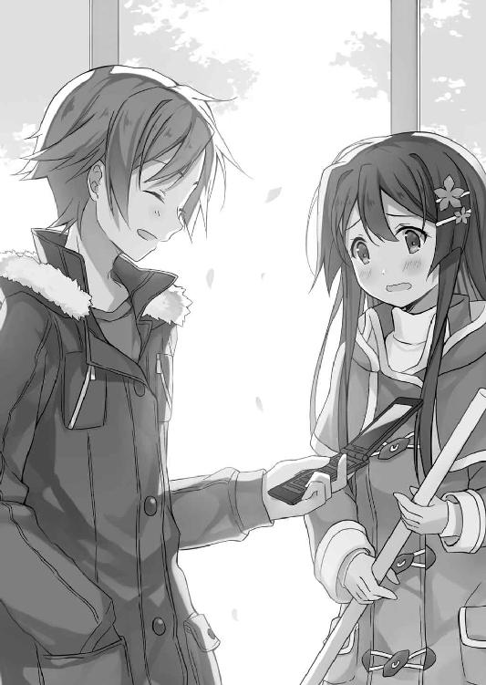

| アルカナ・ナラティブ (ファミ通文庫) | |
| 射当ユウキ | |
| (2016) | |
本作品の全部または一部を無断で複製、転載、配信、送信したり、ウェブページ上に転載することを禁止します。また、本作品の内容を無断で改変、改ざん等を行うことも禁止します。
購入時にご承諾いただいた規約により、有償・無償にかかわらず本作品を第三者に譲渡することはできません。
本作品は本文縦組で制作しております。また、電子端末での閲覧に向くよう、一部デザイン等を変更しております。あらかじめご了承ください。
目の前の相手に不敵な微笑みを浮かべてみせる俺。
俺に退くという発想はなかった。容赦なんて誰がしてやるものか。
けれど、人間は追い詰められれば必死に抵抗してくる動物だ。目の前の相手も例外ではなく、敢然と立ち向かってくる。
「ふざけんな！ 俺が屈服なんてするものかよ！ 瀬田翔馬は仲間を裏切って危害を加えろ！」
懲りずに命令を下す相手に俺はうんざりしていた。
彼は他者の心を蝕み、相手を言葉通りに操る力を持つ。【皇帝】のアルカナ使いの魔法【オートマトン】は、向こう見ずな正面突破では越えられない高い壁だ。
だけど【皇帝】の魔法は俺には届かない。
彼は表情に焦りをにじませながら、更に命令を下す。
「俺を憐れみの目で見るな！ 瀬田翔馬は自分の目を突け！」
絶対だったはずの彼の命令は虚しく霧散。
叫べば叫ぶほど【皇帝】の威厳は地に落ちる。
「どけ......見逃してくれ！ 瀬田翔馬は俺に道を開けろ！ とにかく俺の邪魔すんな！」
もはや負け犬が吠えているだけだった。
相手はまさしく、恐怖に震え上がった被害者だ。
被害者の少年は俺に懇願する。彼は多重債務で首が回らなくなったみたいな顔をしている。
滑稽さの大安売り。人間がここまで無様になれるとは面白い発見だ。
目の前の少年はクラスこそ違えど、俺と同じ高校一年生。なのにごっそりと希望を天引きされたみたいな様相。
彼から距離を置いたところでは、彼の相棒の男が気絶していた。
気絶中の男を、頭部分を目元以外隠した俺の共犯者ともいえる人物が睥睨。共犯者の右手には鈍く光る木刀。木製であっても使い手のせいで魔剣じみていた。
「俺はもう反省している！ その魔法を解除してくれ！」
【皇帝】のアルカナ使いたる少年が、【魔術師】の俺に頭を下げてくる。
だけど俺は【皇帝】に魔法を使い続ける。慈悲心は菩薩様の管轄ですゆえ、俺は取り扱っていない。
俺の酷薄なやり方が許されるかなんて知る由もない。
【愚者】の行く道に、見通しが立つわけもなかった。
正しい噓のつき方も知らない、無知蒙昧で可能性の残り滓みたいな噓つきの悪あがき。
入学式にたった一人でやってきた俺は、式の後もたった一人で途方に暮れていたのを覚えている。
あの日からはじまった高校生活で、どんな人々と出会うかは想像しようがなかった。
【魔術師】になった俺は偽りの自分を装うことを覚えた。
【女教皇】との出会いは価値観を一変させた。
【女帝】が示した幸せの形には未だ頭を痛めている。
【皇帝】を乗り越えた先に何を摑めるかはわからない。
それでも、俺が手に入れた魔法は人を騙すぐらいしか使い道がない。
疎ましい力を俺は行使し続ける。
魔法【レンチキュラー】は俺を、瀬田翔馬以外の人間に見せることを可能にする。
今以て俺は、目の前の被害者少年の姿に自分を偽っている。
【皇帝】の彼は、俺を瀬田翔馬と認識できずに暗礁に乗り上げていた。彼は自分の写し身に戦慄いているわけだ。
乾いた足音を響かせて、木刀を持った共犯者が俺たちの方へと近づいてくる。共犯者の目つきは、鋭利な刃物みたいで妖しく美しい。
「う、うわぁぁぁ！」
被害者側が、ついにおかしくなった。
逃げ出す【皇帝】は、人としての尊厳までかなぐり捨てていた。人間、窮地に陥れば意外と機敏に動けるもの。彼は器用に俺を避けて、俺の背後へと駆けていく。
彼が目指す扉の先には、太陽の輝きがあった。彼にとってその光は、地獄に垂らされた蜘蛛の糸なのだろう。
......おかしいねえ、ここは平和な現代日本なんだけど。
去る者は追わずという言葉が、先人の説いた教えにあった。功徳を積みたい俺はとりあえず見逃してみた。
まさか俺に欠片とはいえ慈悲心があろうとはな。菩薩の道も一歩から。果ては長いが諦めるような時間ではないらしい。
──クラス一の美少女を騙し追い詰めて以来、噓との距離感を摑めてきているのかな？
ちょっと人間として丸くなったかも。
とはいえ、逃げた相手には暗黒の運命が待ち受けていた。
「逃さん」
荒れ果てた廃墟に、人型をした絶望が訪れる。
「ぐぇっ......！」
顔面にしたたかな打撃を受けた敗残者は後方に吹き飛ぶほかなかった。
臆面もなく陽の下を歩ける高校生活でありたい。ささやかで、けれど、罪人が口にするにはおこがましい夢。
普通の高校生として、普通の日々を、普通の仲間たちと、普通に過ごせれば、それだけで俺は満足だった。
なのに入学早々、感じる空気にはねっとりとした気持ち悪さがあった。
自分の教室がどこにあるのかすらうろ覚えの、入学式を終えた翌日。
廊下ですれ違った、まだ名も知らない教師に「おはよう」とタメ口で挨拶をした。
待てよ、学校だと目上の人には敬語を使わなきゃいけないんだっけ？
怒られるの面倒だなあ。
あーあ、何か奇跡が起きて目の前の教師が俺を偉い人──例えば校長先生とかに勘違いしてくれないかな。
......なんて、そんな奇跡起きるわけないわな。
ところがだ──。
「おはようございます。今年の生徒たちも元気そうですね、校長」
......この人は俺を指して校長と言ったが、当然、俺は校長になった覚えはない。
俺が知っているこの学校の校長は、五十代半ばくらいの、がっしりとした体格で、質実剛健そうな雰囲気を放った、どこぞの企業の重役みたいな出で立ちの男性だ。
一方、俺の外見は、どこにでもいそうな若者である。体格は割と痩せ型、優柔不断そうな雰囲気の草食系男子。仮にここが暗い夜道でも校長と間違えるなんてありえない。
目の前の教師が幻覚でも見ていなければ説明がつかない。
この状況をコメディと取るべきか、ホラーと取るべきか。
「どうかされましたか？」
「いや、昨日から考えていた案件がふと頭をよぎったんだ」
聞いてくる教師に、誤魔化すような笑顔をつくった。
誤魔化したといっても、言葉の内容に噓は含まれない。本当に昨日から頭を抱えていた案件を考えていた。
高校生活は新しい自分を手に入れるチャンスなのだ。徹底的に『噓』を排除しなければならない。
そそくさとこの場を後にして、三階にある自分のクラスへと駆けこんだ。
座席表で自分の席を確認。席に着くと、今しがた起こったことについて真剣に思案。
ことの始まりは昨日の朝。
──自分の存在を対象者に錯覚させることができる。
そんな奇怪な妄念が頭にこびりついて離れなかった。妄念はいつまで経っても消えることなく、強迫観念と化していった。
先ほどの俺は、一瞬とはいえ目の前の教師が俺を校長と錯覚してくれないかと考えた。
......そのせいで変な異能が発現してしまった？
いやいや、まさか。この世には魔法や超能力などなく、万事は非情なまでの合理性と物理法則に従って動いているというのが俺の世界観。
だが、このままでは常識は撃沈。高校入学早々からパラダイムシフトを起こすハメになる。
右眉の上を手で摩る。
実は俺が抱えている悩み事は、『自分の存在を対象者に錯覚させることができる』という妄想だけではない。
それは奇しくも妄想と同じくして、昨日の朝からあったもの。
思考回路なんて目に見えない概念的なところにではなく、身体的に。
昨日の朝、身支度を整えるべく洗面台に向かうと、自分の右眉の上に変なものが書かれているのに気付いた。
【Ⅰ】──と。
何を意味するかもわからない。アルファベットの『アイ』なのか、ローマ数字の『イチ』なのか、それとも他の文字や記号なのか。
いっそ、これらすべては心労が生んだ妄想ってことにしておきたい。
新しい生活を始めるのは、心に大きな負担をかける。特に俺の場合、小中学校ともちゃんと通っていなかったので、やっぱり不安は大きいわけだ。
非現実的な妄想に逃避して、心の安定を保とうとしているに違いない。
うむ、我ながら筋の通った精神分析。人の心を弄んでいた経験がこんな方向に役に立つとは思わなんだ。
......消したい過去だが。
先ほどの教員はきっと心を病んでいて、幻覚でも見ていたのだ。最近は教師が心の病を患いやすいって聞くしな。念じていた校長と一致したのは偶然の産物という方向で。
思案していると、始業のチャイムが鳴り響く。
合わせて、このクラスの担任である女性が教室に入って来る。
二十代後半くらいの若い教員。グレーのレディーススーツを上品に着こなしていた。落ち着いた印象を受ける大人のお姉さんだった。
ここでふとひらめく。この人に問題となっている異能を使ってみるのはどうだろう。
異能を使って、さっき廊下で挨拶を交わした教師に化けてみる。
俺に本当に異能が宿っているなら、突如現れた別の教師に担任は大慌てする。
逆に、異能が俺の妄想だったなら普通にホームルームが進行するだけ。
十中八九、後者であろうが、念のために確認しておこう。憂いは断っておいて損はない。
本当は教室にいる人間全員に同時にやってみたかったが、何となく出来る気がしなかった。何かの縛りかな？
細かい条件は無視して、思い立ったが吉日と言わんばかりに、念を送ってみる。
子どもの頃、テレビに出ていた自称超能力者の真似をして、スプーンを曲げようと必死に念じたことを思い出す。もちろん、スプーンは曲がるはずはなく、後になってスプーン曲げのトリックも周りの大人から教わったのだが。
超能力なんてない。
魔法なんてありえない。
......はずだったのだが。
「どうかされたんですか、亀岡先生？」
亀岡先生というのは、さっきの教師の名前か？
この先生、念というか電波というか、その手の不思議エネルギーを受信しておられる。
俺が使った特殊能力は、目下担任を騙し続ける。
担任の顔に、混乱と恐怖の色が広がっていく。
その様子に、俺の頭がズキリと痛む。
底知れない不安を覚えた俺は、能力の使用を強制停止。
能力を解除した瞬間、頭の疼痛も消えていく。
「何かあったのか、先生？」
たじろぐ担任に、さも無知な生徒を装ってみせる。そんな狡すからい誤魔化しばかりに長けている自分が憎い。
「ごめんなさい、ちょっとあなたがうちの教員に見えてしまって。でも、そんなわけないわよね、気にしないでちょうだい」
先生が謝ってきたので、
「そうか......」
表には出さないが大混乱。
マジでこの人、俺をさっきの教師と錯覚していたらしい。
「先生、もう歳なんじゃないですか～」
怖れ知らずな茶々を女子の一人が飛ばす。
「こら、初対面の相手にそんなことをいうもんじゃありません。私はまだ一応二十代よ。ちなみに嫌いなタイプの人間は、人の歳を四捨五入する奴ね」
ユーモア交じりにたしなめる。教室は皆の笑い声で和やかな空気に。
俺も表面的には笑っていたが、内心は全然笑えない。
冗談抜きで俺に変な異能が宿ってやがるのか？
いや、それは百歩譲って認めるにしても、内容がマズ過ぎる。
──自分の存在を対象者に錯覚させることができる。
つまり、相手を騙したい放題。
俺にとっての禁断の果実が、手の届くところにぶらさがっているようなもの。
嫌だ。
断固拒否する。
もう詐欺とか、ペテンとかそんなものから足を洗って、真っ当な道を歩きたいんだ。
◆
普通の人間になりたい。
同年代の連中が『特別』を希求する中、俺は『普通』を渇望する。
物心ついてから俺が置かれた環境が、お世辞にも普通ではなかったからだ。
両親はいわゆる劇場型詐欺を行うグループの構成員で、俺も幼少から組織に加担させられていた。
幼稚園から小学校低学年までは、振り込み詐欺をする際にＡＴＭでの監視に駆り出された。
標的がちゃんと振り込んだなら問題はないが、まれに、行員が不審の念を抱き、振り込みが完了する前に計画が破綻してしまう場合がある。
計画失敗の情報は即座に組織に伝達されねばならない。とはいえ、詐欺行為がまさに成立しようとしている現場に居合わせるのは多大なリスクを背負う行為。
そこで子どもの出番である。いざＡＴＭを前にして計画が露呈しても、子ども連れの人間が、まさか詐欺グループの監視役とは誰も思うまい。
もし、警察に調べられても、俺を連れた監視役は実の親。親子がＡＴＭコーナーにいただけと高を括ってしまうのが人間心理である。
組織の一員として、幼少より育ってきた俺には『噓がいけないこと』という社会生活を送る上での道徳が欠如していた。
もし、噓をついたとしても、咎める良心が、俺の心の機能には存在していなかった。
良心の欠落は心の歪みを生み、心が歪んだ状態での成長は、更に心を歪ませる悪循環。
社会のルールを教えるべき親が、既に反社会的な人間なのだ。まともな心が育まれないのは当たり前だ。
しかも、俺は小中学校にまともに通っていない。
幼心で感じ取ったのだ。真面目に学校に通っても人生を送る上でプラスにはならない、と。
属している組織が金を騙し取ってきた相手は、いわば真面目に組織側の言葉を聞いたが故に騙されたのだ。
学校では、まず真面目に話を聞くことを要求される。授業で教師の話を聞き、集会で校長や生徒会の連中の話を聞く。
黙って聞くことなら犬でも出来る。学校は生徒を犬のように扱う。
そして生徒を、食うか食われるかでいえば、食われる側の人間に改造する場所だ、と考えたのは小学三年生のとき。
それ以来、俺は積極的な不登校を敢行。
両親は何も言わなかった。
学校へ行かなくなった分は暇なので、自らも食う側の人間になるべく、いかにすれば人を食い物にできるかを勉強していった。
周りには裏街道の歩き方の指南役がゴロゴロいた。だから、成長は著しかった。
小学校四年生に上がる頃には、自発的にインターネット上でオークション詐欺やフィッシング詐欺を始めていた。
集めた資金を元手に、次は投資詐欺用の組織を展開。こちらの方はさすがにネット上だけでは運営できなかったので、組織の代表はネット上で知り合った大人に任せた。
俺は組織の代表に裏から計画を伝えるブレインとなった。姿を現さず、陰から人をマリオネットのように操るのはえも言われぬ快感と優越感を伴った。
なお、行った計画内容は以下の通り。
まずはネズミ講組織を展開。組織下部の人間を食い物にし、組織上部に甘い汁を啜らせる。
ある程度、組織上部の信用を得てきたところで、今度はそいつらに実態のない会社の社債を高利回りと宣伝して購入させる。
勿論、この実態のない会社というのはこちらで用意したもので、カモたちは俺の作った劇場で踊っていた。
この計画にあたり、投資に対する誤った知識の植え付けのため、陳腐な投資セミナーを高額の授業料で企画もした。それも中々にうまみのある金稼ぎであった。
組織下部の人間は組織上部の人間に食われ、組織上部の人間は俺に食われる。
弱肉強食。蟲毒の世界。
当時は有頂天だった。
大人とは馬鹿ばかりで、社会など甘っちょろいとあらゆるものを見下していた。
しかし、破滅の時は唐突に訪れる。
投資詐欺用の組織は、大きくなりすぎたのだ。加えて、一部の人間だけが真の利益を貪れるシステムを構築したのが不味かった。
抱えきれない借金を背負った者が大勢現れ、俺はインフラとしか見ていなかった構成員に裏切られ、ついに組織は警察に踏みこまれる。
後は、ドミノ倒しみたいなものだった。
まず、組織の代表を務めていた大人が逮捕された。次に、彼の証言により陰の『ブレイン』の存在が明らかになる。組織の代表との通信記録から警察は俺に辿り着き、あえなく御用となった。
その時、十一歳。
刑法の規定では、刑事責任年齢がおおむね十二歳以上となっているため、刑事処分は免れた。『おおむね』であるため十一歳でも刑事責任が問われる場合もあるが、俺の場合はそこが裁判での論点となった。
一度は家庭裁判所で少年院に送致される決定がなされたが、高等裁判所はこれを取り消す。少年院送致決定取り消しは極めて異例らしい。差し戻された家庭裁判所は、最終的に俺を保護観察処分とした。
でも、事件はそれだけで終わらなかった。
俺の身辺が捜査されるに従って、警察は両親が所属している犯罪組織に辿り着く。
両親は組織共々逮捕。裁判の結果、実刑十年が申し渡された。
更に、十一歳の少年が事件の裏で糸を引いていたというニュースを、マスコミが放っておくわけがない。
事件は連日報道された。
テレビや新聞では、未成年であるため俺の顔はモザイク処理されたり、目の部分に黒い棒線が引かれたりした。
少年法の加護をいかんなく甘受したが、一部雑誌は加工なしで顔を公表していた。これは社会問題となって、その週刊誌の回収騒動が起きるなどした。
大人たちの祭囃子を俺は冷めた目で眺めていたが、やがて自分の犯した罪の重さを知らしめられることとなる。
報道の波がひとまず引いた頃、俺は父方の叔父夫婦に引き取られた。
元々、両親は親戚とは疎遠で、叔父夫婦も他に引き取り手がいないから渋々身柄の引き取りに応じただけであったようだ。
しかし、ただ俺を引き取ったのでない。
組織のせいで、借金を抱え込み自殺してしまった人々の遺族への謝罪を条件とした。
事件を担当した刑事に連れられて、被害者の家を何軒も回った。
血反吐が出るまで殴り倒してくる者もいた。
涙ながらに『妻を返してくれ』と叫ぶ男性もいた。両親がいなくなり、孤児になった子どもたちは、どうして自分の両親が死んだか理解できていなかった。
出逢った人々の全ては、俺に幸せや未来を奪われていた。
彼らの表情を見て、ようやく自分の犯した罪の重さを自覚し始めた。
あまりに遅すぎる後悔と、そして恐怖。
いつか、自分が犯した罪が原因で、彼らと同等の絶望を味わうに至るのではなかろうか。
逮捕された時にはなかった罪悪感が一気に膨れ上がる。
理屈として理解できなかった罪を、被害者遺族に会い、彼らの負の感情を一身に浴びて、ようやく自分の犯した罪の何たるかを知った。
背負う十字架の重さに、茫然と立ち尽くすしかなかった。
警察から解放されて、正式に叔父夫婦に引き取られてから、俺は何をするでもなく時間を過ごした。
中学への登校は避けた。可能な限り、人に会うのを避けた。学校側も犯罪者には来て欲しくないらしく、不登校児の家を教師が家庭訪問するなど皆無。
そんな俺に叔父夫婦は何も言わなかった。ただ、一つだけ、
『高校は出ておいた方がいいぞ』
と助言したのみ。
不登校で、さりとてやることもないので、とりあえず高校受験用の勉強だけは行った。
そして、この春、無事私立高校に合格。四月からの新しい生活を手に入れた。
──とにかく、『普通』を手に入れよう。
罪の償い方は未だ分からないままだけど、長い時間を掛けて歪んでしまった人生を、普通と呼ばれるものに矯正しなければならない。
歪んだままでは、きっと罪を償うことすらままならないのだから。
◆
担任が俺を教師と見間違えた一件から派生して、教室の空気は幾分か和やかであった。
しかし、注意を払うと生徒一人一人の所作は、まだぎこちない印象も受ける。
教室とは、クラスとは、つまり小さな社会。自分をどのポジションに持っていくかは、学校生活を送る上では重大な問題である。
果たして、素の自分を前面に出しても大丈夫な風土であるのか、それとも逐一空気を読まねば周りから排除される危うい土壌なのかすら、現段階では定かではない。
この教室のどこに地雷が埋まっているのか情報は皆無。
学校は将棋やオセロのように全ての情報が開示される正々堂々としたゲームではない。性格的には麻雀やカードゲームなどの虚々実々入り乱れる混沌としたフィールドなのだ。
とにかく、みんなこの時期はクラスの様子見から始める。友人とか仲間と呼べる存在を手に入れるのは、時間がかかるのを覚悟しておこう。
──同年代の友達。
良い響きだ。
社会の裏側を歩んできた俺からすれば、是非とも手に入れたいものである。
その為には、自分の過去は秘匿せねばなるまい。
お互いについて何でも知っているのが良い友達である、なんて不文律など信じない。
俺の過去を知られれば、きっとドン引きされる。
普通の生活を手に入れるためには、余計な情報を他に漏らすのは得策ではない。
過去は自分一人で背負うもの。
他者に見せびらかすものではあるまいよ。
そうなってくると不安なのが、いつの間にか身についていた変な能力と、眉の上の落書きだ。
どちらも俺の過去と関連性があるとは考え難い。現実で起こした事件と結びつけるにはファンタジーすぎる。
でも、注意一秒怪我一生。万が一、神がかり的な因果律が働いた結果として、変な能力と落書きが現れたって話なら、どうにか排除せねばならない。
不安要素は早々に消えて貰うに限る。
何事も始まりが肝心。極端に言えば竜頭蛇尾でも構わない。初期条件の設定を誤れば修正に手間と労力を割かれるハメになるのはどの業界でもきっと一緒だ。
この時期に慎重になり過ぎ、なんてことはありえない。
とはいえ、調査しようにも心当たりがなさすぎる。
しかめっ面で、どうアプローチすべきか考えていると、前の席の女子生徒が、俺の顔を怪訝そうに眺めていた。

その手には前の席から回されてきたであろうプリント。
「悪い、ちょっと考え事してた」
プリントの流れを、自分がせき止める形になっているのに気付き慌てて謝る。女子生徒からプリントを受け取って、自分の分を取ると、残りを後の席に回した。
普通ならば、それだけで済む話なのだが──。
プリントの受け渡しが済んでなお、前の席の女子生徒は俺を凝視する。
ガン見レベルの相手の視線に、ちょっとした恐怖を覚えた。
もしかして、彼女は自分の顔に覚えがあるのではないか？
昔、俺が起こした事件は社会を大きく揺るがせた。その際に、一部の週刊誌が未成年であった俺の顔写真を掲載して問題となった。その週刊誌の写真と、俺が同一人物だと気付いたとか。
ない話ではない。
ゴクリ、と唾を飲み込む。
口の中はカラカラになるが、それでも平静を装いつつ、
「どうかしたか？ 俺の顔に何かついてる？」
フランクに聞いてみた。
少女は答えず、俺をじっと観察する。
数秒の間に、最悪の事態が起きた場合への対処を思案する。
自分の過去は隠し通したい。
でも、噓を重ねて誤魔化すのも避けたいところ。
噓をつくのは実に労力のいる作業なのだ。ついた噓を隠すために、また別の噓をつく必要が生じるなんてのは下手な噓つきにはよくある話。
心理的コストの面からしか『噓は良くない』としか思えない自分はやっぱりクズだ。道徳心なんてカケラもありはしない。
全く自分が嫌になる。
そんな心境で、とにかく有利に事を進められるように改めて少女を観察。
漆黒の瞳は黒真珠を連想させる静かな煌めきを湛え、白磁のように透き通った肌と、凜とした鼻梁。絹の如くさらりと流れる長い黒髪。
顔立ちで減点対象があるとすれば、目つきの冷たさからくる近寄りがたさ。しかし、それも見ようによっては神秘的な雰囲気に変わってしまうほどに美しい少女だ。
「ねえ、髪を掻きあげてみて」
ぶっきらぼうに少女は注文してきた。
「え？」
唐突な彼女の要求に一瞬戸惑ったが、すぐにその意味を汲み取った。
──この少女が問題解決の糸口になるかもしれない。
その可能性を信じて、前髪を掻きあげてみせた。
そこには【Ⅰ】の文字。
もしかして、彼女はこの文字に心当たりがあるのかもしれない。
だから、髪の隙間からわずかに見えるだけであろう文字を目ざとく見つけ出したに違いない。
渡りに船とはこのこと。期待で胸を膨らませた。
「ねえ、あなたはこの文字が何なのか心当たりがある？」
微妙な言い回しである。
彼女も眉の上の文字と無関係ではないにしろ、その全てを知っている風には思えないような言い方。
『お前こそ何か知っているのか？』と問い返そうとしたが、担任とクラスメイトの視線が、こちらに釘付けだった。
密やかにささやく声も聞こえてくる。
「あの二人って付き合ってるの？」
「もうこのクラスからカップル誕生？」
「チクショー、俺あの子狙ってたのに......！」
さすがはお年頃の生徒たち。どうしても、話題は色恋沙汰になってしまう宿命にあるようだ。
それを聞いた少女は、顔を歪めて、ぷいっと顔を逸らして、後頭部を見せる。
「はいはい、静かに。恋に恋焦がれてる内は、アナタたちはまだまだ雛鳥よ」
手をパンパンと叩きながら生徒に注目を促す担任。
ちなみに担任は美人で、恋愛経験豊富そうな女性。そんな彼女に対して反論しようにも、一同まだまだヒヨっ子なのであった。
◆
この日の日程は、朝のホームルーム、始業式、クラス写真撮影、帰りのホームルームという緩いものである。
帰りのホームルームでは、クラスメイトによる自己紹介が催された。シャイではないものの隠蔽したい過去が山積みの俺にとっては苦渋のイベントだ。
しかも、苦渋であれ噓はつきたくない。
『呼吸をするように噓をつけ』と命令されたら、きっと出来てしまうほどに俺の倫理観は破綻している。ただ、積み重ねてきた噓がバレて、目指している普通の生活が潰えるのは恐ろしい。
したがって、正直一辺倒で自己紹介。ただし、隠すところは隠す方向で。
幸いにして俺は名字が『セタ』だから、名簿番号の最初から始まろうが終わりから始まろうが、順番は真ん中ぐらい。周りの空気を察しつつ、自己紹介を空気に合わせたものに練っていく時間は十分にある。
自己紹介は名簿番号一番から始まり、みんな自分の名前と出身中学や趣味を言う程度の簡単なものだった。みんなやっぱり今日は様子見段階。『個性を大事に』なんて昨今のお題目なんてクソ食らえと言わんばかりの無個性さ。
順番は巡って前の人までやってくる。
つまり、朝のホームルームで俺をガン見していた女子である。
彼女はすっと席から立ち上がると、愛想成分が皆無な表情と声で、
「周防氷華梨です。出身中学は北中です」
とだけ述べて静かに着席した。
『周りに媚びないその態度潔し』と取るか、『何あの子、超怖いんですけど～』と取るかは個人裁量。なお俺は前者だ。
さて、俺の自己紹介だが、
「瀬田翔馬です。趣味はマンガや映画を観ることです」
無難に柔和な表情と言い回しで、ありふれた内容。
そんな具合に、全編にわたってぬるいテンションでクラス全員が自己紹介を終える。後は担任が「みなさん、一年間このクラスで仲良くやっていきましょう」と普通に締めて、起立、さようなら、解散という流れ。長いようで短い一日であった。
が、俺にとって本番はここからである。
周防氷華梨をつかまえて、眉の上の【Ⅰ】について聞かねばならぬ。
朝のホームルームが終わってからは、彼女と言葉を交わしていない。
ホームルームが終わった後は体育館にて始業式。次いでクラス写真の撮影と、この日のスケジュールは進行していった。
名簿番号の並んでいる俺と周防氷華梨は常に隣り合わせだったのだが、周りに人がいるところで、得体の知れない【Ⅰ】の話はしたくなかった。
周りにいた連中に、変な噂を広められたらたまったものではない。
まっとうな生き方をしていれば変な噂を流されても断固として否定できるが、俺の過去は後ろめたさの百貨店。胸を張って陽の下を歩きたい。
なので、日程終了後に彼女が一人になったところで話しかけるしかない。
ホームルーム終了後に、一目散に下駄箱へ向かう彼女の後ろをついていく。
尾行しているわけではない。たまたま、帰る方向が一緒なだけだ。......と自分に言い聞かせないとやってられない。
下駄箱で靴をはき替え、玄関を出たところで、
「周防、ちょっといいかな」
背後から、彼女の肩に手を掛ける。
「......いやッ！」
ばしんっ！
大慌てで振り回された周防氷華梨の腕は、俺の頰をしたたかに殴打。
「痛ェ......」
頰を押さえながら、わが身の悲運を嘆く。
いきなり背後から肩を摑まれたら誰でも驚くわな。彼女の場合は、反応が激しすぎる気もするが。
「ごめんなさい。大丈夫？」
冷静さを取り戻した彼女は俺の身を案じているが、じりじりと後ずさり。
あれ？ 言ってる内容と取るべき行動が違うんじゃねえ？ むしろ俺、変質者扱い？ 軽く傷つきながらも、
「あのさ、朝のホームルームでこれを気にしてたけど、何か心当たりがあるのかなと思って」
前髪を掻きあげて【Ⅰ】の文字を提示。
「そうよね、やっぱりあんな中途半端な態度を取ったら気になるわよね。じゃあ単刀直入に聞くけど、あなたはその数字に心当たりがある？」
フレンドリーさに欠ける堅苦しい言い草だ。
喧嘩を売っていると受け取られても仕方がない態度だが、俺への敵意の有無についてはあえて考えない。
「残念だけど、全くないよ。昨日から、この数字が何を意味してるのか気になって、調べようとはしてる。けど、どう調べたらいいのかすら分からずじまいだ」
......ん、数字？
今、周防は【Ⅰ】を、数字と言ったよな？
そんな困惑など意に介さず、彼女は落胆した様子で、
「だったらいいの。ちょっと気になっただけだから聞いてみただけよ。じゃあ、さようなら」
そそくさと立ち去ろうとするが、ここで逃すわけにはいかなくなった。
「ちょっと待った。もうちょっとアンタと話したいことがある」
勢いで彼女の腕を摑んだ。
彼女の発言はちょっとおかしい。
この【Ⅰ】の文字を初見で数字と判断するのは不自然だ。
書き込まれた張本人さえ、アルファベットかローマ数字か、それとも他の何かなのか分かっていない。なのに、第三者の彼女が『数字』と言う。
「どうしてアンタは、これが数字だと思ったんだ？ 他にも色々読み方はあっただろうに、わざわざ数字を選んだ理由を教えてくれ」
「は、離して......！」
彼女は全身を震わせて、腕を振り回した。
尋常ではない怯え方に、俺も自分の余裕の無さを恥じて手を離す。
ここで彼女に逃げられたら、それはそれでしょうがないよな、やっぱり。
貴重な情報を逃してしまうが、嫌がる相手から無理に訊き出そうとするのは人としてどうかって話だ。まっとうな道に戻るのが高校生活のスローガン。ここは道徳優先という方向で。
なんて諦めていたが、予想に反して彼女は逃げなかった。
力なくへなへなとその場にしゃがみこむ。
ぜいぜいと全力疾走したみたいに呼吸が荒い。
「大丈夫か？」
手を差し伸べるのは控えたが、何もかも急性な彼女の反応を心配せずにはいられない。
「ごめんなさい。調子が悪いから今日は帰らせて」
心底申し訳なさそうに懇願されたら、誰が彼女に事情聴取を強要できようか。
優柔不断な自分を正当化しているのは重々承知。
何も言い返せない俺に行儀よく一礼だけすると、周防はこの場から去って行った。
ぽつんと残された俺は一人立ち尽くし、状況を整理する。
結局、彼女は俺の額の【Ⅰ】についてどこまで知っているかすら情報を入手できなかった。
調査能力がなかったから失敗したのか、俗に言う『女のあしらい方』がなってなかったから御破算となったのか。
後者な気がする。
かといってこちとら同年代の異性のいる環境には慣れていない。これから腕を磨いていくしかない。
できる気がしないなあ。
『普通の高校生活』を送るのに、カノジョの存在って必要条件なんだろうか。
カノジョいない歴と年齢がイコールのチェリーボーイの悩みは尽きませんでしたとさ。
はあ、と自然とため息が出てしまう自分は人生に疲れているに違いない。
考えていても、暗い気分になるだけだから俺も帰ろう。
下駄箱を出て、校門をくぐる。
で、そこにあったのは──。
「君、一年生だよねえ。入学式の時から可愛い子だなと思ってたんだ。こんなところで会えるなんて超ラッキー」
「ねえねえ、これから俺たちと遊びに行かない？」
ガラの悪そうな男たちに女子生徒が絡まれている。
こんなシーン、現実にあるのか。
ベタベタ過ぎる場面の顕現に不謹慎ながら感動する。
......訂正、感動できない。
「いや、放して下さい!!」
囚われの女子生徒は周防だった。
......今日は彼女にとって厄日なのか？
絹の滑らかさの黒髪に、凜とした涼しい瞳の周防は、まるで戦国の世の姫君のような美しさ。
そんな美姫に絡んでいるのは、ガラと頭の悪そうな二人組の男たち。
一人はド派手な金髪に、耳には髑髏のピアス。
もう一人は、スキンヘッドで耳だけでなく、鼻にもピアスを装備したいかつい男。
どちらもうちの学校の制服であるブレザーを着崩している。
校則は守るべきだ、とは言わないが、如何せん彼らの過剰な装飾は美的感覚を疑ってしまう。宗教上の理由でもなければ、彼らのセンスは最悪と評さねばならない。
こんな白昼堂々ナンパとは御苦労なこった。いや、むしろ、彼らの強引なやり口はナンパではないな。
いきなり相手の手を取って捕まえるなんて痴漢行為だろうよ。
阿呆な連中だ。
これだけ往来が激しい中で、嫌がる乙女に強引に迫っていれば、誰かが止めに入るはず。
......誰かが、きっと周防を助けてくれるよな？
それまで冷静に状況分析していたが、この場に立ちこめる違和感に気づいてしまう。
現実問題として、誰も周防を助けようとしていないではないか。
改めて周囲を見渡す。
通り過ぎる生徒は多数いる。
なのに、周防に絡む彼らを止めようとしない。
ちらりと横目で彼らを見て、そして我関せずと言わんばかりに視線を逸らす人の群れ。
ああ、そうか。
高校生活への希望に胸を膨らませっぱなしで、すっかり忘れていた。
所詮、人間なんてこの程度の生き物であるのを。
誰だって、自分が可愛いのだ。
誰かが困っていても、ガラの悪い連中と関わり合いになるのは嫌に決まっている。
だから、みんなして自分の正当性を守るための言い訳を心中に紡ぎ上げる。
──自分は無関係だ。
──きっと他の誰かが助けに入る。
──絡まれた奴にも非がある。
通り過ぎる連中の頭の中にあるのは、こんなカンジの自己正当化。
じゃあ、俺はどうなんだと、自分に問うてみる。
普通の学校生活を送りたい。
ここで周防を助けに行こうものなら、どんなトラブルに巻き込まれるかわかったものではない。
普通の生活のための危険因子は排除せねばならない。
自分に反吐が出る。天に向かって唾を吐き、自由落下してきた唾を自分の顔にぶつけるべきだ。
相変わらず、俺は何も変わらんな。
自分の利益が最優先で、他人の不幸などお構いなし。
これでは噓をつかないと誓いを立てたところで、人間のクズと何が違う？
普通って何？
誰かが困ってたら、助けるのだって普通なんじゃないのか？
だけど、彼らは外見からすると、かなり屈強な体軀をしている。
ボクシングや空手などの格闘技経験者を彷彿とさせる体つきは、いるだけで圧迫感を与えてくる。
もし、向こうがこちらに手を上げてきたなら、簡単に吹き飛ばされる。
高校入学に当たって、周りの若人についていく為に体力作りや筋トレはした。しかしそれは、運動不足の最低値を平均値に持っていっただけにすぎない。
かといって、武器に使えそうなものは転がっていない。
どのように動けば、効果的に周防を助けだせるか思案する。
別にあの二人を倒す必要はない。
攪乱なり混乱させるなりできれば、そのスキをついて周防に逃げて貰えばいい。
......混乱ねえ。
頭によぎったのは最低で神様に中指を立てたくなる計画だ。
相手を混乱させるなら、おあつらえ向きの『異能』を俺は持っている──。
「おい、お前ら何をしている」
腕組みをしながら、可能な限り威圧的な声で金髪とスキンヘッドを牽制した。
「うげッ！」
「あんッ？」
二人の反応は真っ二つに分かれた。
金髪は気まずそうな表情をし、スキンヘッドはこちらを睨みつけている。
「何をしていると俺は聞いているんだ」
恫喝の声を張った。
すると金髪は、
「いやだなあ、先生。俺たちは新入生の彼女に学校案内しようとしてただけっすよ」
と腰低く言ってきた。
金髪は俺を『先生』と言う。一見すると奇妙な状況でも、俺にとっては計画通り。
『自分の存在を対象者に錯覚させることができる』異能を金髪に使っている。
金髪には、俺が亀岡先生とかいう、朝、俺を校長と勘違いした教師に見えているのだ。
彼のガタイが良くても、こちらは教師の権力を捏造している。下手に大きな態度をとれまい。
この異能がどういう原理で、どういう風に作用しているのかは未だ謎だが、そんなものはこの際どうでもいい。
使えればいいのだ。
けれどまったく問題がないわけではない。
ズキリ。
金髪に異能を使用してからずっと、万力で締められるような激痛が頭に走っていた。
原因はわかりきっている。
かつての俺は噓を使って人を破滅させ、あげく自分も破滅した。再び噓をつけば俺の未来は完全に閉ざされるかもしれない。
きっとこれは、無意識が痛みという感覚で警告しているのだ。
教室で担任に異能を使ったときも同じ。この異能は人を脅かすだけの猛毒だ。
誰も幸せにならない力なら使うべきではない。
だから、割れそうなまでに頭が痛むのは極めて理にかなっている。
気分はさながら、三蔵法師にあてがわれた輪っかに苦しむ孫悟空。
気を失いそうになりながらも、しかし、ここで倒れたらわざわざしゃしゃり出た意味がなくなってしまう。
気合と根性という前時代的な精神論だけで俺は立ち続ける。
金髪に対して異能を使い続ける限り、この頭痛は止まないのだろう。
一方でスキンヘッドは、
「おいおい、このガキのどこが先生なんだよ。制服も着崩せてないただの一年生だろう？」
金髪の言い分に反論。
それもそのはず。俺の『自分の存在を対象者に錯覚させることができる』異能は、何故か限定一人にしか使えないしくみ。
しかし、この場での目的は『相手を混乱させること』。二人して俺を『亀岡先生』と錯覚されるより、『両者で見えているものが違う』状況を作りたいのだ。
「いや、先生だろ？ 生徒指導で体育の亀岡先生以外に何に見えるんだ？」
「ああん、ただのヒョロそうなガキだろうが！」
見解の違いに、二人は混乱。
いや、それどこか双方意見を譲らず、みるみる顔が赤くなっていく。
仲違いまで発展するのは予想外だが、嬉しい誤算だ。精々、不毛に争っていてくれ。
「......これは一体どういうこと？」
周防は茫然と立ち尽くしていた。
既に彼女への縛は解き放たれている。この好機を俺は見逃さない。
「そこの女子生徒、関係ないならさっさと下校しろ！」
周防に叫ぶ。すると彼女は我に返り、即座にこの場から立ち去った。
周防へ絡んだのは、単なる好奇心か暇つぶしだったのか、金髪とスキンヘッドは周防を追おうとしない。
飽きずに俺が『先生』か『男子生徒』なのか揉めている。
「いいから、もう一回よく見てみろッ！ ......って、あれ？」
金髪が、再度こちらを向くが、そこには『先生』の姿はなかった。
「......どうなってんだ？」
更に言えば、スキンヘッドの前に『男子生徒』の姿もない。
既に俺は異能の標的を変更して、現在はスキンヘッドに俺をクラスの『女子生徒』に錯覚させている。
金髪にとっては俺の姿は初見。無関係な通行人の男子生徒Ａにしか見えないのだ。
スキンヘッドにとっては異能で歪んだ俺の姿は、通行人の女子生徒Ａにしか見えない。
二人を更なる混乱に沈めて、俺は悠々とこの場を脱出した。
上手くことを運べたが、達成感や快感はなかった。残ったのは頭痛の残滓と自分への嫌悪感。
──騙してしまった。
あれほど『もう人を騙さない』と自分へ戒めたのに。
自分の決意の浅さが嫌になる。
周防を助けるためだったといえば、自己正当化できるのだろうか。
いや、できそうにない。
今やったことは、結局自分が『噓でしか物事を解決できない』という実証になってしまった。
やっぱり俺は、どこまでいっても間違いを繰り返すしかないのだろうか。
そして、学校の最寄り駅。
プラットホームの両側が線路に接している形式の島式ホームと呼ばれる形状。上り電車に乗る者と下り電車に乗る者が、互いに背を向ける形で電車の到着を待っていた。
降車する駅の構造の関係で、俺はホームの奥へと進んでいく。すると、改札口から一番遠いところ、上り電車の線路を向くベンチに周防の姿があった。
「よう、今日は散々だったな」
俺は努めて軽めに挨拶した。
重々しい空気は苦手だし、深刻に捉えるのは彼女自身にも良くない。
ネガティブな想い出を、ネガティブな解釈で心にしまいこんでしまうのは良くない。
悪いのはしつこい男たちなのだから、単に『運が悪かった』くらいに取ってしまうのが一番良い。
俺が声をかけたのに、周防は茫然と虚空を見つめたままだ。
「おいおい、大丈夫か？」
周防の顔の前で、手を振ると、彼女はびくりと体を少し跳ね上がらせて、
「大丈夫。ちょっと、嫌なことを思い出してただけ」
やや呼吸が速く浅くなったが、周防は答えてくれた。
呼吸を整える周防。
落ち着きを取り戻した彼女は立ち上がる。
「さっきのは一体なんだったの？ 私に絡んできた男たちは、両方とも噓をついていないはず。なのに、お互いがお互いに疑心暗鬼になっていたみたい」
「『両方とも噓をついていないはず』ってどうして言い切れるんだ？ もしかしたらどっちかがとんでもない悪意を持ってたのかもしれないぜ？」
俺が異能で二人の認識を引っ掻き回したというのが真実。だが、それは全力で伏せてしまおう。
「それは......うん、確かにそうだね。今の言葉は忘れて。さっきは迷惑かけてごめんなさい」
俯き、顔を合わせてくれないが、声は真摯なものだった。
「気にするな。でさ、話は変わるんだけど......」
いきなり、この話題に転換していいものかと、俺は言い淀む。しかし、周防が俺の言わんとしている話を汲み取ってくれた。
「顔の文字を数字と思った理由？」
「そう、それ」
「......話さなきゃダメ？」
顔を俯けて、目線だけ上目にして聞いてくる。
美人の上目づかいは、男には反則技。クリティカルヒット狙いだと思うのは俺の心が邪だからでしょうか。
『嫌なら良いよ』と優柔不断な態度を取りそうな自分を、『喝！』と叱咤した。
「話せる範囲で良いから教えてくれ」
彼女はしばし逡巡しながらも、
「ここで見たことは絶対に誰にも喋らないって約束できる？」
深刻そうな表情に、俺の方が気押されてしまう。
ともあれ、ここまで来て無理なんて言えるはずもない。
「約束する。絶対に誰にも話さない。絶対にだ」
絶対なんて念押しの言葉は、実のところ自信のなさの表れだ。
人を騙し続けた俺の過去は、こうした約束の場において暗い影を落とす。
俺はそんな簡単に、人と約束することが許される人間なのだろうか。
俺はどこまでいっても簡単に人を裏切るクズのままで、約束は相手を傷つけて罪の数を増やすだけなのではないだろうか。
自分に対する疑念が渦巻く。
でも、この言葉を噓にしたくないのは事実。
自信のなさ故の『絶対』は、自分を奮起させるための『絶対』でもある。
噓になるのが怖いなら、破ったら針千本飲むぐらいの覚悟で約束するしかない。
「わかった。じゃあ......」
周防はブレザーの左腕を捲くる。おずおずと、気の進まない速度で。
現れた彼女の左手首には暗い紫色で、五百円玉二個分ほどの大きさの文字。
【Ⅱ】。
どう見ても、それはローマ数字でⅠの次の数を表すもの。
それも重要なのだがもう一つ気になる点が。
彼女の腕の文字の周囲には無数の切り傷が刻まれていた。幾条もの痛々しい傷は、どこかでひっかけて付けた傷とは言い難いほど量がおびただしい。
リストカットというやつですね、はい。
昨今の若者の間では、やっている人が結構いると某夜回り先生の書籍で伝え聞く。
本当かよと疑っていたが、初めて声を掛けたクラスメイトが該当者だなんて、夜回り先生へ謝罪の念を送信しておいた。
傷だらけの腕を提示するのをためらったのは、彼女なりの乙女心だろうか。
「もういいわよね」
傷だらけの腕を見られるのは、やはり周防にとって苦痛らしい。渋い顔をしながら、袖を下ろす。当然の反応だ。初対面に等しい相手に傷だらけの体なんて見せたくはない。周防は女の子なのだから尚のこと。
「十分だ、ありがとよ。それでその数字なんだけど、一体いつから？」
傷の跡については触れない。着目すべきは【Ⅱ】の文字だ。
「昨日の朝、起きた時にはすでにあったわ。心当たりがなくて気味が悪かった」
「昨日の朝......。俺も一緒だ。確かに不気味だよな、これ」
同じ感覚を共有できる同年代の人間がいるってのは、こうも心地よいものなのか。まあ、共有した感覚は気味悪さなんだけど。
「この数字が現れてから、何か変わったことなかった？」
と周防。
「特にこれといった事件はなかった」
彼女の問いに俺は答えるが、厳密には噓と言えるかもしれない。廊下で校長に間違えられたり、担任に能力が通じたり、周防をガラの悪い連中から助けたり。
俺の回答は、若干ながら事実とそぐわない。だから噓と言えるかもしれない。
正々堂々と真実を語れない罪悪感で胸が痛んだ。
「もしかして、噓をついてる？」
いきなり周防から刺すような指摘。
「そう......だな。本当は色々あった。妙に鋭いな」
「あ......うん......そうなの、女の勘は鋭いの」
しどろもどろな周防は怪しいが、あえて追及はしない。
彼女は更に聞いてくる。
「ところで、数字が現れてから超能力を使えるとかない？」
「え、えーっと、少なくとも透視能力や発火能力は持ってないけど。ちなみに周防は？」
重要な情報を引き出せそうな問い。でも、うかつに自分の情報を明かしたくなかった。踏み込まれるのを避けるためには質問に質問で返すしかない。
「そ、そうだよね。変なこと聞いてごめんなさい」
「気にするな。......にしても、何だろうねこの数字」
能力についての追及を避けるべく、俺は話題を逸らしていく。
周防の腕の【Ⅱ】の存在から、俺の眉の上の【Ⅰ】はローマ数字であると見なすのが自然な流れ。
Ⅰ、Ⅱ、と来れば、Ⅲ、Ⅳ......と続いていきそうだ。
でも、続くとすればどこまで続くのだろう。仮に続くとすれば、俺たちみたいに文字が刻まれた人間が他にもいるのだろうか。
謎は深まるばかりだった。
◆
翌日の放課後。数字の謎への手掛かりは、唐突に現れた。
下校時、俺と周防は校門で一緒になった。
今日は狙って一緒になったわけではない。本当に偶然だった。
不思議な数字に悩む二人の一年生の前を奇怪な出で立ちをした人物が通り過ぎていく。
珍獣ハンターの面持ちで、そいつの姿を眺める。
着ているのはうちの学校の男子の制服だったが、そいつの姿から連想したのは朝の駅前で選挙演説をしている政治家。
拡声器を持って、肩にはタスキが掛けられている。ただし、タスキに書かれているのは『あんたが主役』──某大型雑貨店のパーティ用品コーナーで見かけたことのある品物だ。
「皆さま、こんにちは！ メンタルヘルス部の部長の天野と申します！ 愛と勇気だけじゃなく、希望や可能性も友達と評判のワタクシでございます！」
出で立ちに真面目さが足りていない男の自己紹介。とはいえ、君子危うきに近寄らず。
周防も若干引き気味で、遠い目で彼を眺めている。
俺の中で、彼が『今月の関わっちゃいけない人ランキング・ナンバー１（ＮＥＷ）』に踊り出たところで、彼はトンデモない内容を言ってのけた。
「最近、身体の一部にローマ数字が出現して気になって気になってしょうがない、という人はおみえではありませんか？」
............。
............。
......該当者、ここに二名。
うわ、あの人なんか知ってるっぽいけど、あえて火中の栗を拾いたくねえ。
この状況は君子危うきに近寄らずなんだけど、同時に虎穴に入らずんば虎児を得ず。
昔の人はたくさん格言を作ったものだ。ただ、多すぎて整合性が保てていない。賢くなるのに古きをたずねるのも考えものである。ああ、矛盾。
俺たちの困惑なんて無関係に、天野という男は演説を続ける。
「ローマ数字を見て、『何これ、スティグマ？ アイ・アム・ジーザスの生まれ変わり？』なんて感慨を抱いた方がお見えでしたら、是非メンタルヘルス部の部室まで足をお運び下さい。繰り返します──」
そこまでぶっ飛んだ考えには及んでいないが、やっぱり行った方がいいのか、メンタルヘルス部とやらに。
というか、これ部活の勧誘なのか？
だとしたら、多少派手なパフォーマンスもありえる話。どこの部も新入生獲得に必死だ。
と勝手に納得。
その後も彼は新入部員勧誘を続けるが、俺たちは立ち尽くすしかない。
数分後。
この学校に不慣れな子羊たちの前を、新たな怪人物が通り過ぎる。
今回は女子生徒で、天野氏よりも怪しさのレベルは更に高い。
一瞬しか顔は見えなかったが、若い教師と見間違えそうになるほどに大人びた外見。ここまでの特徴では普通の人だ。
彼女を怪人物たらしめているのは黒マントだった。
まるでお伽噺の魔女が着ているような黒マント。
この学校は奇人変人の集まりなのか？
怪人黒マントさん（仮）は、天野氏に近寄ると拡声器を強引に没収。
更に彼の頭を小突く。
揉め始めるが、ここからでは遠すぎて何を言っているか聞こえない。
見た感じ女子生徒が強気な態度なんだが、同時に彼女は怪人黒マント。見ようによっては、二人の様子はまるでコントだ。
気になったので、よせばいいのに俺は彼らに近づいて会話の内容に耳をそばだてる。
「だってさあ、アルカナ使い探すのってメンドイじゃん。だったら、こっちから呼びかけた方が早くねえ？」
天野氏は、黒マントさんに砕けた調子で言った。
「早かろうが、一般生徒にアルカナ使いの存在がバレるのはマズいだろうが。もっと考えて行動しろ」
たしなめる黒マントさん。
二人の会話を聞くからには、キーワードと思わしきは『アルカナ使い』なるもの。そのままの意味にするとアルカナを使う人なんだろう。
けど、アルカナってなんだ？
分からんことが多すぎる。
ええい、しょうがない。
「おーい、ちょっといいか？」
意を決して変人二人に話しかける。危うきに近づく行為なんだが、俺は君子なんて立派なもんじゃないので妥協する。
「はいはい、どうした？」
「何かね？」
同時にこっちを見る変人二人。
「アンタらの言う『アルカナ使い』って何だ？」
二人はしばし目を瞬かせる。どうやら俺を『一般生徒』と認識しているようで、何かしらを隠そうとあれこれと画策している。
それでは情報が得られないので困る。俺は前髪を掻きあげた。
現れた【Ⅰ】の文字に、二人は目を丸くするが、不快そうな感じはない。むしろ嬉々とした表情。
「【Ⅰ】キター！ 【魔術師】キター！ これで勝つる！」
元ネタを知らない人が聞いたら文法の狂いを指摘されそうな言い回しで、ガッツポーズする天野氏。この人、いちいちテンションが高いな。
って、【魔術師】ってなんぞ？ 魔法使いになった覚えなどない。
「落ち着け、天野。そちらのお嬢さんは？」
黒マントさんは天野氏と対照的にテンションが低い状態で、俺の背後に視線を送る。
振り返るとそこには周防がいた。彼女も二人の会話が気になったらしい。
「【Ⅰ】が【魔術師】だったら、【Ⅱ】は何ですか？」
と周防。
黒マントさんが答える。
「【Ⅱ】は【女教皇】だな。そういう疑問を抱くということは、君はもしかして──」
「私にも彼と同じような文字があります」
俺と違って、あえて数字を見せはしないが、周防は肯定する。
で、【女教皇】って何ぞ？
さっきの【魔術師】といい、妙にファンタジーな単語が続く。
「一気に二人も発見できるとは僥倖だな」
黒マントさんは顎に手を当て、ふむ、と頷く。
「だろう？ やっぱ、直に呼び出した方が早いって」
腰に手を当て、えっへんと胸を張る天野氏。黒マントさんはこれに応じずに、話を進める。
「さて、問題はこの二人をどちらで引き受けるかだな」
「どっちって、呼び出しに成功したのは俺だ。うちの部で引き取りたいんだが......。あー、アイ・シー、アイ・シー。そういやそっちは人員不足で今年新入部員が入らなかったら廃部コースか。でもなあ、せっかく見つけた部員候補をみすみす逃したら他の部員はがっかりするだろうし、どうしたもんかね」
べらべらとよく回る舌で喋くりながら考え込む天野氏。
って、待て待て......。
この二人の中では、俺たちはどっちかの部に入部することが決定事項となっている。俺らの意見は聞かないのかよ。
「問題あるまい。これだけ派手に呼び込みをしたのだ。そろそろお前のケータイにメールが来る頃だ」
淡々と黒マントさんは予言するが、彼女以外の者は何を言わんとするか見えてこない。
「メールって誰から？」
天野氏が訊いたのと同時に、彼のポケットから着信音が流れる。
メールだったようで内容を確認すると、みるみる天野氏の顔が青ざめていく。
「理事長からメール来た！ どうして!?」
絶叫する彼に、黒マントさんは尚も淡々としていた。
「あれだけ派手な呼び込みをしたら理事長から注意勧告が来るに決まっている。早く行けば、説教時間の短縮につながるぞ」
「く、仕方ない。泣く子と上司にゃ逆らえないのが中間管理職の悲しいところ。ではお二人さん、詳しい事情はこの黒マント様から聞いてくれ。ちょっと死地に突入してくるぜ。サラバダー！ ばっさ～！」
わざわざＳＥまで付けて、制服のブレザーをひるがえした天野氏。全力疾走で彼方へ駆けて行った。
そして、残されたのは俺と周防と黒マントさん。
「さてと......」
場を取りなすように呟く。黒マントさんはこめかみを人差し指でこつこつと叩いた。
「こんなところで立ち話できる内容でもないから、是非我が部に来てもらいたいな」
「いいけど......これって新入部員の勧誘か？」
念のために聞いておく。
「時期も時期だし、そんなところだ」
「ちなみにどんな内容の部活動なんだ？」
勧誘するなら、それをまず説明すべきだ。色々と順番がぐちゃぐちゃになっている。
「主にアルカナと魔法の研究だ。──魔法研究部というのが正式名称だが、生徒からはオカルト部とも呼ばれている」
いよいよもって、話がファンタジー。
黒マントさんも、見た感じ魔女っぽいし。
これ、新手の霊感商法やキャッチセールスだったりしないよな。
◆
俺が入学した高校の造りは、一般的な学校とは異なる。建物の配置が若干特殊だ。
本館校舎、体育館、南館校舎が北から南に建てられていて、それぞれの校舎の間は路地によって分断されている。
更に部室棟と呼ばれるものはない。代わりに体育館が三階建てになっていて、一階部分に部室が集合している。
部室間で防音対策は施されていない。廊下を歩くと軽音楽部が楽器を掻き鳴らす音が漏れてきている。
黒マントさんの所属する魔法研究部──いわく通称『オカルト部』は一階突きあたりにある。
通称の『オカルト部』というネーミングから、てっきり人外魔境な部室を想像していた。
具体的に言うなら、魔女が魔法の薬でも調合するための大釜、無数の髑髏、どこの言語で書かれたとも知れない魔導書、儀式の折に明かりとして使う蠟燭などをだ。
ところが案内された魔法研究部部室は小洒落た空間だった。
入って正面奥にはパソコンデスクとデスクトップ型パソコン。その手前にはガラス天板のテーブルとテーブルの四方を囲うソファ。それらの下には赤い絨毯が敷かれている。
また、壁際には本棚が置かれている。ざっと見たところ怪しげな本はない。学校教科の参考書から、ライトノベルまで幅広いジャンルの本が収納されている。
そして、本棚の横には額に収まった占いにでも使いそうな二十二枚のカード。天井には暗い紫の塗料で描かれた魔法陣。
......最後の二つは見なかったことにしよう。
上を向いて歩こうものならげんなりとした気分になるこの部室は確かに『オカルト部』だ。
「ソファに掛けて、くつろいでくれたまえ」
黒マントさんは言うと、上座のソファに腰掛ける。お言葉に甘えて俺と周防も向かって左右のソファに。
「改めて自己紹介をしよう。私は魔法研究部部長のヒノエ、三年生だ」
名乗ってきたなら、名乗り返すのが礼儀。
俺と周防は、
「瀬田翔馬。一年生だ」
「同じく一年生の、周防氷華梨です」
簡潔に自己紹介。
「では、早速本題に入ろうか」
黒マントさんことヒノエ先輩は、制服のリボンをほどき、ブラウスのボタンを外し始める。徐々に露わになっていくヒノエ先輩の胸元。
「ちょ、アンタ何を？」
いきなりの行動に、健全な男の子である俺は、どぎまぎせざるを得ない。
視線のやり場が、流浪の民と化してしまうがそれも一瞬のこと。
【Ⅸ】。
ヒノエ先輩の右鎖骨の下あたりに明るい青で書かれた文字。どうやらこの人も俺らと同じ人種（？）らしい。
「私は【隠者】のアルカナ使いで、アルカナ使いとして手に入れた魔法は『一切の情報を忘れない』ことだ」
隠者？
アルカナ使い？
魔法？
一切の情報を忘れない？
情報量は増えたのに、何一つ疑問が解決してないぞ。
淡々とした説明は現実離れした言葉のオンパレード。この人の中で説明という行為は、人に分かってもらうための行為ではないのだろうか。
これはこっちから適切な質問をしないと話が進みそうにない。
「アンタの胸元の数字や、俺の顔の数字は一体何だ？ 何を意味している？」
一番気になるところから質問する。回りくどくなるのは時間の浪費と精神的疲労に繋がる。
「アルカナ使いである証だ。アルカナ使いたちは【呪印】と呼んでいる」
「アルカナ使いとは？」
「この学校に入学するにあたって【呪印】が浮かびあがった者たちだ。ちなみに【呪印】とは私の胸元や、君の額にある数字のことだ」
............。
「えーっと、だからこの数字は何を意味してるんだ？」
「説明の通りアルカナ使いである証だ」
............。
「だから、アルカナ使いってなんだよ」
「それも説明済みだ。つまり、【呪印】が浮かび上がった者の総称だな」
「だーかーらー......」
『この数字は何を意味しているんだ』と再々度質問しようとして言葉を飲み込む。これではまるっきり阿呆の会話だ。
今の会話を記号化するならば──。
Ａ＝Ｂである。よってＢ＝Ａである。したがってＡ＝Ｂである。証明終了。──数学の先生に聞かれたら単位をボッシュートされかねないダメダメ論法。
「むむう、やはり説明は苦手だ」
幸いにもヒノエ先輩本人は、自分のプレゼンテーション能力の欠如に自覚的。今の説明でしたり顔をされていたなら、初めて女性に手を上げていたかもしれない。
落ちつけ。クールになるんだ、瀬田翔馬。クール、ＣＯＯＬ、ＫＯＯＬ──おっと、クールのスペリングが一瞬ごちゃごちゃになってしまったぜ。
思考があらぬ方向に飛んでしまったので修正しよう。
持ちうる限りの知識と想像力を働かせて、ヒノエ先輩が言わんとすることを解釈していく。
辿り着いたのは、
「つまり、アルカナ使いは、変な能力が使えて、アンタの場合は手に入れた情報を一切合切忘れないこと。その理屈でいけば、【呪印】とかいう数字が浮かび上がった俺らにも、何らかの能力が発現している、と？」
全体的に発言が非現実的な点をお詫び申しあげます。
これにヒノエ先輩は、
「その通りだ。むむ、知らぬ間に私の語彙説明能力が向上していたか」
「いや、それは壮絶な勘違いだ」
サドっ気はないが、バッサリと切り捨てずにはいられなかった。
しかし、魔法とは非常識な。
生まれてこの方、常軌を逸した魔法・超能力に分類されそうな力を宿した覚えは──。
......あった。
──自分の存在を対象者に錯覚させることができる。
ハハハハハ、まっさか～。俺ったら中二病なんだから～。
教師二名を欺き、ガラの悪い男子生徒に悪用した。でも、俺は未だに信じられない。いや、認められないというべきか。
「ヒノエ先輩、今の俺、どんな風に見える？」
何だい瀬田翔馬、わずか一日の出来事程度で、魔法の存在を認めてしまうなんて、ずいぶんと諦めが良すぎないかい。
でも、ヒノエ先輩は出会ってから最大の表情の変化率。
眉がつりあがり、目が縦に開かれ、顎が下がる。典型的な驚愕の表情。
「どうして、氷華梨君が二人いる？」
両脇に座る二人の一年生を、忙しく見比べるヒノエ先輩。
現在、ヒノエ先輩には俺が周防に見えるように念を送っている。
とはいえ、やっぱり念は限定一人までしか送れない。周防はヒノエ先輩の驚きの理由を知る由もない。
魔法？ 認めたくない。マンガに描き起こすときには『否！』と見開き一ページを無駄に使って断言したくなるほどの拒絶感。
はい、というわけで周防でも実験。
「周防、俺は誰に見える？」
念を送る標的を周防に変更。
周防は氷を連想させる怜悧な目をぱちくりとさせて、幼気な少女と化す。
「ヒノエ先輩が二人いる？ え、どういうこと？」
ああ、見える。周防の頭上に無数の疑問符が浮かんでいる。それぐらい周防は慌てていた。
「ちなみに私には、今の翔馬君は瀬田翔馬に見える」
ヒノエ先輩、参考意見おそれいる。
こうして俺、瀬田翔馬は『アルカナ使い』とかいう、不思議魔法使いになってしまった現実を、完全に受け入れる運びとあいなりましたとさ。
◆
「ちなみに、この学校の生徒以外でアルカナ使いとなった者は発見されていない。また退学や卒業によって学校の生徒ではなくなった者からは【呪印】は消えてアルカナ使いではなくなる。加えて、いなくなってしまったアルカナ使いの後任者は翌年度まで現れないが、逆にいうと翌年度には確実に現れている」
ヒノエ先輩は追加説明をしてくれるが、それでも謎である点は多く存在する。
「じゃあ、もう一つ。メンタルヘルス部の天野って人やヒノエ先輩が、俺や周防を【魔術師】だとか【女教皇】と言ったが、どういう意味だ？」
これに、ヒノエ先輩は本棚の横に飾ってあった、額縁入りの二十二枚のカードを壁から外してこっちに持ってくる。
それぞれのカードの上部には【Ⅰ】から【】の数字。一枚だけ数字無記入のカードもある。カードの下部には名称であろうタイトル。
例えば【Ⅰ】のカードには【LE BATELEUR】とある。
「これは？ てか、タイトル何語？」
ヒノエ先輩に説明を求めても、また話が堂々巡りになる危険性があるのは承知している。さりとて訊ける相手は彼女しかいない。
「これはタロットカードで、各カードのタイトルはフランス語だ。タロットカードには基礎となる二十二枚の大アルカナとその他五十六枚の小アルカナがあるが、これらは大アルカナになる」
タロットカード──名前だけは小耳にはさんだことがあるが、実際に目にするのは初めてだ。
更にヒノエ先輩は説明を続ける。
「アルカナ使いとは、大アルカナの数字に対応した【呪印】と、カードの意味合いに通じる魔法を発現させている。翔馬君の【呪印】は【Ⅰ】だから、発現させた魔法は【LE BATELEUR】──日本語で言うなら【魔術師】のカードと対応している。......こんな説明でどうだろうか」
ヒノエ先輩的には自信がなさそうだったが、俺からすれば及第点。アンタ、やればできる女だったんだな。
「じゃあ、私は【Ⅱ】だから、このカードですか？ 何て読むんです、カードのタイトル」
周防は上部に【Ⅱ】と書かれたカードを指す。本を持った、シスターみたいな出で立ちの人物が描かれている。下部には【LA PAPESSE】の文字。多分フランス語だが、国際派でもない高校生にはそんなものは読めない。
「和訳すると【女教皇】だ。この際だから、全部日本語にしてみよう」
ヒノエ先輩はデスクの引き出しからルーズリーフを取り出して、いそいそとカード名の日本語版を書き始める。
この人、説明能力と表情の変化が乏しいだけで、根は世話好きなのかも。
そして、ヒノエ先輩が淀みなく全カード名を書き終える。
Ⅰ・魔術師
Ⅱ・女教皇
Ⅲ・女帝
Ⅳ・皇帝
Ⅴ・司祭
Ⅵ・恋人達
Ⅶ・戦車
Ⅷ・正義
Ⅸ・隠者
Ⅹ・運命の輪
Ⅺ・力
Ⅻ・吊し男
・死神
・節制
・悪魔
 ・塔
・塔
・星
・月
・太陽
・審判
・世界
愚者
「改めて見ると数が多いな。これだけの人数のアルカナ使いがいるのか」
想像するとぞっとする。俺みたいな魔法の使い手がこの学校にカードの枚数分。......はて、最後だけ番号が振られていないがどうしてだろう。
「先輩、【愚者】だけ番号がないんだが？」
書き忘れか？
いや、違う。額縁に収まった大アルカナにも、一つだけ番号が振られていないカードがあった。
「【愚者】のカードに番号はないよ。いや、正確にはマルセイユ版のタロットにはない。ウェイト版には０という数字が割り当てられている。ちなみにマルセイユ版とウェイト版の違いは省略するが、要はオリジナル版と改良版の違いだ。詳しく知りたければ、ウィキペディアに書いてあった内容を、ここでエアコピペするが必要か？」
「遠慮しとく」
延々とヒノエ先輩がタロットカードについて講釈するシーンを想像してぞっとした。エアコピペって、つまりは暗唱じゃないか。
「アルカナ使いの魔法が対応する大アルカナに通じているって言ってたが【魔術師】のカードの意味は？」
「イメージとしては【Ⅰ】という数字が割り当てられているように何かを始めることを意味している。あるいは何かを始めるということは、外に目を向けること、すなわち外向性や、そこから転じて社交性なんて意味もある。社交からイメージを膨らませて、恋愛面だったら『モテる人』なんて解釈もアリだ。しかし、君の魔法からすると『ペテン師、詐欺師』なんてイメージがしっくりくるな」
さらりとピンポイント爆撃してきた。
「な、何で？」
「社交性とは言わばコミュニケーションだ。コミュニケーションとは言葉のやりとりであり、それは行き過ぎたり、方向性を誤れば相手を騙すことに繋がる」
まさに俺じゃん。
「そこで気になるのだ。アルカナ使いの魔法は、個人のコンプレックスや、乗り越えなければならない壁の現れみたいな場合が多い。例えば、前の【魔術師】は、いわゆるイケメン男子だった。しかし、『誰も見た目ばかりで内面を評価してくれない』と悩んでいた。そんな彼が手に入れた魔法は『見つめた相手を惚れさせる』だ。だが、当人からすれば重荷だな。魔法なんて言えば聞こえはいいが、アルカナ使いのそれは往々にして悩みの種だ。君の場合は、どうして人を騙すのに使えそうな能力なのか。......実は昔詐欺で捕まったとか？」
落ちつけ、俺。ここで慌てれば自供したようなものだ。
これは彼女なりのジョークに決まっている。
誤魔化さねば。
でも、噓はつきたくない。
人を騙すのが恐い。
些細な噓であっても、これから始まる日常に致命的な亀裂を入れてしまうかもしれない。
ならば、取るべき態度は一つ。
「先輩には、俺が悪事を働けるほど頭がよく見えたのか？」
朗らかに、質問に質問を返していく。
「君が詐欺師ならもうちょっと堂々と振舞うか。君は悪党になるには貫禄不足だ」
「それ、褒め言葉？」
「気にするな。そういえば、かつて少年詐欺師が社会を揺るがすほどの投資詐欺を起こして捕まったことがあるな。事件の犯人は、年齢だけなら君たち一年生と同じか」
「そんな事件も、あったな。......もしも俺がその事件の犯人なら、先輩はどうする？」
ちょっとした好奇心が疼いてしまった。世間の人は、あの事件をどう見ているんだろうか。
「とりあえず......弱みを握ったのなら部員不足の我が部に強制入部だ」
「説明する力に加えて、ジョークセンスもないな。そんな危険人物を入部させるなよ」
「むむう。けれど、君がその事件の犯人でない以上、君とは無関係だ。そうだろう？」
反発心を起こしたのか、ちょっとした問いかけをしてくるヒノエ先輩。
でも、俺としては噓で返すのが怖かった。
だから俺は、
「いやいや、俺が犯人だよ」
かなり冗談めかして言ってみせた。
「説得力が皆無だね。君みたいな優しい目をした犯罪者がいるものか」
ヒノエ先輩は鼻で笑う。
これでいい。噓は回避できた。
今後似たような状況に置かれたらこれで通してみよう。
「さて、すまないね氷華梨君。翔馬君ばかりに話を聞いて、君は退屈だっただろう。何か、聞きたいことはあるかね？」
喋り方は大仰というか堅苦しいのだが、声のトーンは穏やかなヒノエ先輩。女性にしてはハスキーな声色で、大人の落ち着きを印象として与えてくる。
「私の魔法なんですが......」
おずおずと口を開く周防。首を傾げながら、俺を見て、
「瀬田君のさっきの話で分からなくなりました」
「俺のことは翔馬って呼び捨てでいいよ。君とかさんをつけられるような人生でもなかったし」
これは本音である。
敬称をつけられることに子どもの頃から慣れ親しんでいないので違和感が拭えない。
「分かった、これから気をつける。それで私の魔法は......、ねえ、翔馬、私がこれからする質問に全部『いいえ』で答えて」
「構わんよ」
構わないが、何だ？
不意に嫌な予感に襲われる。
こういうシチュエーションをどこかで見たことがある。けれど、どこだったか思い出せない。
「翔馬の今日の朝ご飯は和食だった？」
「いいえ」
本当は和食なので、これは噓だ。噓を吐くのは良い気分ではない。
しかし、これは噓ではなく周防の指示に従っているだけだ、と自分に言い聞かせて堪える。
「あなたは自転車通学者？」
「いいえ」
これは真実。俺は電車通学だ。
「あなたは......さっき自分こそが少年詐欺師だと答えたけれど、それは......噓だよね？」
「いいえ」
絶望的な真実。目をそむけたくなるほどの。
ようやく思い出した。このシチュエーションが何なのか。
噓発見器だ。ドラマとかで見る噓発見器に掛けられる容疑者は、往々にしてこんな感じで質問されていた。
「じゃあ、最後は正直に答えて」
そして、周防は告げた。
俺にとっての死刑宣告を。
「翔馬の今日の朝ご飯は和食。あなたは自転車通学者ではない。そして、あなたはヒノエ先輩に噓をついていない。つまり......翔馬は元投資詐欺師。これは全部当たってる？」
全部、真実。
「────」
答えられずに、口をパクパクとさせることしかできなかった。
どうしてだ？
どうして、周防は俺の過去を暴けた？
まさか、これが彼女の魔法？
アルカナ使いがどんな能力を発現するかは、なって間もない俺には情報が少なすぎる。
けれど、さっきの周防の言葉から察するに──。
俺が至った結論を確認するかのように、ヒノエ先輩が矢継ぎ早に周防に設問を投げる。
「これら話す四つの命題が各々真実か否か答えてくれたまえ。一、私の今年の名簿番号は奇数。二、現在の魔法研究部の部員は私だけ。三、私は魔法をフル活用して学年首席になった経験はない。四、私はヒノエという名前を気に入っている。どうかね？」
いきなりの質問に周防はきょとんとしてしまうが、すぐに、
「四つとも真実ではありません──噓です」
「いかにも。私の今年の名簿番号は三十二番で偶数。魔法研究部には私以外に幽霊部員だが三年生の部員が一名いる。また、私は『一切を忘れない』魔法を有効活用して学年首席になっている。そして、私はヒノエという自分の名前が嫌いだ。──氷華梨君のアルカナ使いとしての魔法は『相手の噓が分かる』という内容のものだね？」
「その通りです。私のアルカナ使いとしての魔法は『他人が故意についた噓を見破る』ことです」
そんな魔法もありうるのか......。
愕然とした。
彼女の前では、噓で事実を誤魔化すのは不可能。
逆を言えばそれは、事実を噓っぽく言って、うやむやにしてしまう方略も無意味。
さて、そうなると問題が。
──いやいや、俺が犯人だよ──
あの発言は、禁断の回答だったのだ。
完膚無きまでに終わった。
冗談っぽく演出してヒノエ先輩に答えてみせたが、横で聞いていた周防には噓じゃないとわかるわけで......。
俺はどこで間違えた？
あの時、ヒノエ先輩に事実を告げず、噓で誤魔化すべきだった？
ノーコメントを貫くべきだった？
周防をもっと警戒すべきだった？
......もう、どうでもいいか。考えるだけ無駄だ。
結局、過去に罪を犯したこと、それ自体が間違いだっただけだ。
「......終わった」
俺の高校生活が。
三日目にして終わった。
「翔馬......」
力なくうなだれる俺に声を掛ける周防。
彼女がここに来なければ、バレることなんてなかった。
けれど、怒りも理不尽さも不思議と湧いてこない。彼女に悪意はなかったのだ。
ヒノエ先輩の質問を煙に巻こうとして、小細工じみた返答をしてしまったのは俺。
言いたくないのだったら、疑われるのを覚悟してでもノーコメントを通すべきだった。
最悪の結果を生みだしたのは俺の弱さ。
「ハハハハハ......」
笑わずにはいられなかった。
「ふざけるなよ......。アルカナってなんだよ。魔法？ 噓を見破ることができる？ そんな非常識なもんに俺の希望は、夢は、全部ぶっ壊されるっていうのかよ！」
怒り、憎しみ、理不尽、不条理。
湧きだす感情は、しかし、ぶつける先なんてなく、虚しく宙に拡散する。
頭を抱えて、髪をくしゃくしゃに掻き毟る。
世界は咎人に対して、こうも容赦なく鉄槌を下したがるのか。
覚悟していたはずなのに、受け入れられない俺は噴飯ものだ。
冷たい世界に期待していた俺は愚か者だ。
きっと、この二人から俺の正体が広がっていって、俺は学校のどこにも居場所は作れない。
人間の悪意を俺は嫌なくらい知っている。
子どものときから見てきた世界には悪意が充ちていた。
どうやって他人を欺いてやろうかという悪意。
どうやって他人を出し抜いてやろうかという悪意。
どうやって他人を食い物にしてやろうかという悪意。
人間なんてそんなもの。
「......ごめんなさい」
周防が消え入りそうな声で謝ってくる。
それは決して俺を見下したり、嫌悪したりしているようなものではなかった。
怯えながら、それでも必死に絞り出された声。
そんな声で他者に謝罪していた奴を、一人知っている。
俺自身だ。起こした事件の被害者の悲痛な表情を突きつけられて、俺は堂々と声を張るなんてできなかった。
取り返しのつかない過ちを犯した人間は、きっとそんな風にしか謝れない。
堂々と謝れるうちは、謝ることによって得られる信頼回復を考慮できているのだ。
どうやって罪を償えばいいのか見当もつかない人間は、今の周防みたいな謝り方しかできやしない。
どうしてこいつは、自分が加害者みたいに謝るんだよ......。
悪いのは俺の方なのに......。
「私は......自分にいきなり変な能力が現れて、でも、アナタの過去の話が噓じゃなかったら辻褄が合わないから、つい怖くて確かめたくて......。でも、そのせいで私はアナタを傷つけた」
周防の謝罪は、後悔の塊。
こいつは俺のせいで、背負う必要のない想いを抱いているのか。
頭の片隅に、周防の傷だらけの左手首が蘇った。
周防がどうして自傷行為なんてしているのか、知る由もない。
でも、自分を傷つけるなんて、自分自身に嫌悪や憎悪を抱いている奴じゃなきゃ無理だ。
──アルカナ使いの魔法は、個人のコンプレックスや、乗り越えなきゃならない心理的な壁の現れみたいな場合が多い──。
ヒノエ先輩の話が脳裏によぎる。
彼女の噓を見破る魔法だって、俺と一緒で彼女にとっては望ましくない可能性は十分ありうる。
なのに、俺はそんな周防の気持ちなんて少しも考えず、自分のことしか考えていなかった。
自分の行く先の不安ばかりが募って、全然周りが見えていなかった。
周防の自責の念はとどまるところを知らず、泣き出しそうな顔でこう零した。
「私なんて、どこにもいなければよかった......」
俺の中で何かが切れた。
「ふざけるな！」
叫んでいた。
「周防は何も悪くなんてねえよ！ お前は被害者か加害者で言ったら、俺の身勝手な考えの被害者だろ？ だから、何一つ謝る必要なんてないんだよ。だから、もうそんな顔しないでくれよ......」
人が泣いている顔を見るのは辛い。それが自分のせいなら尚のこと。
俺はまた自分勝手の我が儘をほざいているだけ。
心底、自分が嫌になる。
「チクショウ......チクショウ......チクショウ......！」
自分の気持ちなのに、表現するには語彙が足らなすぎる。ガキみたいに呻くしかできない。
「あまり自分を責めるものではないよ、二人とも。さて、翔馬君は涙を拭きたまえ」
ヒノエ先輩がハンカチを渡してくる。
涙？
俺は言われてから、ようやく気付く。
自分の頰を流れる冷たい流水。
女二人の前で、勝手にキレて、挙句に泣いていたなんてかなり恥ずかしい。
全く、今日はとんだ厄日だ。
ヒノエ先輩からハンカチを借り受ける。
「ところで、もしよかったら君の昔話をもう少し詳しく聞かせてくれないかな？ 別に強制ではないがね。こっちとしては中途半端に話を聞いただけでは消化不良で気持ちが悪い。あと、それが君にとって抱えきれない秘密ならば、誰かに話すことで多少なりとも気分が軽くなるというのもある」
提案してくるヒノエ先輩。
俺はすっかり参ってしまっていた。先輩の言うことも一理ありかと納得してしまう。それに、中途半端な情報しか与えないで、変な誤解を招くのも気分が悪い。
俺は二人に全てを暴露していくほかない。
ままならないのが人生らしい。
俺の身にはいつの間にやら、他人を欺くのにうってつけな異能が宿っていた。
更に、卒業するまで全ての人間に隠し通そうと決めていた秘密を、入学三日目にして誰かに打ち明けるなんてとんだ計画倒れだ。
結局、高校入学早々、自分の影に捕まった。
けれど......。
絶望し、叫んで、泣いて、もし計画が完遂されていたらありえなかっただろう感情の吐露を一通りやってのけて、妙に清々しい気分だった。
◆
「......なあ、アルカナ使いって、みんな俺みたいな、屈折した過去を持ってたり、悩みを抱えて生きているものなのか？」
まだ見ぬ他のアルカナ使いに思いをはせてみる。
俺みたいなのが、この学校に大アルカナの人数分いたとしたら、この学校は相当数の変わり者、問題児を抱えている。
「何とも言えないな。屈折しているかどうかは個人の主観による。そもそも悩みなどアルカナ使いでなくても誰でも持っている」
一般論を述べるにとどまるヒノエ先輩。
この人もアルカナ使いである以上は、『一切の情報を忘れない』という魔法はコンプレックスと繋がっているのだろうか。
聞いてみたいが、さりとて聞いたとしても自分の身の振り方すら定まっていない俺がどうこうできるものでもない。
単なる好奇心でほじくり返しても、きっとプラスに作用することなんて何一つない。
それは周防についても同じだ。
自傷行為の理由については気になるが、周防自身は隠したがっているみたいだ。ここで追及するのはやめておこう。
余裕のなさは、他者の世界に触れられない人間的な小ささに繋がるわけで、つくづく格好悪い。そんな自分が悲しくなってくる。
センチメンタルに浸っているとヒノエ先輩が、神妙な面持ちで口を開く。
「アルカナ使いについて知りたくば、アルカナ使いに多く関わる部に所属するのが一番だ。というわけで、我が魔法研究部に入部しないかね、お二人さん」
「あれ、いきなり勧誘モード？」
「学校規定で、四人以上の部員がいないと、部として認められず、廃部ないし同好会降格になってしまうのだ。現在この部の部員は私と幽霊部員を含めて二人だけ。元々、アルカナ使いの受け入れ専門である部に、新入生アルカナ使いがぴったり二人。以上のことから導き出される結論を簡潔に述べよ」
『急用があるんで今日はちょっと......』と言って退散するのがベター。でも噓はつきたくないしなあ......。
「ちなみに翔馬君に拒否権はないよ」
言いきるヒノエ先輩。
「俺みたいな犯罪者を在籍させてどんなメリットがある？」
「私を馬鹿にしているのかね？ 私は......もしも君がかつての詐欺事件の犯人なら、弱みを握って強制入部させると言ってやった。君は私を噓つきにするつもりかね？」
ヒノエ先輩は力強く言う。暗闇の底であっても、灯火を掲げる【隠者】みたいだった。
「もし俺が、また犯罪者になったらどうするつもりだよ」
「何度でも言ってやろう。君が犯罪者に向いているわけがない、と」
「その論拠は？」
「翔馬君は私に説明をしろと言うのかね？」
「すまない、愚問だった」
この人のマイナス方向に振り切ったスーパープレゼンテーションを聞く元気はない。
「弱み握って、相手に言うことを聞かせる......。それ、サスペンスだったら口封じに狙われてるぜ？」
「そこは若者らしく死亡フラグと言ったらどうかね」
若者らしいか？ いや、そもそも──。
「先輩、死亡フラグとか、そういう用語が通じる人だったんだな」
サブカルチャーには縁のなさそうな雰囲気を感じていたが、思い込みだったか。
「せっかく『一切の情報を忘れない』魔法を持っているのだ。新ジャンルを開拓してみるのも良いかと思ってね」
「ちなみに、明日になったら俺の話を忘れている可能性はいかほどだ？」
「何のジョークかね？ 私の魔法は『一切の情報を忘れない』と言っているだろう」
ですよね。俺に不都合な能力ですこと。
先輩はデスク引き出しから入部届けとボールペンを取りだし、俺と周防の前に置いた。
自分で自分の名前をデスノートに記入する面持ちで入部届けにサイン。
「うむ、よろしい。素直な子は大好きだ」
大満足のヒノエ先輩。
魔法陣の描かれた天井を眺めながら、俺はため息を一つ。
「これからの高校生活、大丈夫だろうか......」
つい愚痴らずにはいられない。
「大丈夫だよ」
目線を下ろすと、俯きがちな周防の姿。
「励ましてくれるのはありがたいけど、俺は元詐欺師の触法少年だぜ？ ていうか、俺の正体知って、周防だって怖いだろう」
素直に『ありがとう』とか言って流しておけばいいのに、つっかかってしまった。
悪印象を与える確率は大。だが、きっとそれでいい。
こんな罪人に、周防みたいなヤツがこれから近づくべきではない。
「怖いよ。でもそれは翔馬だから怖いんじゃない。私は同年代の人が全般的に怖いだけなの。だけど、翔馬は昨日、変な男たちに絡まれてる私を助けてくれた。あの時ね、私恐怖で狂ってしまいそうだったの。男たちは恐いし、周りの人たちは誰も助けてくれない。だから、翔馬がやって来たとき、すごく嬉しかったんだよ」
「別に褒められることはしてないぜ。『もう誰も騙さない』って決めて高校に入ったのに、魔法を使ってあいつらを騙しただけなんだ」
思い出しても嫌気がさす。噓でしか何かを解決できない自分に。
そんな噓にまみれた詐欺師に周防は言うのだ。
「でも、私は救われた。アナタが噓や自分を憎んでいたとしても、アナタが誰かを助けるだけの力を持っていることだけは否定しないでほしいな。......勝手なこと言ってごめんなさい。私が絡まれたから、あなたに余計な手間をかけさせてしまったのに」
しゅん、と縮こまってしまう周防。
どんな言葉をかけていいのか、最良の答えが見つからない。
「あんまり自分を追い詰めるな。あと、せっかくなんだから『ごめんなさい』じゃなくて『ありがとう』って言ってくれた方が嬉しいな」
「......今度から気をつける」
歯切れが悪いが良しとしよう。
こういう自己否定的なところも、彼女の自傷行為と関係があるのかな。精神医学なんざ門外漢のくせに邪推してしまう。
今度、俺の保護観察の担当者に相談してみようかな。あの手の職業って、昨今の青少年の抱える心の問題に詳しそうだから。
全く、これからの学校生活はどうなることやら。
不安は募るばかりだが、乗りかかった船どころか、船は出港してしまっているのだ。
不安もリスクも期待も、そしてこれから自分に降りかかるどんな出来事も、人生のスパイスだと腹を括ってみせるしかない。
「で、氷華梨君は入部するかね？」
「私は......考えさせて下さい」
入部には消極的な周防。当たり前だ。目の前で同級生が脅迫まがいな方法で入部を迫られたのだから。
「ふーむ、確かに入学三日目で入部もいきなりか。よかろう、じっくり考えてくれたまえ」
周防への自己決定権の尊重を、是非俺にも分けて頂きたかった。
「ところで、二人の魔法が明らかになった以上は、やっておかねばならん仕事が一つある」
再び神妙な面持ちのヒノエ先輩。
「どっかの研究機関に報告でもするのか？」
得体の知れない研究所の、マッドサイエンティストに引き渡されたりしないよな。
「アルカナ使いの研究をするのは、ここ魔法研究部だ。そうではなく、魔法といったら格好良い名前が必要だろう」
「名前って、......【ケアル】とか【パルプンテ】とか、そういうやつか？」
【死神】のアルカナ使いの宿す魔法の名前が【ザキ】だったら、勝てる気がしねえ。
「いかにも。私なりに考えてみたのだが、翔馬君の魔法は【なんということでしょう・大変身ビフォーアフター】、氷華梨君の魔法は【超反応・人間ポリグラフ・女教皇ヴァージョン】でどうだろう」
この先輩、ノリノリである。
「......ここは笑うところか？」
「失礼な。我ながら会心の命名だと自負している」
誇らしげなヒノエ先輩の笑顔はマジの証だった。
「断固拒否。もっと格好良いものを要求する」
「何か失礼なことをしたなら謝ります。だから許して下さい」
何気に周防が酷いことを言っている。
「ちなみにヒノエ先輩の魔法にはどんな名前がついてるんだ？」
「私かね？ 私の場合は【ハイブロウ】というネーミングがなされている」
「そう、そういう感じの！ 名前はシンプルな方がいい」
「むむむ。自分の姿を偽る能力と、相手の噓を見抜く能力を表して、それでいてシンプルに」
眉間に皺を寄せ、重大な決断を迫られた経営者の表情。
「無理だ。そもそも、私は魔法により知識量がおかしなことになっているから、シンプルに決めるとかは向いていない」
いや、さっきのネーミングは知識量どうこうではない。単なるヒノエ先輩のセンスの問題としか思えない。
「先輩の【ハイブロウ】ってのは誰が考えたんだ？」
「同級生のアルカナ使いに、そういうのが得意な者がいてね」
「じゃあ、その人に依頼してくれ。周防もそれでいいよな」
「うん、いいけど......そもそも魔法に名前って必要なの？」
根本的なところを問うてくる。
俺もノリでヒノエ先輩の話に賛同していたが、そう言われると絶対に要るとは言い切れない。むしろ、なくてもいいかもしれない。
これにヒノエ先輩は、
「名前はないと困る。アルカナ使いの魔法は、研究資料としてこの部で記録するのが習わしでね。記録するのに一々『自分の存在を錯覚させることができる』とか『故意につかれた噓を見破れる』なんて書いていたら長々しくて仕方がない」
「さっきのヒノエ先輩のネーミングも十分に長ったらしかったぞ？」
俺は指摘するがヒノエ先輩は華麗にスルー。ブレザーのポケットからケータイを取り出す。
「ネーミングセンス溢れるアルカナ使いにメールだ。君たちのフルネームも同時に送って構わんかね？ たまに名前に引っかけたネーミングをしてくるから」
俺と周防は頷き、名前を送る件に承諾する。
ぽちぽちと文章を打ち込んでいくヒノエ先輩。かなり長い時間を書き込みに要しているところから、かなり詳細な部分まで説明しているのだろう。
そして送信。
待つこと五分。返信があった。
「こんな感じでどうだろうか？」
ケータイを渡してくるヒノエ先輩。そこにはこう書かれていた。
『翔馬君は、人によって姿が違って見えるから【レンチキュラー】。見る角度で絵が変わって見えるアレのことです。
氷華梨さんは、『事を明らかにする』を意味する英語【イラディエイト】。irradiateって単語には『光を当てる』って意味もあるので、ヒカリさんの名前とダブルミーニングです。どうでしょう？』
「おお、マトモで格好良いのが来た」
歓喜の声を上げずにはいられない俺。
「いいですね。ダブルミーニングなんて、こんな短時間でよくできましたね」
顔も知らない相手を褒めたたえる周防。彼女としても納得の出来のようだ。
「二人がそこまで言うならば、いたしかたない。でも、本当に私のでなくて良いのだね？」
念を押し確認してくるヒノエ先輩だった。
「「全然問題ありません」」
奇しくも同じ言葉でハモる形となった、ヒノエ先輩への俺と周防の回答。
「むむう、そうかね。では、改めてアルカナ使いとして白羽の矢が立ったことにお悔やみと祝福を申し上げよう。学校生活が退屈でないことだけは保証しよう。何せ、これから良いことも悪いことも平等に降りかかるのだからね」
目の前の【隠者】は不敵に微笑む。
かくして、非日常が微妙に混じった日常の幕は切って落とされた。
バス内は生徒たちの会話が飛び交い情報の渦と化す。どこまで真実を喋り、どこまで誤魔化すかの駆け引きが行われているに違いない。
四月の第三水曜日から金曜日。俺、瀬田翔馬の所属するクラスである一年五組は、一年六組と合同で旅に出ていた。
新入生キャンプという名の、要するに新入生同士親睦を深めようぜ、という青春成分に満ちた強制参加の二泊三日の学校行事だ。
ちなみに一緒に行く一年六組とうちのクラスの交流は薄い。同性ならば、体育が合同で行われるので、まだ顔見知りの範疇にある。しかし、異性間ではよっぽど積極的な奴でもない限り交流はない。
理由は教室の配置にある。五組は本館校舎の南西、六組は北東にある。物理的な距離は、心理的な距離に通じるのだ。
未知との遭遇もまた、このキャンプの醍醐味の一つと言える。
とはいうものの、ロッジへの移動のバスはクラス別。六組メンバーとの交流は、後ほどまでお預けだ。
学校行事の移動バス内では、バスレクなんてものが行われるのが通例と伝え聞く。小中学の遠足、修学旅行の類をサボってきた俺にとっては初の体験。ドキドキするぜ。
......二つの意味で。
純粋にバスレクなるものに期待できない理由があるのだ。
このキャンプ、目的の一つは新入生の親睦を深めること。
更にもう一つ。
同道するアシスタントの三年生から、どうすれば高校生活を有意義に過ごせるか語ってもらったり、自分から質問したりするのだ。バスレクの司会は三年生のアシスタントが担当する。
問題はその内の一人だ。
アシスタントの三年生は、各クラスに男女一名ずつ。
うちのクラスの男子アシスタントは水橋理音という人物だ。三年アシスタントは、キャンプ前に行われたホームルームに一回顔を出している。そのときから、水橋先輩のハートを射止めてやるぜ、と意気込む肉食系女子が現れるほどイケメンだ。
とまあ、こっちはいい。常識の範疇に収まっていそうな人だから。
問題は、女子アシスタントだ。
バス通路の最前に立った彼女は、一年五組の面々に、マイク片手に挨拶を。
黒いパンプスと黒いブラウスを身につけ、魔女みたいな黒マントを羽織った怪人物がそこにはいた。
ハスキーな大人の女性を思わせる声だった。
「理音君と共に、このクラスのアシスタントを務めさせてもらう三年生のヒノエだ。短い間だが、よろしくお願いするよ」
魔法研究部部長のヒノエ先輩、私服でも黒マント。何かの信念があるのか、単なるキャラ作りなのかはビミョーなところ。
彼女の黒マントに疑問を抱いているのは、当然俺だけではない。キャンプ前のホームルームにおいて、
『なんで、先輩はそんなマントを着ているんですか？』
という質問が飛んだ。
質問者は周防氷華梨。
周防によるクラス一同共有の疑問のインタビュー。みんな内心では拍手喝采だったとか。
肝心のヒノエ先輩の回答は、含蓄のある、哲学的とも言えよう理由だった。
『そこにマントがあったから』
登山に人生を捧げるアルピニストみたいな動機が語られた。更なる追及を行えるハイレベルな奴はうちのクラスにいなかった。
......謎が謎を呼ぶので、話を元の時間軸に戻そう。
自己紹介を終えたヒノエ先輩は、やはり静かなトーンで司会進行。
皆が一様に黙り込む。
この人、場を盛り上げるのにはとことん向いていない。
ヒノエ先輩のテンションは、悪く喩えれば、不祥事を起こした企業の謝罪会見の責任者。あるいは、しめやかに執り行われる告別式の喪主。自然、車内の空気は重くなる。
「この堅苦しい喋り方は性分だ。別に私は不機嫌ではないから、気軽に質問してくれて構わんよ」
自分が空気を重くしている自覚はあるらしく、ヒノエ先輩はしかめっ面をやめて微笑む。
柔和な物腰のヒノエ先輩に、警戒を解く生徒も多少なりとも現れる。
「付き合ってる人はいますか!?」
この場合、キャンプについての質問という意味だったのだろう。にもかかわらず、文脈なんてお構いなしな質問。やんちゃな男子もいたものだ。
ヒノエ先輩は、口調が堅苦しい、恰好がおかしい、などの点を除けば美人。なので、大人の女狙いの男子からは人気が高いことをここに追記しよう。
「その質問はいきなりすぎるな。もっと女性の扱い方には注意を払うことだ。ちなみに付き合っている者はいないよ」
ちょっとクールでドライな返し。しかし、あしらわれた男子は悪い気はしない。
「好きな異性のタイプは!?」
「そうだな、年齢的には自分より年上か、少なくとも同年齢までだ。よって、後輩には手を出さないから三日間安心して過ごしてくれ」
冗談を交えて答えた。ヒノエ先輩のスペックに感嘆。
段々と空気が温まってきたところで、また別の男子が質問。
「ヒノエ先輩のフルネームは何ていうんですか？」
今までの恋話ムードからは逸れる質問だが、差し障りのなさそうな内容。
ところが......。
「そんなに知りたいか？」
ヒノエ先輩から、笑顔が消失。彼女の眼差しは、相手を石化させても不思議ではないゴーゴンの瞳だった。
「え、いや......そうっすね、特に知らなくてもお互い呼び合えますよね、ハハハ」
不幸中の幸いは、質問した男子が空気の読める人間だったこと。死を回避するべく、深く追及せずに引っ込んだ。
バス内の全生徒は、各々の心に『フルネームの件は地雷』と記銘した。
とはいえ実は、旅のしおりには五組の女子アシスタントの名前がちゃんとフルネームで書かれている。
──丙火野江。
ふりがなが無く、珍しい名字だから地雷を踏んだ彼は、愚かな質問をしたのだ。
下の名前は、そのままヒノエと読める。
問題は名字だ。丙──ヘイと読むのは間違いだ。
ヒノエ先輩はかつて『ヒノエという自分の名前が気に入らない』と言っていた。
なら自分のことを『ヒノエ』と名乗るのはおかしな話だ。
嫌なら名字で呼ばせればいい。
以上の条件から察するに、この『丙』の文字はこう読むのが妥当である。
──ヒノエ。
つまり、ヒノエ先輩のフルネームは『丙火野江』
名字も下の名前も同じ発音。故に自己紹介で『ヒノエ』と名乗らざるを得なかったのだ。
隠すほど恥ずかしい名前とは俺は思わない。しかし、先ほどのヒノエ先輩の反応から、彼女にとっては気に食わない名前のようだ。
『マイムマイムみたいな響きですね』と言ったら、きっと発言者の人生が終了してしまうのだろうな。
◆
目的地に到着し、バスを降りる。
周りの風景に目をやる。バスはロッジのすぐ前に停められており、着いた瞬間からその外観を一望できた。
感想は可もなく不可もない。ロッジは二階建て。山小屋と呼ぶには規模が大きいし、ペンションと呼ぶにはいささか小奇麗さに欠けている。
ロッジの周囲は、青々とした自然に囲まれている。......と言えば聞こえが良いが、つまりはどうしょうもなく山奥なのだ。
周りにはコンビニはおろか、民家すら見当たらない。道を舗装しているアスファルトが、ところどころヒビ割れている。訪れる者の少なさが窺える。
寂寥とした風景に、エネルギッシュな十代の若者が数十名。えらく不釣り合いな景色だ。
周囲を眺めていると、もう一台のバスがロッジの敷地内に入って来る。
一年六組のものだ。ロッジ前で停止すると、ぞろぞろと生徒たちが降りてくる。
六組メンバーに交じって、付き添いの上級生の姿もあった。男子の方は見たことのある顔だった。
「天野先輩......？」
彼とは一回だけ会っている。入学三日目に彼が新入部員の勧誘をしているところを、いたしかたない理由で声を掛けたのだ。
「よお、【魔術師】の新入生。五組の生徒だったか」
旅のしおりで、六組の男子アシスタントは『天野篝火』とあった。
天野先輩のフルネームを知らなかったが、もしかしたら、この人が来てしまうんじゃないか、と危惧はしていた。そして、残念ながら本当に来てしまったようだ。
「【魔術師】はやめてくれ。その、なんだ......正直恥ずかしい」
「えー、格好良いじゃん【魔術師】って。きっとトリックスターポジションとして三面六臂の大活躍ができるぜ？」
「俺はつつがなく学校生活を送りたいわけだが？」
騙しとかトリックとは無縁な学校生活であってほしいよ。
「翔馬君、気にするな。天野の頭のネジが足りていないのは年中行事だ」
振り返ればそこにはヒノエ先輩。
「よう、ヒノヒノ。バス酔いしなかったか？」
天野先輩は気軽に言葉を投げる。だが、言葉のキャッチボールに発展するはずもなく、むしろ大暴投。
ヒノヒノ──つまり、ヒノエヒノエの省略形。
この人、勇猛果敢に地雷原に足を踏み入れやがった。でも、勇気と蛮勇は別物だ。
「天野、それは私への宣戦布告か？」
殺意の波動が周囲を包む。これには天野先輩もやりすぎたと冷や汗を流す。
「すまない、オレの非礼を許してくれ。その上で改めて質問する。お前のこと、名字で呼ぶ？ 下の名前で呼ぶ？」
駄目だこいつ、早くなんとかしないと。
「死ぬが良い、天野。天が許しても、この私がお前を許さん」
次の瞬間、ヒノエ先輩のアームロックが、天野篝火失言発生装置を完全拘束。見ているだけで痛々しいサブミッション。
「これは......なんなの？」
聞いてきたのは周防だった。
「仲良く喧嘩する猫とネズミのアニメのじゃれあいみたいなものだろう。温かい目で見守ろう」
本音を言えば、関わりたくないだけだ。
「あの二人、昔何かあったのかな？」
喧嘩だか、じゃれあいなんだか判別に困る二人を眺めながら周防は言った。
「あー、その可能性は否定できないな」
ヒノエ先輩は、妙に天野先輩に感情的に接している感がいなめない。普段のヒノエ先輩は、寝起きみたいなテンションなのに。前に天野先輩が大っぴらにアルカナ使いを探していたときも、激しく口論していた。
「もしかしたら、元カレと元カノの関係だった、とかありえるんじゃないかな」
おー、その線はありうるな。喧嘩別れして、その禍根が未だに強く残っている、と。
ところで、この推論の提唱者は誰だ？
周防じゃない、男物の声。
でも、どっかで聞いた覚えのある声。
振り向いた先にいたのは男子生徒。俺のクラスの奴でないから、六組の奴だ。
思い出した。体育の授業で一緒になったことがある。
名壁司。美形で目立つヤツなので、顔と名前がすぐに一致した。
体型は華奢で、顔立ちは中性的。精巧につくられた美術品を連想させる。女子たちから『王子』とか渾名が付けられても不思議じゃないルックス所持者。
「ど、どうして......」
周防の声が戦慄いていた。亡霊に遭遇でもしたかのように、顔から血の気が失せていた。
名壁は周防の変化に動揺せず、周防をなめるように観察している。
「どうして、六原がいるの......!?」
絶叫する周防。六原って誰？
おびえる周防に、名壁の口元がグニャリと歪む。
「いやいや、オレはもう六原なんて名前じゃないよ。入学前に苗字が変わってね。家庭の事情ってヤツ？」
大仰に腕を広げながら、舞台役者の語り方。おびえる周防を心から楽しんでいる。
もしかして、こいつは──。
人の不幸を、平気で笑う性質の人間なのか？
この手のタイプの人間は、犯罪組織に身を置いていた時期に嫌になるほど拝んできた。なのに、どうして今まで気付かなかったのだろう。
体育の授業でしか接点がなかったから、なんて理由では腑に落ちない。
俺自身、カタギの世界で過ごして日和っていたに違いない。
けどそれは、ロクでもない世界で蓄積した毒が抜けつつある証拠。嬉しい変化のはず。なのに、同時に持っている感覚の一部が欠損するような喪失感。
変わっていく自分に、釈然としない思いは募るばかり。
だが、今は周防が優先事項だ。
周防と名壁の間柄は知らないが、くっつけといて良いものではなさそうだ。
「おいおい、何か知らんが彼女怖がってるだろ。サドマゾの関係は双方合意の上でやんないと、バッドエンドに繋がるぜ？」
半歩横にずれて、意図的に周防と名壁の間に割って入る。
「なにお前、ナイト様気取り？」
口元だけ歪めたまま、名壁の目元から笑顔成分が消失。邪視と表現してもいいであろう酷薄な視線にすげ変わっていた。
並大抵の奴なら、竦んでしまいそうな威圧感。とはいえ、こちとらまともな幼少期を過ごしていない。その手の悪意には慣れている。強がるでもなしに泰然自若な態度を保ってみせた。
さて、この状況をどういう塩梅に動かそうか。
名壁についての情報が少なすぎる。
このまま睨みあいを続けても一銭の得にもならないのは明白。
無言の牽制は、しかし、余所からの介入で中断される。
「名壁！ ヘルプ！ お前さんには、ナンバーワンホストも夢じゃない甘いルックスがある。あちらのお嬢さんに御奉仕するのだ！」
転がり込んできたのは天野先輩。その先には、黒いオーラを纏った怪人黒マント。
あんたら、まだやってたんかい。
緊迫した空気が一気にぶっ壊れる。
「ふん、バカバカしい。まあ、キャンプは三日もあるんだから、お互い満喫しようじゃないか。ねえ、氷華梨？」
商業チラシに掲載しても構わないくらいに、爽やかな笑顔を振りまく名壁。この場を後にした。
一方、周防はその場にしゃがみこんで息をぜいぜいさせている。
「大丈夫か？」
俺は周防に手を差し伸べたのだが、摑んできたのは、何故か天野先輩。
「心配には及びません。ヒノエ、ここは一時休戦だ。そちらのお嬢さんをエスコートして差し上げて」
「よかろう。氷華梨君、立てるかね？」
ヒノエ先輩は、深いため息を一つ。次いで、身をかがめて氷華梨に視線の高さを合わせる。天野先輩に対するものとは打って変わって柔らかい表情だった。
「............」
無言で立ち上がる周防の表情は、とても険しかった。
◆
ロッジに用意された部屋に荷物を置いてから大広間へ集合。そこで始まったのは諸注意や高校生活の心得などの先生や先輩たちのありがたい話だ。とはいえ長い話は嫌われる。もういっそ、ああいうのは事前にＷＥＢ版とか作っておけばいいと思う。
先人のご高説の後は本日の夕食だ。一日目の夕飯はバーベキュー。キャンプ参加者はジャージに着替えてバーベキュー場に集合。
ブロックを組んで作られた簡易的なかまどが用意されたバーベキュー場だった。
太陽は山の稜線にまで傾き、林の中につくられたバーベキュー場は薄ぼんやりとしていた。もうすぐしたら、備え付けの照明がつけられるが、照明が必要なまでには暗くない。
バーベキューでは班に分かれて、食材と火起こしの道具を与えられた。自分たちの夕食は自分たちで準備する。ちなみにメニューはシンプルに焼肉と焼きそば。
「どうしたもんかね、この状況」
着火器具を持ったまま途方に暮れる俺。背中から、哀愁を漂わせている自信がある。
班のメンバーは、全員見事に現代っ子。つまり、アウトドア料理の経験は皆無。
火のつけ方がわからない。
与えられた道具は、軍手、着火器具、着火剤、新聞紙、木炭、うちわ。
俺とて最善は尽くした。着火器具で着火剤に点火、その周りに木炭をくべていった。結果、着火剤が燃え尽きる。のち、気まずい空気。
道具が与えられたのに何もできない。知能検査において、紐に吊るされたバナナが取れない猿も同じ気持ちに違いない。
人間は火を使うことによって文明を築き上げてきた動物である。火をつけられるかどうかは人間としての尊厳にもかかってくる気がせんでもない。なので、どうにかしたいところだ。
「ねえ翔馬、アンタ火つけれるんじゃないの？」
班員で一番騒がしく、一番何もしないモブっぽい女子が喚き出す。
「そんなこと言ってねえよ。お前らが俺に押し付けたんだろうが」
「なにそれ、逆ギレ？ 超ウザい」
険悪なムードが漂う。
そんな調子でしばし口論。気づけば俺ＶＳ班の女子という構図になっていた。
女子は同性だからという理由で、有馬という女子に付いたのだ。
この班の男女比は男二人、女四人。
もう一人の男子は外見からしてやせ気味、猫背で気が弱そう。内面もそれに対応して俺にも女子にも味方せず。かといって火起こしに挑戦するでもない中途半端が極まった態度。
この班ハズレだな。最悪。
無言の悪態。ひたすら、自分の不運を呪うしかない。
他の班は、火起こしに成功しつつあるようで、中にはすでに肉を焼き始めている班も。
「やれやれ、最近の若い者は火起こしもできないのかね」
老け込んだ台詞の主はヒノエ先輩。分裂した班のど真ん中に入ってくる。
ジャージに軍手、頭にはタオルを巻いていた。
「先輩、その恰好似合わないな」
けなすつもりはなかったが、自然と率直な感想が喉元をせり上がる。
普段の彼女は、制服に魔女みたいなマント。インドアの一つの完成形みたいな恰好の印象が強い。そのせいで違和感の塊だ。
「この恰好を似合うと言われたら、それはそれで乙女心が傷つくね。火が起こせていないのは残るところこの班だけとなってしまったよ」
「だって～、翔馬がヘタレなんだもん」
と女子が喚く。
「翔馬君の甲斐性を論じても、問題は解決しないよ。どれ、私に道具を貸してごらん」
優しい口調だったが、ヒノエ先輩が火起こしというこの状況に一抹の不安を覚える。
どう見立てても、この人はアウトドアなキャラではない。
ヒノエ先輩は、着火剤と一緒に新聞紙を強くねじったものと、数個の木炭と、着火剤をかまどにいれて点火。火が新聞紙に燃え移ると、テンポ良くうちわで送風。
数分後、班のメンバーが挫折した大事業を成し遂げる。
かまどの中には赤々とした炎。手をかざせば身体ではだけなく、心まで温まりそうだ。
「すご～い。先輩すごい！ 翔馬ダメ過ぎ」
有馬を筆頭としてはしゃぐ女子メンバー。
「人生経験の差だよ。君たちもつけられなかったんだから、翔馬君だけを責めてはいけない」
そこにいたのは、慈愛に満ちた一人の先輩。彼女の背後に後光が輝いていた。
火さえ起こせば、後は食材を鉄板の上に乗せて、好きな焼き加減で食べていくだけ。
食事は人間を丸くさせるらしい。いがみ合っていた俺と女子との間の空気も和やかになっていた。
このまま、楽しい時間が過ぎていけば、それがベストだった。
しかし、問題はまた別のところで生じる。
バーベキューの最中にトイレに立った。
トイレはバーベキュー場から、少し離れたところに位置している。
寂寥感漂う佇まいだった。向こうの方から、バーベキューに舌鼓を打ち、食事に会話にと盛り上がる声。距離はあるが人の気配。人の気配が俺に安心感を与えてくれる。このトイレは、夜中に絶対利用したくない。
トイレに備え付けられた蛍光灯が、幽かに周囲を照らすだけの空間。完全なる闇よりも不気味だ。
怪談の類はあまり信じない。だが、理性的な判断以前に、何が潜んでいるか分からない状況への本能的な警戒心が滾々と湧いてくる。自然と魑魅魍魎の存在をイメージしてしまう。
......べ、別に怖いわけじゃないぞ！
とか、自分で自分に強がりをしてみせるヘタレ具合にちょっと傷心。
暗い場所で、暗い想像をするのは良くないな。
悪い所より、良い所を見つけよう。
雰囲気に流されていれば、勝手にネガティブな気分になってくるものだしな。
耳を傾ければ綺麗な虫の鳴き声が聞こえて......こないな。今は四月で、鈴虫もコオロギもシーズンオフ。
「うう......」
精々、女のうめき声くらいしか聞こえてこない。
......って、オイオイ。
どうして、そんなオカルト成分全開な怪奇音が？
空耳？
聞き間違い？
ゾク、っと背筋が凍る。
怪談話には、ちょいと季節が早すぎやしないか？
あえて無視して、用だけ済まして立ち去るべきか？
好奇心は猫を殺す。触らぬ神に祟りなし。
でも、ここで逃げたら、この先ずっと、この声の正体について悩み続けるハメになる。
それは嫌だ。
むしろ、幽霊なんていないんだい！ という当初の自分の信念を貫くべきだ。脳内会議にて、急進派が保守派をギリギリで抑えつける。
意志を持つって、とっても大事。
幽霊は、イメージの中だけにいるもの。真実を知ればそんなものは容易く退治できよう。幽霊の正体みたり枯れ尾花ってヤツだ。
声のする、トイレの裏に回り込む。
トイレの窓から零れてくる光は、そこにうずくまる影を照らしていた。
「誰!?」
俺の気配に気づいた影は、こちらを振り向く。聞いたことのある声。
振り向き露わになったのは、見たことのある姿。
「周防？」
いたのは、我がクラスの美姫と名高い周防氷華梨。が、こんな暗がりでは容姿など関係なく気味が悪い。
「翔馬......」
見上げる周防の瞳は、どこか憔悴しており、元気など微塵も感じさせない。彼女に会ったことがなかったら、きっと幽霊と勘違いしていた。
こいつ、こんなところで何をしているのだろう？
だが、よく観察して疑問はすぐに氷解。
周防の右手には剃刀。左腕の袖は捲くられていた。
そういえば、そうだった。
彼女の腕には無数の切り傷がある。
おびただしい数は、うっかり怪我をしたなんて言い訳が通用するレベルではない。故意に傷つけたとしか説明できない。
いわゆるリストカットというヤツだ。
暗くて彼女の左腕の状態はよく見えないので、事後か未遂かは判別がつかない。それでも、現状がよろしくないのだけは嫌でも分かる。
てか、普通するかね。旅行先で、みんなが楽しくバーベキューしている真っ最中に。
「こんな暗い所で切ると、変なところ切りかねないぜ？」
手首を切りつける行為自体は否定しない。
注意して『うん、そうだね』なんて納得してくれるようならば、そもそも切りつけもしないだろう。
周防がリストカットをしているのを偶然知ってからのこと。俺なりにリストカットする人間の心理について調べた。そして、得た知識をフル活用して、この場での対応を考える。
リストカットに至る動機には色々ある。その一つに、クライシスコールと呼ばれるものがある。要するに、自傷行為によって『私は苦しんでいるから注目して』とメッセージを発信しているのだ。
けれど、こんな人目に付かない場所でやっている段階でその可能性は薄い。そもそも周防自身は、自分の自傷癖を隠したがっている。
ならば、もっと内に向いた理由であると結論づけるのがベターだ。
そうなってくると、大まかに分類して三つの可能性が考えられる。
一つ目は、手首を親や友人、恋人などに見立てて、見捨てられた等の怒りをぶつけている場合。ムカつくのであれば、直接本人を攻撃すれば早い話なのだ。しかし、特に女性の場合は男性に比べて力が弱いため、怒りを外に出せずに自分に向けてしまうらしい。あるいは、手首が親などではなく、『裏切られた自分』の象徴をする場合もある。誰かから見捨てられる自分には、なんの価値もない、即ち敗北者である自分自身を罰する意味で手首を切り刻む。
二つ目は、大切な人から見捨てられるなどして生じた空虚さが高まると、自分が自分でないような感覚──専門的には離人感という──抱くようになる。このような状態から我に帰るために手首を切る場合がある。要するに、気付け薬的なリストカットである。この手の理由の場合、もっと進んだ場合はトランス状態となり手首を切ることもある。
三つ目は現実逃避や否認のため。見捨てられ感に襲われた際にリストカットすることで、辛い思いを切り離そうとするのである。
と、三つ、いや、クライシスコールを合わせると四つになるが、こういった動機は単独で現れもするし、複数混合型もある。
つまり、教科書的に分類してみたところで、周防の心内を見透かすのは現状不可能。アルカナ使いの中に、人の心を読める方はお見えませんか？ って感じだ。
ただ一つ言えるのは、無理矢理に『切るな』って言うのはやっぱり愚策。本人自身もやりたくてやっているわけじゃないケースが多いのだ。
対応の仕方に困るな。
このまま無言で立ち去るって手もなくはない。だが、自傷行為をしている場面を目撃しておいて、手を差し伸べずにサヨウナラでは薄情すぎる。双方とも気持ち悪さが残るだけだ。
「何か嫌なことでもあったのか？」
聞いてみる。
けれど、周防は何も言わずに俯いてしまう。
が、これはこれでありだ。
答えられないなら、無理強いする必要もない。
質問の意図はあくまで『俺は貴方の行為を心配しています』という空気感を醸し出すこと。
人間、苦しいときに誰にも注意を向けられないのは辛いものだ。今は言えなくても、いざとなったら話を聞いてやるための布石にはなるだろう。
「調子が悪いなら、先生呼ぼうか？」
一応聞いておくが、周防は首を横に振る。
でしょうね。リストカットが先生に知られることは、説教に繋がると思ってしまうのは自然な思考。
「そうか。んじゃ、悪いけどトイレ行かせて。マジで漏れそうなんだ」
これは受け狙いのジョークではない。本当に限界だ。そもそも、ここまで来たのは用を足したかったからだし。
んで、出すもの出してすっきりしてから、改めてトイレの裏をちらっと見た。すでに周防の姿はなかった。
このまま失踪か？ という不安もあった。しかし、バーベキュー場に戻ったら、周防の姿をちゃんと見かけたので一安心。
もっとも、班のメンバーとは見えない壁みたいなものがあるみたいだが。
◆
その後、風呂に入ったり、クラスで事前に書いてくるように命じられた『自分という人間』についてという作文の朗読会をしたりした。
朗読会で俺は不都合な真実は語らなかったが、若干ヘビーな話題を出す生徒がいたりで、最近の子の暗部を見た気分だ。
不登校児が俺を含めてクラスに三人いたのには驚いた。さらに片親の奴がクラスの四分の一、家庭内暴力を振るっていたヤツ三人。中学でいじめにあっていたのが二人。
ここまでくると、今時の若者がヤバいんじゃなく、今の若者を取り巻いている環境がヤバいと表現すべきだ。
みんな元気に病んでいる、と。
ただ、気になるのはリストカッター周防の発表が、えらくあっさり味だったことだ。
精々、『公立高校の試験に落ちてここにいる』という話がヘビーと言えばヘビーだ。でも、それが理由でリストカットを始めたとは考え難い。
なんというか、俺と一緒で故意に目立たないように努めている感じがする。
やっぱり分からん子だ。
いくつか腑に落ちない点もありながら、それでも一日目の日程終了。あとは寝るだけだぜ。
......と、シャットダウン寸前の軟弱な精神は、高校生としては不健全であると思い知らされた。
だってクラスの奴ら消灯時間を過ぎても寝ないんだもの。
いつまでも、おしゃべりの尽きない状況は、むしろ消灯時間を過ぎる前より精力的だ。
消灯時間が過ぎても大声だったため、一度教師が怒鳴り込んできた。声のボリュームダウンがなされたが、ナイトトークは止まらない。
このまま消えるように眠ってしまっても良かった。けれど、一つの目論見もあった。この手のおしゃべりで得られるクラスの連中の情報は多い。今後の高校生活をスムーズに運営していく上では一応参加しておいた方がお得であるという、打算だらけの人付き合い。
現在のトークテーマは『クラスの女子で彼女にするなら誰か？』
ちなみに、ルックスで一番人気は予想通り周防という結論に至る。さりとて、近寄りがたい雰囲気はやはり減点対象。以降の作戦展開としては、いかにして天岩戸たる周防ハートをこじ開けるかがポイントである、と結論付けられた。
聞いていただけの俺としても、プロジェクトを一緒に遂行している気分だ。みんな、熱いぜ。地球温暖化に幾分か関与してしまったに違いない。
今後の方針を見出した男子共は、一つの小隊と化す。
補足だが、うちの学校は男子の数が少ない。共学になって歴史が浅いため、未だに男子の入学率が低いのだ。男子の数の少なさが、クラス全体で白けずに、馬鹿話を展開できる秘訣なのだ。
クラスのノリについて来ていないのは、アシスタント三年の水橋先輩くらいなもの。さっきから口をポカンと開けて、どうでも良さそうにあくびなんかしている。
さかる一年生男子を、大人の目線から見ているのか、それとも普段は早寝でもう寝ている時間帯なのか。......多分、前者だな。
話の次の段階は、どうやって周防とお近づきになるかという具体的なところに差し掛かる。
『周防が笑ってるところを見てみたいぜ』とかいう、意見まで飛び出す。確かに、彼女の笑顔は一度たりとも拝見したことがない。
ん、じゃあ、どうにかして写真に収めれば相当の需要が見込めるか？
いかんいかん。思考が生臭い方向に向かいやすいのが俺の悪い癖だ。
とかやっていると、廊下からドンドンドン、と激しく床を蹴る音が部屋に近づいてくる。
「ヤベ、先生がまた来たか!?」
一人が叫ぶ。
さすがにこの時間まで大盛り上がりなのは、学校行事的にアウトだったか？
「この中に、初体験はまだというピュアなハートとカラダをお持ちの方はおられませんか!?」
アウトなのは来訪者の方だった。
部屋に入って来たのは先生ではなかった。変態だ。
固有名詞は天野篝火。
「どうした天野？ 未成年の飲酒は法律で禁止されているぞ」
突然の闖入者を、さらりとあしらったのは水橋先輩。さすが、年長者は対応が早いぜ。
「いや、シラフだし。ていうか、毎日が休肝日。体内の化学工場と称されてきた肝臓様も、仕事が減って人員削減も視野に入れているらしいよ。話を戻すけど、この中に経験済みって奴何人いる？ お手上げ！」
水橋先輩の天野捌きも虚しく、張本人は勝手に話を進めていく。
んで、最初におずおずと手を挙げる奴が現れる。最初に挙手した奴につられて徐々に挙げる奴も増えていく。
んで、気付いたら俺を除いた全員が挙手をしていましたとさ。
......って、オイオイ。
小中不登校だった奴も、このクラスにいただろうに。......あ、俺以外は二人とも女子だったな。
絶対、見栄を張るために噓をついている奴はいるはずだ。俺以外全員ってのは統計学的にみて偏り過ぎだ。
でも、噓偽りなく挙手している奴もいるんだろうな。
だとしたら、やる事が早いなあ。そんなハイペースに人生進めたら、三十路になったときどんな恋愛をしているんだ？
と、前科者が言えた言葉じゃないけれど。
「心の友よ～！」
俺に駆け寄って来る面倒臭い三年生が一名。その名は天野篝火。
「叫ぶな天野。先生が来たら面倒だ。というか、何もかもがいきなり過ぎだ。原因と目的を説明してくれ」
水橋先輩は、この面倒臭いダメ三年生の処理を、進んで引き受けてくれた。実に、男義を感じる。
「六組で、初体験っていつみたいな話になってさぁ。何か向こうのクラスでも未経験者が小数派になって、居場所が無い奴が発生したんだ。だから、権威回復のためこのクラスでアンケートをば」
きちんと正座して、説明する天野先輩。ただ、その姿勢だと先輩としての威厳が全くない。
「別にいいじゃねえか、小数派でも。やったやらんで人としての価値が決まるわけじゃあるまい」
頭を掻きながら水橋先輩。おお、良いこと言った。
「水橋は、カノジョがいるから、わかるまい、非リア男子は、孤独なりけり」
五七五七七調で天野先輩は言うが、和歌のような雅さは含まれていない。
水橋先輩はこれに苦笑した。
「いや、天野の場合はカノジョが出来ない理由が特殊だろうが」
「あー、そう返してきたか。でも、結果が出ていないって意味では、俺は恋愛初心者なんだけども」
二人だけで会話が完結していて、一年生男子はおいてけぼり。
「何の話だ？」
おいてけぼり一年生を代表して聞いたのは俺。単に、天野先輩のすぐ近くにいたから、話を振りやすかっただけだ。
「うーん、お恥ずかしながら、小学校入りたてのときからずっと好きな人がいるんだ。何回も告っては振られて、それでも諦められない相手で......。まあ、言っちゃえば粘着質かストーカーみたいなものだよなあ、ハハハ」
彼自身は自己卑下するが、小学校入りたての頃って、およそ十年はあるぞ？
十年来の片思い。確かに下手をすれば病気か危ない人だ。同時に、どうしようもなく一途って見方もある。一概に笑い飛ばせない。
「しかも、天野の場合はノリや面倒見がいいから、告ってくる女子はいる。なのに、毎回断っているから恐ろしい。皮肉ではなく、本気で尊敬に値する」
水橋先輩は真面目な顔で天野先輩を評する。
クラスからは「映画みたいっすね」とか感嘆の声まで漏れている。
「いやー、そんなー、あー、ダメ。そんな目で、俺を見ないで～！」
いきなり視線恐怖症を発症する天野先輩。どうやら、尊敬のまなざしは苦手らしい。
ただ、その後の逃げ方がいただけない。
「そんなことより、ユーはどうなんだい？ 未経験ブラザーよ。好きな子いるのか？」
俺を指さしてきた。嫌なブラザーもあったものだ。
照れ隠しに俺を使うな。
「好きな女子はいないな」
「これまでは？」
「いないな」
「えっと、恋愛する気ある？」
「誰かと親密になるのは、きっと、傷ついたり傷つけられたりのはじまりだ。俺は......それが怖い」
「......誰にでも詮索されたくないことの一つや二つはあるか。でもな、一人で抱え込むのが辛くなったら、誰かに言ってみるのも手だ。お前さんには、これだけの仲間がいるんだ」
室内には、邪気とか打算なんて一切感じさせないクラスメイトの笑顔。
「そーそー、一人で抱えて、一人でつぶれるなんて馬鹿のやることだぜ」
クラスメイトの一人が言った。
皆もそれに答えるように、うんうんと頷いている。
こいつらが、どこまで打算で動いているかは計り知れない。
人を信じようにも、俺は人を騙し過ぎた。相手も自分と同じように、人を騙す動物なのではないかという疑念が常に渦巻く。
でも、こそこそと姑息に隠しごとをして、逃げ回っているのはきっと俺だけ。
醜く、臆病な卑怯者は、クラスの連中に、
「ありがとう」
とか言っておく。
彼らを信じるかどうか、その結論は先延ばしにしてしまおう。
◆
夜中に目が覚めた。嫌な夢を見た。
俺が詐欺師だったのがクラスメイトにバレる夢だった。面白がったヤツがマスコミに情報を流し、学校が大混乱した挙句に俺は退学処分。
日頃抱えている食いつぶされそうなまでの不安が、具現したような情景。
起きたときには、寝汗がびっしょりだった。
周囲はまだ暗い。
自己を非難する声が胸の奥からわいてくる。不幸にした人間の数だけ、自分も不幸にならなければいけない、と。
仰向けに寝転がったまま、目を見開く。
見えるのは真っ暗な天井。
俺を覆う天蓋はドス黒い闇。
はあ。辛気臭いため息を一つ。
再び眠りにつける気がしてこない。
枕元のケータイに手を伸ばし、時刻を確認。
午前二時。
夜明けまでには、まだ時間がありすぎる。
家なら近所のコンビニで時間をつぶすとかできるのに、ここは人里離れた山の奥。
ド田舎の夜に暇をつぶせる方法など......。
闇か──。
一つの妙案が浮かび、布団から出る。
明け方冷えるであろうことを想定して、枕元に置いておいたダウンコートを手に取る。そこら中に散乱しているクラスメイトを踏まないように部屋の外へ。
そのまま廊下を進み、階段を下りる。
一階は女子エリアであり、侵入は説教もの。さりとて、先生に見つからなければオールＯＫ。注意深く移動すればエンカウントもしまい。
目指す先は玄関、ロッジの外。なのに、女子の寝静まるフロアを忍び足で進行するのは背徳感が果てしないぜ。
見つかったらあらぬ勘違いを受けて『女の敵』の烙印を押されかねない。絶対に誰かに見つかるわけにはいかない。
いかないんだが......。
「翔馬？」
トイレの前を通りかかったときに、声が掛けられた。
心臓が止まるかと思った。
ぎちぎちと、油の切れた機械となった頭を九十度回転させる。パジャマ姿の周防氷華梨が立っていた。
うを、やっちまった！
「何をやっているの？」
周防は一歩引いて、警戒態勢。
目撃者が出ちまった。どうする？
いや、落ちつけ。別にやましいことをしようとしていたんじゃないんだ。
正直に事情を説明すれば、周防ならきっと噓じゃないとわかってくれる。彼女がアルカナ使いとして持つ魔法は、そういう性質のものだし。
【イラディエイト】と名付けられた周防の魔法は、相手の噓を看破する能力だ。
詐欺師には真っ青な能力であるが、俺は足を洗った身。彼女の能力に何ら臆するところなし。
息を整えて事情説明しようと、改めて周防に面と向かう。
その時気付く。
周防の右手が背の後ろに隠されている。
「周防、右手に何を隠している？」
自分の釈明なんて二の次にして、彼女に訊いた。
「何って、何も隠してないよ？」
周防は大慌てで目をそらす。
噓を看破できるアルカナ使いは、どうやら噓をつくのが苦手らしい。
その一方で、彼女の左腕を観察する。
「左の袖、赤いシミが付いてるぜ？」
「え？」
大慌てで確認する周防。
事実確認を済ませた周防は、何も言えずに口をパクパクさせていた。
「切っちゃったんだな」
こんな時間にリストカットとは。こいつも集団生活で追い詰められてるなあ、と親近感を持ってしまう。
周防は無言で隠していた右手を開示。女性用の剃刀が握られていた。
「先生に言う気？」
周防の言い方は開き直った感じではない。俯きながら、迷子みたいに不安そうだ。
「阿呆言え。んなことしたら、夜中に一階に下りてきたのがバレて、俺まで御咎めくらうわ」
「だよね......ならいい」
無言で立ち尽くす二人。
けれど、恐ろしいまでの沈黙は、次の瞬間に切り裂かれる。
「おい、お前ら何をしてる？」
男性の声。
振り返ると、そこには六組のクラス担任の姿。
周防に気を取られて、周囲への警戒を怠った。
悔やんでも悔やみきれない失態。
別に俺は良いんだ、俺は。
一人勝手に一階に下りてきて、無断外出を企てていたところを発見された。
悔しいが言い訳はできない。自業自得だ。
けれど、周防は？
女子である彼女が一階のトイレにいるのはいくらでも言い訳が立つ状況だ。
しかし、男子の俺と話し込んでいた以上は、このままこの先生に連行されるのが自然な流れ。
彼女に対してあらぬ噂が立つかもしれない。調べられたら、剃刀と手首の切り傷が見つかるかもしれない。
リストカットは好ましくない行為だが、彼女はそれを隠したがっている。
先生が知っていた方が、彼女の為になるかもしれない。しかし、偶然見つかってしまうのと、彼女自身が自己申告するのでは全然違ってくる。
ならば、やっぱり彼女がどうしてリストカットをするのか知っておきたい。
誰かを助ければ、自分の罪が少しでも軽くなると思うのは単なるエゴ。
でも、こうして彼女に関わってしまった以上は、最後まで見届けたい。
だから、俺は噓をついた。
「あら、先生。見回りお疲れ様です」
女言葉で喋っているのは俺。
先生は目を瞬かせている。
俺が変な喋り方をしているからではない。
男子生徒だったはずの人間が、突如としてうちのクラスの担任に変わっていたからだ。
これが【レンチキュラー】。アルカナ使いとしての俺の魔法。
【レンチキュラー】は、自分の姿・声などの『存在』を相手に錯覚させる力。
魔法によって、目の前の教師は、俺の姿をうちのクラスの担任に錯覚している状態。
同時に俺は激しい頭痛に襲われる。まるで万力で締められるような激痛。
【レンチキュラー】を使用するのは、心に大きな負担をかける。
「柳川先生こそ、こんな時間にどうされたんです？ 今の時間の見回りは僕のはずですが」
教師二人で、交代で見回りを行っているのか。
なかなか、どうして職務熱心だ。
とはいえ、この人の話からするとうちの担任は現在お休み中か。
ならば都合がいい。
──とかいうことを、頭痛に堪えながら考察し、この場を誤魔化す噓をつく。
「いえね、うちのクラスの子の相談にのっていたところなんですよ」
新たな噓は、頭痛の度合いを吊りあげる。思わず呻き声をあげそうになるが、ぐっと堪える。
「こんな時間にですか？」
怪訝そうな先生。まあ、現在、草木も眠る丑三つ時だしな。
「先生、皆が寝静まった時間帯だからこそですよ。他の子には聞かれたくない話を、勇気を持ってこの子は相談しに来てくれたんです」
次から次へと噓を紡げる自分に、感心すると同時に自己嫌悪。頭痛は累乗的に悪化していく。
「そうだったんですか。それは失礼しました」
「しかし、先生が見回りをしているとなると、ロッジの中で話をするのは憚られますね。一応、女同士だから話せる話という類のものですので」
「そうなんですか。ならば、少し冷えますがロッジの外で話されてはどうでしょうか。玄関のカギをお貸ししますよ」
先生はポケットから鍵束を取り出すと、こちらに渡してくれた。
「恐れ入ります。それでは行きましょうか、周防さん」
俺は強引に周防の手を引っ張る。
やや震えている気もしたが、以前のようにパニックを起こしはしなかった。
毎日教室で会っている分、俺に対しての抵抗力ができているのだろう。
あるいは、ここで抵抗したら、この先生に引き渡されると思ったのか。
外に出てから、ようやく頭痛が引き始める。
「痛ぇ......」
しゃがみこんで、頭に手を当てながら呻き声を上げる。
「だ、大丈夫？ どうしたの？」
俺の豹変ぶりに周防は混乱していた。
「魔法で人を騙すと頭が痛くてね。まあ、お前が気にすることじゃないよ」
頭痛の方はまだいい。やがては引いてくれるものだから。
むしろ問題なのは噓をついてしまった事実だ。その事実は決して消すことができず、延々と心に悔いとなって残存することだろう。
周防のためと言い訳をしても、噓は許されるものではない。
こうして罪を重ねていく。
けれど、噓をついてでも、守りたい者がそこにいたのだ。
そういう場合は、本当はどうすることが正解だったのだろうか。
◆
屋外の空気は、身を切る冷たさ。
吐く息が白い。
闇と静寂が辺りを支配する。
日の出までには程遠い、世界から隔絶された夜の底。
先生を無事に煙に巻いた安堵から俺は一息つく。一方周防はどうしてよいか分からず一人棒立ち。
未だ剃刀を握っている。現在の用途は、自傷用ではなく、むしろ護身用。
周防は三メートルほどの間合いをとり、身を強張らせている。
夜中にいきなり拉致されて、外に連れ出されたら、そりゃ当然の反応だ。
「あの先生から助けてくれたのは感謝する。でも、こんな夜中に外に連れ出すなんてどういうつもり？ 変なことしたら切るわよ」
露骨に警戒心をあらわにする周防。精一杯の強がり。
剃刀を竹刀でも握るがごとく中段に構える。余程変なところを切られなければ死にはしないが、必死の形相で刃物を向けられるのは良い気分ではない。
「変なことなんてしない、と言えば、お前なら信じてくれるよな」
『噓か否かわかる魔法』は、こちらが誠意を持って接する分にはありがたい魔法だ。言葉と説得力が等価で結ばれるのだから。
おずおずと、剃刀は中段の構えから、下段の構えに。
「どうして翔馬は、あんなところにいたの？」
と周防。
「あんなところっていうか、目的は外だ。そう、つまりここが目的地。途中でトラブルがあったものの屋外脱出成功さ。しかも、周防のおかげでオマケつき」
クルクルと、六組担任から渡された鍵束を右手で弄ぶ。
人生万事塞翁が馬。これさえ持っていれば、外に居ても締め出される憂いはない。
「外？ この辺りに何かあるの？」
「この辺りには何もないさ。あるとすれば何光年も先の彼方。空を見てみな」
俺は天を仰ぐ。
それに続いて周防も。
「これは......」
感嘆の声を漏らす周防。声に出さなかったが、気持ちは俺も一緒だ。
頭上には満天の星空。
夜の黒に煌めくは無数の星々。
地上が寂寥とした闇に包まれている山奥だからこそ、鑑賞できる光の芸術。
「綺麗......」
静かに、惚けるように周防から呟かれた言葉。心とか魂とか、そういった理屈よりも深くにある部分で紡がれた、純粋な賛美。
『空に何があるのよ』とか不粋なつっこみが飛んでくるかなあ、と身構えていたが、擦れていない周防に感動した。
「もしかして、この星を観るために一階まで下りてきたの？ 先生に見つかる危険まで冒して」
「見つからない自信はあったんだけど、まさか先生以前にお前に見つかるとはねえ」
いやはや、本当にお恥ずかしい。
裏でこそこそ動くのはそれなりに自信があったのだが、慢心は失敗を招くものだ。
「我慢しようとか思わなかったの？」
「全然。思い立ったが吉日の精神をフルに生かしてみました。リスキーなミッションだったけど、危険を冒すだけの価値はあったと確信している」
星々を眺めながら言った。
天体マニアってわけではないし、むしろ、地学や天文学には明るくない。当然、星の名前も星座の配置も知識にはない。
それでも、闇の中で光を求めてしまったのだ。
ならば、先生の言うことを従順に聞く良い子ちゃんはこっそり中断。外へ抜け出すしか手はない。
「ふふふ、確かに星は綺麗ね。でも、翔馬って相当変わってると思う」
微笑む周防。
......こ、これが就寝前にクラス男子が見たい見たいと騒いでいた周防の笑顔か。まさか、俺が目撃者第一号になろうとは思わなんだ。
みんなの見立ては正しく、通常の感性の男子ならば蕩けてしまうこと受け合いだ。
「変わってるのはどっちだよ。こっちからすれば、自傷だって十分不思議な癖だよ。切ったら痛いし、痛いの嫌じゃん。周防はそういうの大丈夫なのか？」
思い切って聞いてみた。なるべく批判的にならないように言葉を選んだつもりだ。
話を本題である周防のリストカットに持っていきたかった。
周防の笑顔を見て、チャンスは今しかないと思った。笑うっていうのは、警戒心が緩んでいる証拠だ。緩んだ警戒心の隙を突こうっていうんだから俺は卑怯だ。認めよう。
鬼の形相で、剃刀で切りつけられてもしかたないと覚悟はしていた。だが、周防はそこまで人の道を踏み外していなかった。
「痛いのは......嫌かな。でも、切らなきゃどうしても落ちつかないときがある」
微笑みは途端に暗雲に覆われて、俯く周防。
罪悪感に煩悶する俺。けれど、賽を投げてしまったのだから、最後まで続ける必要がある。
「今日もか？」
「うん」
原因については心当たりが二つ。
一つ目は、バーベキューのときの彼女と班のメンバーの様子。
どこかぎこちなく、班の連中との隔たりがあるように見えた。避けているのか、避けられているのかは定かではないが。
そして二つ目。
「名壁って奴と、関係があるのか？」
ここに来たとき、やたらと周防が怯えていた相手。そして、怯える周防を楽しそうに笑っていた男。
関連性を考えないのはザルだ。
「名壁は......」
言い淀む周防。しばらくして、また黙り込んでしまう。
「実は元カレだったりして」
思い切って訊いてみた。
「......そうだよ」
肯定し、周防は更に続ける。
「私ね、中学のときいじめられていたの。そのときに手を差し伸べてくれたのが六原──今は名壁か──だったの」
いじめか......いじめは、辛いよな。
いじめを受けた経験は俺にもある。まだガキの頃に両親の所属していた犯罪組織でのこと。ガキだから、グズだからって理由で、周りの大人から馬鹿にされ、殴る蹴るの暴行を受けたりした。......ああ、これだといじめではなく虐待の類か。
でも、人間性を徹底的に踏みにじられるのだから、当たらずとも遠からずと言えよう。
「だったら、名壁はお前にとって恩人じゃないか。どうしてあそこまで怯えるんだ？」
「......それは......あいつが最低の人間だったから」
「抽象的過ぎてよく分からないな。何があったんだ？」
「......私は、あいつとあいつの仲間に乱暴されかけたの」
幽かに声帯が震わされただけであろう声だったのに、夜の帳の中では嫌でも響いた。
周防は、当時を思い出してか震えていた。
「信じてたのに......信じてたのに......信じてたのに......あいつは、あいつの家に仲間たちを呼んで私を無理矢理押さえつけて......」
「落ちつけ周防。もういいから。無理に喋らなくていいから！」
恐慌状態に陥りかけた周防に、掌を前に突き出して、言葉の制止を促す。しかし、それがマズかった。
「来ないで！」
周防のトラウマをさらに想起させてしまったらしく、掌が剃刀で切り付けられた。
「痛ッ」
鋭い痛み。瞬間的に手を引っこめたから、深い傷にならなかった。それでも痛いものは痛い。
「あ、あああああ......」
その場にへたりこむ周防。
「ごめんなさい、ごめんなさい、ごめんなさい、ごめんなさい、ごめんなさい......」
周防は泣き出した。
ああ、こいつは悪いヤツじゃない。
人を傷つけても、その場で後悔できる人間だ。
被害者に会って、ボコボコにされたり、泣きつかれたりして、ようやく過ちに気付く俺とは違うのだ。
こいつは良いヤツだ。きっと悲しいくらいに。
「やっぱりさ、剃刀で切ったら痛いぜ」
「ごめんなさい、ごめんなさい、ごめんなさい、ごめんなさい、ごめんなさい......」
「それなのに、お前はずっと自分の腕を切り続けてきたんだな」
「............」
「本当に痛かったのは、自分や俺を切ったお前の方だろうよ。辛かったんだな。でもさあ、そんなの悪いのは名壁であって、お前に非はないんだから、もう泣くなよ」
「私を許してくれるの......？」
「掌切ったことか？」
こくこくと頷く周防。
「そうだな、傷は浅くて済んだしなあ」
改めて掌を確認。
手の中央に一本朱色の線が引かれているが、堪えられないほどではない。それに、よく見てみると奇跡が起きていた。
血を左手の甲で拭うと、周防に掌を見せてやった。
「思わぬ効能が出ている──見てみろ、生命線が延長されている。米寿や白寿も夢じゃないぜ」
冗談めかして言ってやったが、切り傷が丁度生命線に連結されたのは本当だ。
今まで二十歳まで生きられるかすら怪しかった長さが、百まで生きられそうなまでにエクステンション、俺ハイテンション。
「......ばか」
周防はクスリと笑う。
むう、やっぱり可愛いな。写メに収めて保存しておきたいくらいだ。
◆
山奥の深夜。車など来るはずないので、道路のど真ん中にしゃがみこむ俺と周防。
車道のド真ん中を陣取るのは中々の解放感であり、頭上の星空が更にこの場を非日常へと変化させる。
ちなみに持ってたダウンコートは周防に貸出中。パジャマ姿で寒空の下は辛かろうという配慮だ。
周防が持っていたポケットティッシュで掌の血を拭う。疼痛がするがいたしかたない。せっかく外に出られたのに、先生に『怪我しました』とか報告するのも馬鹿げている。
化膿しないことだけを祈りつつ、気休めに丸めたティッシュを握って止血を試みる。
「本当に大丈夫？」
負傷させた本人としては罪悪感と相まって、心配せずにはいられないのだろう。周防は再三訊いてくるが、俺も半ばヤケで『命に別状はない』と返す。
男の甲斐性の使い方を間違っている気がせんでもない。
まあ、この前に読んだ小説の主人公は、口の中をヒロインにホッチキスで刺されていたし、それと比べればマシな部類だ。フィクションと比較するのは大いに間違いなのは自覚している。
「俺の怪我よりも、周防の話を聞かせて欲しいな。そのためにわざわざ外に連れて来たんだから」
彼女への小細工は無意味。
虚心坦懐に再度質問。
周防は渋い顔をしながら、少し考え込み、口を開く。
「私ね、中学のときは剣道部にいたの」
話のスタート地点として適切かは計り知れない。周防なりに考えての語り出しなのだから黙って聞いてみよう。
「ほう、それで」
と頷くだけにとどめた。
「おじいちゃんが剣道の道場を経営してて、小学校の頃から剣道は生活の一部だった。だから、私は一年生の段階で先輩を含めて大抵の人には負けない実力を持っていたの。でも、二年生の夏の大会で私はズルをした。大会では順調に勝ち進んで、個人で全国も夢じゃなかった。けれど、私の他にもうちの部から全国出場に王手を掛けていた人がいたの」
「へえ、お前のとこの学校ってそんなに強かったんだ。もう一人はどんな人だったんだ？」
「三年生で部長だった人。全国にいける椅子は後一つしかない状況で、私と部長がその座を試合で争うことになった。私は二年生で、来年があるけど、先輩は三年生でその年で最後だから私は......」
一気に言いきって、大きくため息を吐く周防。
一端星空を仰ぎ、そして自らを奮起させて続きを語った。
「私は先輩にわざと負けてしまった。私はどうしても先輩に全国にいってほしかった。だけど、先輩からしたら、私がわざと負けたのは見え見えだったみたいで、試合の後、喜びもしなかった。これ以上ないぐらいに落胆した様子で」
「真面目な先輩だったんだな」
「そして、先輩は全国大会出場を辞退した。その後、部活はおろか学校にも現れなくなってしまった。私は私で、先輩をそんな風にしてしまって部での居場所を失くして、次第に部活をサボるようになっていった」
「辞めるんじゃなくて、サボるのは何かの未練か？」
「違うよ。私の中学校って厳しいところで、生徒は絶対に何かの部に入ってなきゃいけなかったの。一度入った部からはよっぽどの理由がない限り転部はできないシステムだった」
「うわー、マジうぜえな、それ。部活動なんて好きでやるもんだろうが。部活が強制労働ってどこの牢獄だよ」
「......それって、ヒノエ先輩への愚痴？」
「あー、そう聞こえても仕方ないな」
言われてみれば、魔法研究部への入部は、弱みを握られての強制入部だ。
「でもね、うちの生徒でそういう風に考えられる人は少数派だった。みんなが部活を頑張っているのに、サボるなんて言語道断という具合に先生に怒られたり、それが火種になってクラスの人が私にちょっかいを出すようになっていった。机の上に花瓶が置かれたり、教科書が隠されたりして。みんながやっていることをやらない奴は仲間じゃないから、制裁を受けるのは当たり前だとか言ってた」
酷い話だ。『いじめ』とか言えば響きは比較的軽いが、集団で一人を囲んで幸せを削ぐように奪っていく。構図としては劇場型詐欺と何が違うと言うのだ。
「そして、そんな失意のどん底にいるときに、私はあの男に──名壁に出会ったの。あいつは、精神的に参っていた私に優しい顔で近付いてきた。しばらく、あいつと、あいつのグループの人たちと一緒に遊ぶようになって、私は名壁に心を奪われていった」
「心が参ってるときに助け舟が出されたら乗っちまうものさ。それって、詐欺の場合も常套手段だし」
劇場型詐欺や振り込め詐欺と呼ばれるもので、相手を騙す方法は大きくわけて二つのタイプがある。
一つは、懸賞などに当選したから指示に従ってくれという風に、エサで釣ってカモを操る方法。
そしてもう一つは『お宅のお孫さんが交通事故を起こしました』などと相手を動揺させ、不安につけこんで指示に従わせる方法。
名壁の場合はまさに後者だ。振り込め詐欺との違いは、周防の不幸は名壁がプロデュースしたわけでないくらいだ。
「そして、付き合い始めて一カ月後。私は名壁の家に呼ばれて、そこに待ち受けていた名壁と二人の男に襲われかけたの」
「『かけた』ってことは、未遂で済んだ、と」
「押さえつけてきた相手に頭突きしたり、蹴飛ばしたりして、とにかく必死になって逃げた。それから、私は名壁に襲われたことを両親や学校のみんなに訴えかけた。でも、信じてもらえなかった」
「どうして......？」
「名壁は表面的には優等生で通ってたから。それに当時の私は先輩のことや、いじめのことで情緒不安定。だから名壁が仲間と結託して『周防がいきなり暴れ出したから止めようとした』と主張すれば、学校側ばかりか両親も説得された。悔しかった。許せなかった。名壁も、あんな男の言葉に騙されて、ほいほいと付き合い始めてしまった自分も。噓を見抜けなかった私が、『噓を見破る』魔法を持ってるだなんて、皮肉な話よね。ハハハハハ」
膝を抱え蹲りながら、周防の目じりには涙が溜まっていた。やがて、涙は命尽きた流星のごとく零れ落ちる。
「名壁と別れてからもやっぱり地獄だったわ。私に対して『気が狂ってる』とか『尻軽』とかクラスでは余計に酷い噂が流されて。だから、男性だけじゃなく、同年代の女子でも近づくのが怖い」
周防が周りの人間と壁を作りたがるのは、それが原因か。
「挙句の果てに、入試を受けた高校の試験の三つともに名壁がいて、公立高校二つは集中できずに落ちて、私立だったうちの学校でギリギリ合格」
「うわ、そこまで来ると名壁はわざと周防をつけ回してないか？」
受けた高校が三つとも同じってのは、偶然にしては出来過ぎな気がする。
「何とも言えない。けど、この学校の新入生一覧に『六原』って名前がなくて安心した。だけど、私はあいつからは逃げられなかった」
「六原司は名壁司に名前を変えてこの学校に入学を果たしていた、と」
どこまで偶然で、どこまでが意図した結果なのかは計り知れないが、周防の苦悩は高校に入っても更に深まっていき、その結果としてリストカットか。
リストカットに代わる、気晴らしでもあれば話は変わってくるのだが......。
いや、ないことはないか。
「うちの学校って剣道部あったよな。入部してみたら？」
小学校の頃から、剣道で腕を鳴らした才女なら、部の人も喜んで入部を認めるに違いない。
「それは私も考えたけど、ダメだった」
「入部制限でもあったのか？ そんなにうちの剣道部って人気の部だったっけか？」
「違うの。......いたのよ」
「いた？ 誰が？」
「私がわざと負けた先輩。この学校に入学してたみたいなの」
こっちは紛れもない偶然だろうな。誰か周防に逃げ場を与えてやっても罰は当たらんぞ？
「本当はね、高校に入ったらまた剣道部に入ろうと思って、おじいちゃんの道場で鍛錬は積んでたの。でも、それも無駄になっちゃった」
「無駄......なのかな？」
「きっと。未練たらたらに未だ道場通いは続けてるけど、どんなに鍛えても名壁の前では平常心が保てなくて、そんな自分が嫌になる。おじいちゃんも、きっと迷惑してるよね、そんな弱虫が門下生だなんて」
「弱虫なのかなあ。じゃあ聞くけど、周防の未練って何だよ」
「それは......」
「未練って、要するに『やり残し』だろ。お前にとってのやり残しは、言わずもがな剣道部の先輩と名壁の件だ。先輩の件はまんま剣道絡みだし、名壁の件はむしろ、お前が自分を弱い人間だ、と思ってるのに問題がある。お前って、剣道を通してその二つを克服しようとしてるんじゃないのか？」
「でも、私は......きっと、勝てない」
「どうして？」
「きっと、無理。理由はない。勝てる気がしないから無理」
確かに、そんな調子じゃ勝てないわな。気持ちで負けている。
励ましたいが今の周防の精神状態じゃ無理かも、と思ってしまっている俺がいる。仮に『そんなことないぜ』と言ったら周防の魔法で噓に分類されかねない。そうなったら、傷口に塩を塗るようなもの。さて何て声を掛けるべきか。
「人間は負けるようには造られていないよ、氷華梨君」
大人びた、落ちついたトーンの声が闇に響いた。
何者か、と声のする方を向くと、そこには──。
「「ヒノエ先輩!?」」
この夜よりもなお暗い、漆黒のマントを羽織った【隠者】がそこにいた。
「人間は負けるように造られてはいない。人間は殺されるかもしれないけれど......負けはしない──アーネスト・ヘミングウェイ作『老人と海』からの引用だよ」
闇に現れた【隠者】は、もう一度、今度は出典つきで意味深な言葉を述べる。
格好良い台詞だが、そっちは保留して、むしろ問題なのは、
「どうしてヒノエ先輩がこんなところにいるんだよ？」
同じ無断外出する者が言うのも変だが、怪しすぎるぜヒノエ先輩。
「先輩、仄かに煙たい臭いがするのは気のせいですか」
周防はヒノエ先輩に近づき、臭いを嗅ぐ。
「いやいや、私はマールボロなんて吸っていないよ。この言葉は噓ではないね、氷華梨君」
「ええ、まあ、噓じゃないですけど......」
周防が言いたい事はよく分かる。
ヒノエ先輩の発言はあくまで『マールボロ』って銘柄を吸っていないのを言及しているだけ。タバコを吸っていないとは言っていない。
このまま追及しても、どうせしらばっくれるだけだろうから深くは追及すまい。
勝手に外出している俺たちを、先生にチクらない確証さえ得られればそれでよし。
となると次に気になるのは、
「先輩、いつからそこにいた？ どこまで俺と周防の話を聞いていたんだ？」
「翔馬君の生命線が延びた辺りからこっそりと。なんなら、暗唱しようか？」
「気持ちだけ受け取っておく」
あんなの暗唱されたら顔から火が出るわ！
「じゃあ、私の中学時代の話も聞いていたんですね」
眉間に皺を寄せる周防。
勇気を出してここだけの話として話したのに、それを横からこっそり聞かれたら腹立つわな。
「盗み聞きした件については言い訳するつもりはない。しかし、こう考えてみてくれないかね。名壁司君の悪逆非道を知る人間が一人増えた──即ち、君がマイナスの感情を向ける司君に、私も彼を女の敵だと認識しマイナスの感情を向けている。よって、心理学でいうところのハイダーのバランス理論にあてはめるならば、氷華梨君は私にプラスの感情を向けるのが自然なのだ」
ハイダー？ バランス理論？
詐欺師として人の心を弄んでいたが、専ら実践で腕を磨いていたので、心理学なんて引き合いに出されてもちんぷんかんぷんだ。
相変わらずのプレゼンテーション能力の無さに感服する。そもそも『言い訳するつもりがない』と言っておきながら、全力で言い訳している点はいただけない。
「先輩、もっと簡単で、子どもでも分かる、言うべき言葉がありますよね？」
にこり、と笑う周防。でもごめん、その笑顔は写メに収めたくない。静かな怒りを湛えた美姫にヒノエ先輩すらひるんでしまう。
「素直にあやまろう。すまなかった」
うむ、なんというか周防の新たな面を発見してしまった。
「......私の話、誰かに言いふらしますか？」
「まさか。忘れはしないが、私が他に漏らして良い類の話でもあるまい。それはさておき、今の氷華梨君の笑顔は、君が【女教皇】のアルカナ使いであるのを思い出させてくれたよ」
「どういう意味です？」
「そのままの意味だよ。何か不思議かね？」
「......えっとですね、実は私、タロット占いの本とかで【女教皇】の意味を調べてみたんですよ」
「ふむ、良い心がけだ。独学に優る勉強などないからね」
「だけど、【女教皇】ってカードの意味に『噓を見破る』っていう記述がなくって、自分の魔法が【女教皇】のカードと食い違ってるんじゃないかなあ、と」
手を後ろにまわし、周防は自身なさ気に質問する。
「ふむ、言われてみれば通常の書籍で【女教皇】のカードの意味欄に『噓を見破る』という意味合いの記述はないね。しかし、占いとは言わば意味の拡充、イメージを広げていく作業ともいえるから、演繹的な思考法を取るのが望ましいよ」
分かったような分からんようなヒノエ先輩の説明。
「イメージを広げる？」
「つまりね、【女教皇】の教科書的な意味には『直観力』や『鋭い洞察力』がある。そこからイメージを広げてみて、いわゆる『女の勘は鋭い』という風にも言えるわけだ。そして、鋭い女の勘は相手の──往々にして交際相手などの──『噓を見抜く』と解釈しても乱暴ではないだろう」
「女の鋭さは噓を見抜く、ですか。でもそれって辛くないですか？ 噓が分かるってことは、つまり相手を信用できないわけで、きっと私はこんな魔法を持っていたら、この先、つぶれてしまう気がする」
「それもまた、【女教皇】のあり方だね。逆位置という考え方は知っているかね？」
と、ヒノエ先輩。氷華梨は頷く。
逆位置とはタロット占いにおいて、開かれたカードが文字通り上下逆になっている状態だ。
その場合は、通常の状態──これを正位置という──とは意味が逆転してしまう。
例えば、『社交性』という意味を持つ【魔術師】のカードが逆位置で出ると『臆病』という意味になる。『終末・破滅』を意味する【死神】のカードが逆位置で出ると『誕生・再生』という意味になる、という具合である。
「【女教皇】の逆位置の意味は『冷淡』『気難しい』などがある。噓が分かることや、真実を見抜く能力はときとして、眉間に皺をよせやすい人間を作ってしまうのだよ」
「でも、噓は良くないことで、噓をつかれたら誰だって傷つくし、傷つけられたら気難しくなって当たり前です」
周防の言葉は、俺の胸に突き刺さる。
そうなのだ。
人は真実と虚実の中で生きている。そうやって生きるしかない。それは認めよう。
噓はいけないことで、人を傷つけることしかできない罪なのだ。
俺は噓をつきたくないし、周防は噓をつかれたくもなく見破りたくもない。
アルカナ使いの魔法とは、かくも皮肉なものばかりだ。
「そうかね？ 世の中には多少の噓は必要だし、噓が人を救う場合だってあるのだよ。噓も方便とも言うしね」
噓が人を救う、本当にそんなことありうるのだろうか。
その場では上手くいっているようにみえても、結局最終的には噓がバレて、噓をつかれた相手は傷つくのではないだろうか。
どこかにあるのだろうか。俺が詐欺師として培った技能が、誰かの役に立つ場面など。
そして、周防が自分の魔法を受け入れて、噓をつかれてもなお、ひた向きに前に進む姿は見られるのだろうか。
自分の存在について噓を吐く俺の魔法と、相手の噓を見破る周防の魔法の性質は正反対。
なのに、根本はきっと同じものだ。
──噓への恐怖。
俺たちが抱えている心の闇。
正反対の魔法。
そんなことを考えていると、ちょっとした疑問が湧いてくる。
周防の魔法ってどこまでを噓と識別できるんだろうか。
「なあ、周防。お前の魔法ってこれが噓だってわかるのか？」
俺は【レンチキュラー】で、周防に対する自分の存在を、ヒノエ先輩であるように錯覚させた。
「うんと、結論から言うと私の魔法ではどっちが本物のヒノエ先輩かは判別できない。というか、剣道やバスケでのフェイントが『これは噓』ってわからないから、言葉でつかれた噓じゃないといけないみたい」
「なら、この状態で俺がヒノエ先輩を装ったらどうなるんだ？ 例えば、『私は三年生のヒノエだ』......と言った場合」
「それは噓だってわかる。でも、いきなりどうしたの？」
「んー、気になったから聞いてみたんだよ」
「......悪用したりしないわよね」
「少なくとも、自分勝手に誰かを傷つけるために使うつもりはない」
「......微妙な言い回しね。でも、噓じゃないから一応目をつむっておく」
「そりゃ助かる。さて、ロッジに戻らないか。だいぶ話し込んだし、長い間、部屋からいなくなるのはまずいだろう」
立ち上がり、ズボンについた砂をパンパンと払う。
賛同して、周防とヒノエ先輩も同じ動作。
「ロッジに入る前に、もう一服はいいのか先輩。それぐらいなら待つぜ」
限りなく黒に近いグレーな【隠者】に聞いておく。
「いやいや、私はラッキーストライクなど吸う人間ではないから、それは無用な気遣いだよ」
「さようですか」
全く素直じゃないなあ、と肩をすくめて俺はロッジの方へ歩き始めた。
──今しがた思いついた、『悪だくみ』を頭の中で転がしながら。
◆
周防の名壁へのトラウマは、解決しておいた方が良い。放置すれば、学校生活を送る上で重大な問題に発展しても不思議ではない。
具体的に確信したのは、キャンプ二日目の午前に行われた二クラス合同での写生大会。
ロッジの近辺は鬱蒼と木々が茂っているだけで、文字通り絵にならない風景だ。ところが十分ぐらい歩くと、視界が開けた小高い丘へと辿り着く。
下方には田んぼや畑の並ぶ田舎の情景が広がり、遙か彼方に海が望めた。
風光明媚な場所であり、どう切り取っても牧歌的な日本の原風景を思わせる絵に仕上がりそうだ。
......描き手に画力があったのならば。
うちのクラスの男子どもは、ひとところに固まって絵を描いていた。俺もその中に交じって描いていたのだが、俺のスケッチを覗き込んだ一人が言った。
「......おいおい翔馬、下手にも限度ってものがあるぜ」
そいつはクラスで『軍曹』と渾名される男子で本名は熊沢。見るからに体育会系。美術とは程遠い外見だが、なるほどよくわかってらっしゃる。
はっきり言って俺は絵が苦手だ。まず、直線や円などの基本図形がちゃんと描けないのだから、いきなり写生などどだい無理。
なのに先生方は情操教育を刃としてかざし、描けとのたまう。
「『軍曹』それは酷いよ。これは翔馬なりの前衛芸術なんだよ、きっと......多分......ひょっとしたら」
同じくクラスメイトの犬養がフォローしてくれるが言葉尻がさらりと酷い。ちなみに彼の渾名は『少佐』だが、先ほどの『軍曹』と一緒にいると、『少佐』なのに『軍曹』に気迫負けしている。十中八九、二人の渾名の命名者は軍の階級について知識不足だ。
熊沢軍曹と犬養少佐の言葉をきっかけとして、みんなが俺の絵を見物し始める。
「スゲー、ピカソの絵みたい」
とか、
「遠近法って概念知ってる？」
とか、
「ありがとう、自分の絵に自信が持てた」
俺の絵と精神はボッコボコ。
下手だなあって、自覚はあったがそこまで言われるほどだったとは。
自分の絵のここが良いのだ、と売り込みもできず、
「うるせえ、口を動かしてる暇があったら、手を動かせ～」
負け惜しみ。情けない。
空を眺める。トンビがぴんよろ～、とか鳴きながら優雅に空を行き交う。
今だけでいいから、お空を翔ける鳥になりたい。
現実逃避をしていると視界の端に、周防の姿が入って来た。
やっぱりというか、女子は女子で固まってグループになっている。周防は、その中で絵を描いている。しかし、特定の誰かと交流している様子はなく、目立たないように同じ場所に居るだけみたいだ。
でも、本当に目立ちたくないなら、こんだけの絶景を前にして、目線を地面に向けているのは頂けない。
......何描いているんだ、あいつ？
「周防さんって近寄りがたいというか、独特だよね」
『少佐』が言うと、一同が同意する。
すると『軍曹』が、
「全くだ。今度元カレだとか言う六組の名壁に、どうやって付き合っていたのか聞いてみたいな」
何気なく言う『軍曹』だったが、男子どもは「え？」と頭にクエッションマークを浮かべていた。
「どうして、『軍曹』がそんな情報を摑んでいる？」
と俺。話の中身自体は知っているが、気になるのは『軍曹』の情報源だ。
「ん、今朝、六組の部屋に遊びに行ったら、そこで知った。いや～、あのイケメンと周防が付き合ってたなんて、ルックス的に最強カップルだよなあ」
つまり、六組では既に噂になっているのか。
「でも、周防がすぐに癇癪を起こす危なっかしい奴で、すぐキレるから別れちまったんだと。と、こっちは名壁本人が言ってたんだが......どうかしたか翔馬」
『軍曹』は得意げに情報を披露するが、それは間違いだ。
「『軍曹』、本当に周防が危なっかしい奴だと思ってるのか？」
「おいおい、おっかない顔してどうした。......んー、俺はちょっと眉唾ものだと思ってるぜ。うちのクラスじゃ周防って仏頂面なだけで大人しい方だからな」
そんなやりとりをしていると、女子の方から黄色い悲鳴があがる。
何事かと見てみると、名壁が現れたのだ。
甘いルックスで、笑顔を振りまきながら女子の中に入っていく。
絵を描いていた周防の腕はストップし、俯いたまま全身硬直。
ある程度の女子と絡んでいくと、名壁の視線は周防にとまる。
ここからは何を言っているかは聞こえないが、周防は名壁に目を合わせようともしない。
一方、名壁は相変わらず愉快そうだ。
とりまきの女子たちは不思議そうに、彼女たちの様子を眺めるしかない。
しょうがない。事情を知っている人間が動かなきゃならないのは、当たり前の話で、俺はあの二人の事情を知っている。
「おい、そこの顔だけイケメン。あんまり嫌がる女子をなぶってんじゃねえぞ」
女子を背後に従えた名壁への突貫は、無謀と言われてもしかたがない。
「なぶる？ 人聞きが悪いなあ。オレは彼女と同じ中学の出身でね。正直彼女については、中学で良い噂を聞かなかった。だから、五組の可愛いお嬢さん方に不快な思いをさせていないか確認していたんだよ」
張り付けたような笑顔で応対してくる。
「まるで警察か裁判官気取りだな」
悪い噂を流しているのは、きっとこいつだ。でも、それを言ったところで状況の改善は望めない。
周防自身が名壁とのいざこざをみんなに言わないなら、俺から糾弾すべきではない。
かといって、現状で名壁を調子に乗らせるのも得策ではない。
ここは話題を、徐々に氷華梨以外へとズラしてしまう方針でいこう。
「裁判官、ねえ。まるで人は人を裁けないとか、陳腐な綺麗事を言いたげな印象を受けるね」
「人は人を裁けないだろう。法廷とかでも裁いているのは人ではなく罪なんだし」
よし、滑り出しは上々。何か知らんが向こうから話を変な方向にスライドさせ始めた。
「いいや、人が裁くのは人だよ。断罪は右から左へとスムーズに行われなければならない。それが真の正義というものだ。ならばこそ、正しさを知る俺は、五組のみなさんに忠告しよう。そこの売女は間違っているから気をつけてね」
手を振る名壁は傍からすれば初夏の風の爽やかさ。
だけど、俺はそこに薄ら寒さを感じずにはいられない。
「災難だったな、周防。まあ、あんな奴の言葉なんて気にするな」
画用紙の挟まれた画版とともに蹲る周防に声をかける。
「ごめんなさい」
死にかけの重病人みたいな小さな声。
そんな声で言われると、俺が名壁に絡んだのが正しかったのか自信がなくなってくる。
しかし、やっちまったものはしょうがない。
「いいってことよ」
「私、調子が悪いから先生に言って、ロッジで休ませてもらってくる。これってどこに出せばいいの？」
よろよろと立ち上がり、スケッチの提出場所を知らないらしく、聞いてきた。
「俺らの分とまとめて出しておくよ」
俺が言うと、周防は力ない背中を俺たちに見せて去っていく。
俺はそんな彼女が無性に腹立たしかった。
周防は悪くなんてない。だから、もっと背筋を伸ばして生きるべきだ。
だったら......。
さあ、噓をつこう。
業を背負って噓をつこう。
せめて、誰かの笑顔を求めて──。
◆
「あべしッ!!」
世はまさに世紀末でもなく、世界は核の炎に包まれていないが、世紀末救世主伝に出てくるザコキャラみたいな声が上がった。
声の主はドッジボール大会におけるザコキャラである。
ザコキャラの正体は俺だ。
投げられた球を受け取ろうとしたが、勢いを殺しきれずに、手にあった球は跳ね上がり顔面に衝突。
「痛ってー！」
顔を押さえて大げさに転げまわる。
「あれー、大丈夫かな？」
狂気じみた剛速球を投げた張本人は、嗜虐的な笑顔。
悶え苦しむ俺に悦な様子。
相手は名壁だった。
外見的には細くて華奢そうだったのに、こいつ運動神経抜群だ。
試合開始後、こちらチームからヒット目的で投げられたボールを、軽々とキャッチし、即座に俺に当ててきやがった。
ボールの勢いから、本気というよりは殺る気で投げたと窺える。
あまりに派手に転げまわるから、心配した審判役の担任が「大丈夫？」と駆け寄って来た。
「いや、厳しいな。ちょっと休ませてくれ。ボール飛んでくると怖いから、離れたところで」
というのは噓である。
噓は気持ちいいものでないので、明るい顔はできない。
しかし、その表情を担任はボールが直撃したせいだと勘違いしたらしく、そそくさとコートから離れていく俺に、
「調子が悪かったら呼びなさいよ」
と心配そうに言ってくれた。
そんな優しい言葉に、罪悪感を抱かざるを得ない。
だって、ボールの進行方向を曲げて、顔面にヒットさせたのはわざとだったから。
名壁は写生大会でいちゃもんをつけてきた俺に、一矢報いたとご満悦らしいが残念、君は俺に利用されたにすぎないんだよ。
さて、と。
みんながドッジボールに集中している間に、グラウンドを離れる。
口実作りのために、あんな大げさに痛がってみせたのだ。
どんな目的であれ、噓を吐くのは心地よいものではない。
だが、噓を吐かなければ、この絶好の好機を逃してしまう。
俺はアルカナ使いとしての証である、右眉の上の【Ⅰ】の呪印を手でなぞる。
【Ⅰ】のアルカナは【魔術師】。本来の意味は『ものごとの始まり』や『社交性』だ。けれど、逆位置では『詐欺師』『ペテン師』なんて意味にも転じてしまう。
俺はこれから噓をつこうとしている。
相手は周防だ。
考えてみれば、無茶苦茶な話だ。
『相手の噓を見破る』魔法を持つ周防に、面と向かって噓を吐きにいくなんて。
おかしくて笑えてくる。
ドッジボールでにぎわう声を背に、俺はロッジへ歩き始める。
さあ、行こうぜ、大噓つきのクソ野郎。
写生大会で名壁に絡まれてから、ずっとロッジに引きこもっている周防を襲いに──。
◆
ロッジの正面玄関は施錠されていたので、裏に回って勝手口から侵入。
勝手口は台所に通じており、台所では外部からのお手伝いさんが今日の夕飯を作っていた。匂いからして今日の夕飯はカレーらしい。好きな料理なのでちょっと心が躍るが、涎を垂らしている場合ではない。
「お疲れ様です」
幸いにして一人で作業中だったので、【レンチキュラー】で担任に化けたら簡単に通過できた。
台所から女子部屋がある区画までは一番離れている。
一階の造りは、キャンプ初日にロッジの見取り図で確認済み。
問題は周防がどの部屋にいるかだが、手当たり次第部屋を探してみればいい話。
部屋の扉はふすまであり、施錠はできない。
尚、貴重品は事前に集められて、職員用の部屋にある大金庫で保管されている。貴重品の管理が厳重にできているからこそ、周防がロッジで休むのを許されたのだ。
部屋探しの前に、武器を用意しておく必要がある。
長い棒状の得物があれば、今回の襲撃の成功率はぐんと上がる。
考えあぐねて、掃除道具入れにあった、デッキブラシを取り出す。
ぶんぶんと、素ぶりしてみる。
先端のブラシのせいで、重心に違和感があるが、許容範囲内だろう。
周防を求めて、一部屋一部屋、ふすまを開けて丁寧に部屋の中を覗き込む。
女子部屋に勝手に侵入するのは、噓をつくのと同等の背徳感。まるでホラー映画の殺人鬼になった気分。
一部屋目、収穫なし。二から五部屋目、収穫なし。
そして、六部屋目。
部屋の右奥の二段ベッドの下の段で長い髪の女が蹲っていた。
「誰!?」
突然の訪問者に周防は気付き、顔を上げた。
周防は俺の姿を見て、目を皿みたいに丸くして、全身を戦慄かせる。
「やあ、氷華梨。こんなところで昼からサボりだなんて、余裕だね」
妖じみた、気色の悪い笑顔を作ってみせる。
「あ......あ......あああ」
一人きりの部屋に、トラウマとなっている『男』が侵入。
だけど、ここで彼女に同情して、退いてしまっては意味がない。
調子に乗り過ぎれば全てが台無しだが、可能な限り周防を限界に追いやらなければならない。
「中学のとき、たくさんの男から熱いアプローチを受けたときの想い出は残っているかな？」
詰る。しかし、周防は何も言い返さない。いや、言い返せないと言うべきか。
完全に怯えてかたまっている。蛇に睨まれた蛙、猫に爪を立てられた鼠と比喩しておこう。
「見た感じクラスの連中とは馴染めてなかったけど、中学でのいじめが未だに尾を引いているね。いつまでそうやって被害者面していることやら」
彼女のアキレス腱を容赦なく切りつけていく作業は、ああ、とてもとても辛いものだ。
だけど、笑顔を絶やさないでいる俺は、きっと外道で畜生だ。
構わないけどな。
「何か言えよ、ここで壊れるのかい？」
絡むような嫌味ったらしい声で挑発する。
「私は......」
お、ついに何かの反応が。
「んー、何か言いたいのかなあ？」
「私は......弱い」
抑揚なく、小さく呟く。
弱い。
それは彼女がずっと抱えているコンプレックスだ。
この弱点の発露をどうとらえるべきか。
弱いと認めた上で行動するのか、弱いと認めて屈服するのか。
どちらともとれるが、後者の可能性を考慮して行動しよう。
「そう、お前は弱い」
俺は周防の言葉を繰り返した。そして更に続ける。
「どうせお前は弱くて、今、目の前にいる男には勝てない。だってお前は一人なのだから。それにさあ、クラスの連中は誰ひとりとしてお前の心配なんてしてなかったぜ。薄情な連中だ。ついでに言えば、お前は、お前を酷い目にあわせた恋人だった男に打ち克つための努力はしてこなかった。だから、目の前の男に勝てる理由はない」
矢継ぎ早に、彼女へ言ってやった。
『故意につかれた噓を見破る』魔法【イラディエイト】を持つ少女に、死刑宣告のごとく言ってやった。
──お前は一人。
──クラスの誰も心配していない。
──お前は、お前を酷い目にあわせた恋人だった男に打ち克つための努力はしてこなかった。
俺が周防に浴びせた宣言。
そんなもの、
──全部噓だ。
正直に言おう。さっきから頭痛が酷くて立っているのがやっとだ。でも、ここで倒れるわけにはいかない。ここで倒れては、この計画は頓挫する。
俺の言葉を起爆剤にして、周防の眼には火が点っていた。
綺麗だ。
夜空に瞬く星々とはまた異なる種類の煌めき。
意志ある人間だけが宿せる、魂の力強さ。
ああ、やっぱりこいつはどこまでも純粋な奴だ。
純粋だから傷つきやすく、純粋だからきっとどこまでも成長できる。
そんな彼女が、少し妬ましかった。
好きだった男に裏切られてから、ずっと暗い闇の底を歩いてきた彼女に必要だったのは、きっと『きっかけ』だ。
『自分は弱い』という思い込みの殻に、たった一筋でも亀裂が入れば、周防はきっと変わっていく。
この茶番の幕を引くべく、武器として持っていたデッキブラシから手を放した。
さもうっかりと手を滑らしたみたいな道化ぶりで。
この武器は俺の為の武器ではない。
目の前の少女の為の武器だ。
まんまと得物を拾い上げた周防は、
「はあぁっっッ！！！！」
疾風迅雷の速度で喉元へ刺突。
優美なる一撃であったが、得物は俺の喉を突き破りはしない。わずか数ミリ手前で停止してくれた。
面を打たれることを想定し、そのつもりで回避しようとしていたので肝が冷えた。
すっかり頭が真っ白になってしまった俺に対して周防は宣言した。
「私はアンタなんかには屈しない。この先、何か言いたい事があるならば、回りくどい手段などとらずに、直接私に言いにこい。この卑怯者め！」
雄々しい、戦乙女の宣告。
凜とした彼女の姿はまるで一振りの名刀の美しさ。
そんな、剣士に詐欺師は言うのだ。
「その言葉が聞きたかった」
──そして、俺は周防に掛けていた魔法を解除した。
けれど、それで即座に頭痛が緩和されるわけではなかった。
「くっっそ！ これ本当にどうにかならないのかよ......！」
頭を抱えながら、その場で苦悶する俺。
「──翔馬!?」
狐につままれたみたいな顔だが、それも仕方ない。
だって、今の今まで周防は化かされていたのだから。
俺はこの部屋に入ってからずっと【レンチキュラー】である人物に化けていた。
周防の怨敵、名壁司にだ。
おかげで、この部屋に入ってから頭が痛くて仕方がなかった。
周防は得物であったデッキブラシを下ろしたが、どうしていいのか分からないといった風にうろたえている。
「......私が啖呵を切ったのは名壁じゃなくって、翔馬だった、と」
消沈しかける周防に、俺は力強くたたみかける。
「いいや、周防が見ていたのは確かに名壁司の姿だった。周防は名壁という存在に対して武器を取ったんだよ。たとえ、俺が化けた姿だったとしても、お前はちゃんと名壁に、──名壁への恐怖に打ち克てたじゃないか。誰が名壁に勝てないだって？ この大噓つきめ」
真の大噓つきがこっちなのは自覚している。まさに盗人猛々しいとはこのことだ。
◆
周防に必要なのは、ちょっとしたきっかけであると直感していた。
『自分は弱い』『自分は変われない』という欲求不満は、いわば可燃性のガスだ。
ガスは心の滓から際限なく噴きだすのに、周防自身は自分の殻に閉じこもってしまっている。精神衛生を蝕んで当たり前だ。
けれど、溜まっていたガスに、上手く点火させる方法があったなら？
怒りを爆発させる、というと悪いことに聞こえる。しかし、怒りも立派に感情の一部であって、全てを溜め込むなんて人間のできることじゃない。そんなのができるのは仙人か聖者か生ける屍か、とにかく普通は無理だ。
今回の計画の優先順位は低めだった。周防にスキができたら、いつかやってみるのもありかな、くらいの軽い考えでしかなかった。
自分から決行に必要なお膳立てをする気はなかった。けれど、今日という良き日に、たまたま上手い具合に運命の歯車がかみあってしまった。ならば徹底的に利用するしかない。
成功確率は九割強を予想していた。
その論拠は以下の通り。
まず、周防自身が普段から剣道で鍛錬を積んでいるという事実。これにより彼女の打倒名壁へのポテンシャルが窺えた。この事実を知らなかったら、そもそも俺は今回の行動を起こしていない。
この初期条件に対して、あとは周防が奮起する確率を割り増ししてやればいい。
その方法というかトリックの一つ目が、周防が一人でいるところで、かつ誰かの助けが望めない状況の設定。誰かの助けが得られないと分かったら、人間いやおうなく自分で窮地を乗り越えようと努めるしかない。
トリックの二つ目は、とにかく噓を吐きまくったこと。周防自身がパニックを起こしていても魔法は自動発動。
周防に対して、
『お前は一人』
『クラスの誰も心配していない』
『お前は、お前を酷い目にあわせた恋人だった男に打ち克つための努力はしてこなかった』
と噓をつけば、勝手に見破ってくれる。
これら一連の言葉が、噓だと自覚できれば、周防を勇気づけるには十分だ。
最後のトリックが事前に武器を用意しておいたこと。
これまでの努力、危機的な状況、相手の噓がわかるというアドバンテージの三拍子がそろって、かつ敵対する相手から得物を奪える状況があったら、普通は反撃に出る。
しかも、彼女の場合やっているのが剣道なのだ。得物が棒状ならば言うことなし。
なーんて回りくどい理屈は周防には説明しない。
せっかくあいつがトラウマを克服したのに、それを頭でっかちな理屈に当てはめるのなんて無粋過ぎる。
ただ、しいて計画とズレが生じたのは、周防の最後の一撃だ。
周防が打ちこんでくるように行動を誘導しているのだから、周防の一撃を避ける自信はあった。避けた隙をついてカウンター攻撃しろというなら厳しいが、単に避けるだけならば出来ると高を括っていた。
まさか、あそこで突きを打ってくるとはなあ。
突きは中学の剣道では禁止だったはず。高校入学間もない周防が咄嗟の動作での突きはまずない、と予想から完全除外していた。
でも、現実は違っていたわけで、自分の詰めの甘さを反省。
「なあ、どうして最後に突きだったんだ？」
とうの昔に【レンチキュラー】は解除しているのに、まだ頭は痛いまま。噓の余韻の気持ち悪さと相まって、最悪の気分だ。
人を騙すのは、やっぱり過去を想起してしまう。
そして、自己嫌悪。
だったら、止めておけば良いのにと今になって思うが、そこに計画と実行できる条件があるからやってしまった。これでは最早万引き癖が治らない主婦と同レベルの依存症だ。
「できることなら、怪我はさせたくなかったの。だから、寸止めで許してやろうと思ったんだけど、牽制はしたかった。だから、一番やられたら怖いだろう突きを選んだの」
「確かに喉元に凶器が迫って来るのは生きている気がしなかった。ってか、あの一瞬でその判断が下せたのかよ」
「実は身体が勝手に動いてただけなんだ。で、自分がとった一手を後で見つめ直したら、今の理由があってやったんだろうと考えるのが一番無難だったって話」
つまりは、彼女は極限状態において、自分なりの最善の行動が取れた、と。
鍛錬とか修業って大事だね。根性論に賛同するつもりは毛頭ないが、条件反射レベルで危機を回避できる神経ネットワークは俺もほしいところ。
......頭でっかちの人間には厳しいだろうな。
「ところで、翔馬がしたかったことは、わからなくもないけど、でも無茶苦茶よ。もしタネ明かしをしても、私が怒ったままだったらどうするつもりだったの？ 最悪、ずっとクラスで──特に女子からは最低とか罵られるハメになってたかもしれないのよ？」
「そんな時のクラスへの言い訳も、一応考えてはあったよ」
「なに？」
「──皆様のお怒りを厳粛に受け止めて、社会的信頼の回復に努める所存です」
「どこの謝罪会見？」
周防のツボだったらしく、このキャンプ三度目の周防の笑顔を拝めた。
「ところで翔馬、魔法を使うと頭が痛くなるって言ってたけど大丈夫なの？」
周防の問いに俺はふと気づく。
「さっきまで痛かったけど......周防の笑顔を見たら吹き飛んだ」
「なにそれ、変なの」
彼女はやっぱり朗らかに笑っていた。
せっかくなので、
──カシャッ！
ケータイのカメラにて撮影完了。
「ちょ、なんなの？」
いきなりの写真撮影に驚く周防。
「いや、可愛かったから、つい」
「なっ......」
耳の先まで真っ赤になる周防。
男の軽口と受け取ってもらえれば幸いと思っていたが、言ってから気付いた。
彼女は今の発言を冗談とは受け取れるはずもない。
『噓なら絶対に見破れる』という魔法が使えると、気苦労が多いですね、ハイ。
「だ、だめ、消して。すぐ消して。恥ずかしい！」
「えー、せっかくの思い出をボタン一つで消去するのはなあ」
「じゃ、じゃあ私が持っておく。今すぐ私のケータイに送って、翔馬のケータイのは消して！」
「つっても、俺、周防のアドレス知らないし」
「教えるから、送りなさい」
「イエス・ユア・ハイネス！」
うっかり皇族扱いしてしまうほど、周防の言葉には迫力があった。
互いのアドレスを交換してから周防へ写真を送信。そして、泣く泣く自分のケータイのは削除。
「ちゃんと消した？」

「先ほど撮った写真データは、このケータイには残っておりません」
「噓じゃないみたいね。もう、さっきみたいのはビックリするからやめてよね」
釘を刺してくる。
確かに肖像権の侵害はよろしくないな。反省しよう。
ときに周防さん──。
俺は『このケータイの中にデータがない』と言っただけだ。
もしかしたら既に家のパソコンに送信済みとか、そんな可能性は考えなかったのかな？
まあ、さっきの状況ならそんな操作も可能であった、という仮定形の話だ。実際に写真データが周防のケータイの中だけにあるのかは闇の中、と。
◆
翌日。
つまりはキャンプ最後の日。
三日間過ごしたロッジに別れを告げ、荷物を持って両クラスの生徒及び担任とアシスタントが続々とロッジ前に集合してくる。
そんな中、パチンッ、と小気味良い音が、天高く響いた。
周防が、しつこく絡んできた名壁に張り手をおみまいしたからである。
まるで痴漢撃退みたいな光景に、その場の誰もが目を剝いた。
昨日、周防が華麗なるデッキブラシによる剣舞を披露した相手は俺だったが、あの一件以来すっかり自信を取り戻せたようだ。
名壁をひっぱたくだけでは飽き足らなかった彼女は、
「別れた女にしつこく付きまとうな。このストーカー！」
大勢の聴衆の前で名壁を非難。
それは同時に『私は名壁の元カノです』というカミングアウト。なのだが、そこら辺の事情はすでに噂で広がっていたので、二人の関係に驚く者は少なかった。精々、二人の教員くらいじゃなかろうか。
しかし、ストーカーとは周防も辛辣だ。
フレンドリーを装って周防に近づいていた名壁であったが、そう言われれば、周りはそう噂し始めるに決まっている。みんな他人のスキャンダルは大好きなのだ。
学校に帰る頃には名壁の株が大暴落しているに違いない。ちなみに、ここで言う株とは比喩的意味合いだ。周防が行動するきっかけを作ってしまったのは、株価操作には含まれない。元投資詐欺師も一安心。
バスに乗り込み、山道を下っていく。
三日間、長かったような、短かったような。
少なくとも濃い内容だったのは否定しようがない。
バスの後ろの方では、周防がクラスの女子たちと、普通に会話している。
名壁にあれだけのことをすれば、周りは当然気になるわな。
女の子らしく恋話に花を咲かせているのだろう。
普通によくある光景で、けれど壁を乗り越えた者にとっては掛け替えのない『普通』。
数時間かけ、バスは学校に到着。その後クラスメイトは解散。
バスの中ですっかり意気投合した友達と、周防は一緒に帰路についた。
気難しかった【女教皇】の表情は柔らかかった。
俺も俺で、男子メンバーで帰る方向が同じヤツと最寄り駅へと歩いて行った。
その最中、メールの着信があった。
叔父夫婦からかと思ったが、予想は外れていた。
周防からだ。
何だろうと、首を傾げながら、中身を見てみる。
『今、凄く幸せ』
短文だけど、彼女の周りの情景がありありと思い浮かぶ。
きっと、顔文字と同じようにあいつの周りには笑顔が溢れているのだ。
新入生歓迎キャンプから数日、周防は魔法研究部に入部した。同時に彼女は剣道部にも入部したらしく、いわゆる部活動の掛け持ちというやつである。一年生の四月の段階で掛け持ちするとはなかなか行動力がある。もしかしたら、これまで彼女の中でくすぶっていたエネルギーが一気に放出されたのかもしれない。
うちの学校には部室棟はない。代わりに体育館一階が多くの部室を収めた空間となっている。
現在、俺と周防は魔法研究部の部室へ移動中。昨日、ヒノエ先輩から緊急の部活動があると連絡を受けたのだ。
俺と周防の間には、一メートルほどの物理的な距離がある。
これは『女は男の三歩後ろを歩け』なんてカビの生えた男尊女卑思想からくるものではない。
周防自身、まだ男性に近づくのに抵抗を持っているのだ。
新入生キャンプの一件をきっかけに、中学時代に負った心的外傷は癒えつつある。
それでも日常的に男性に近づいたり触れたりするのはまだ怖いらしい。
新入生キャンプ最終日に、仇敵の名壁に平手打ちをしたのだから、男性恐怖症は治ったかと思っていた。
しかし、あれはあくまで『敵に攻撃した』だけらしい。男性に友好的に接するのは未だに難しいようだ。
ちなみに、周防は学校外でも祖父の経営する剣道場に通っている。そのとき試合相手としていたのは、祖父か数少ない女性門下生だけだったとか。
焦る必要はないので、徐々にトラウマを克服していってほしいものだ。
魔法研究部部室に到着したのは三時四十分。指定された時間より五分前行動。後輩の鑑であると胸を張りたい。
魔法研究部の備品はいつもながら充実している。デスクトップのパソコンが置かれたパソコンデスク。その手前にはガラス天板の小洒落たテーブルと、テーブルの四方には来客用のソファが並べられていた。
天井にはオカルティックな魔法陣が描かれている。......それは無視する方向で。
既にここの部長である、ヒノエ先輩が中央ソファに座っていた。
「お疲れ様。今日は急に呼び出してすまなかったね。早速だが、二人とも、パソコンデスクの裏に隠れてくれたまえ」
事情説明などない。唐突な要求にげんなりした。
「おいおい、その行為に何の意味があるんだ？」
他者への要求や説得の際に、理由の説明が大事なのはいわずもがな。
そんな不文律を、土足で踏みつけるヒノエ先輩は、見方によっては豪放磊落だ。真実は、プレゼンテーション能力に、致命的な損傷があるだけだが。
「これから、盗み聞きしてもらいたい会話があるのだ。時間がないので、早急に準備して欲しい」
盗み聞きとは、穏やかではないな。
この部では探偵養成も行っているのか？
話の内容は無茶苦茶。言い方は強引。けれど、先輩の目に遊んでいる様子はない。
渋々ながら、俺と周防は承諾。
パソコンデスクの裏、足が置ける空間に、詰めて入れば高校生の男女二人は入れそうだ。
この空間は、部室入り口からは完全に見えない。
机自体が座る側の面以外は三方をしっかりと板づけされている。加えてパソコンデスクの手前にはソファが鎮座。
偶然こういう家具を選んだのか、今回みたいな盗み聞きの為にこうなっているのか。
ところで、二人でパソコンデスクに隠れようとする場合、二人は密着する形になる。空間の容量の関係で必然的にそうなる。そこまで広々とした空間ではないのだ。
当然、男性恐怖症が治り切らない周防が耐えられる状況ではない。
周防は身を硬直させていた。目で見て分かる時間停止。
中学時代の暴行未遂事件は、彼女の中では未だ寛解していない地獄絵図。
仮にここで彼女と一緒にデスク裏に隠れようとも、彼女へ不埒な行為に及ぶ気はない。
強引にでも、一緒になってしまうべきか。
恐怖を克服するには、恐怖の対象となる刺激に少しずつ慣れていくのが手っ取り早い。
けれど、ヒノエ先輩の張り詰めた様子も気がかりだ。
以前、脅迫まがいの手で、俺を魔法研究部に勧誘したときのものとは明らかに異質。
真摯な眼差しとでも言おうか、邪悪な気配が、一切感じられない。
たかが盗み聞きといっても、彼女にとっては重要な案件だと窺える。
ならば、失敗する要素はなるべく取り除くべきだ。
無理矢理に周防とくっついて、途中で周防がパニックを起こしてしまっては困る。全てが御破算だ。
「俺に任せて、周防は退室していた方がいんじゃないか？」
「いや、むしろ氷華梨君に残って欲しい。更に言えば、今回は詐欺事件の専門家である翔馬君にもいて欲しいのだ」
「俺を詐欺事件の専門家呼ばわりするのは止めてくれ」
事実であっても悲しくなってくる。俺の場合、解決ではなく、発生させる方が専門だったし。
「......むむ、そうだ！」
俺の要求は無視し、天から授かったらしいものに身を震わせるヒノエ先輩。天啓か電波かまでは知らんが。
ヒノエ先輩は部室正面のソファのクッションを外す。クッションの下には板が敷かれており、その板も易々と外れてしまう。現れたのは人一人がギリギリ入りそうなスペース。
察するに、雑貨などの収納スペースとして作られたものなのだろうが──。
「さあ、ここに入りたまえ」
そうきたか。
ヒノエ先輩のペースに、すっかり巻き込まれてしまって抜け出せない。眉間に皺を寄せて、真面目に思案している先輩の願いを蹴るのはどうにも気が引ける。
「終わったら、学食でフライドポテトくらい奢ってくれよ？」
ただ働きも癪なので、ちょっとした反抗。
「よかろう。交渉成立だ」
尚、学食のフライドポテトは一つ百円。これから盗み聞きする内容がどんな話か知らないが、割に合わないのは目に見えている。
現役時代と比較しての、交渉力の減衰には自分で驚きだ。とはいえ、あの時は、必要とあらば人を騙すのも厭わなかったからの交渉力。反則なしで世を渡っていこうと試みる、今の俺とは、そもそも比較する尺度が違うのだ。
......と考えないとやってられない。
ソファの収納スペースが閉じられてから約一分後。
部室の扉が開かれる音がした。
「お邪魔しま～す」
女性の声だった。若々しく潑剌とした声。まず間違いなく生徒のものだ。
「やあ、待っていたよ。今日はカガヤ君と、その友達のハナエ君の秘密の話し合いにここを使いたい、そういうことだったね」
説明台詞っぽいヒノエ先輩の言い回し。隠れている俺と周防への、状況説明と取れる。
「そういうことです。この子がそのハナエです。しばらく、この部屋をお借りします。ではでは、ヒノエ先輩はスイマセンが席を外して下さい」
ということは、今喋っているテンション高めの女子がヒノエ先輩の言う『カガヤ』という人物になる。
「うむ、ゆっくりとしていってくれ」
ヒノエ先輩が言うと、扉が開閉する音。ヒノエ先輩が退室したのだろう。
「さあ、ハナエ、座って」
カガヤが促すと、
「うん」
と、カガヤではない声──ハナエが頷く。
そして、しばらくの沈黙の後にカガヤが話を切り出した。
「さて、いきなり本題から入るよ。ハナエはいま付き合ってるカレシの子どもを妊娠してしまったけど、堕胎したいからカンパを募りたいという話だったよね」
いきなり、深刻な話が切り出された。
カガヤの声もトーンダウンしている。
こんなところで話している以上、ハナエは高校生。
それでいて妊娠とは話が重い。普通に高校生活を過ごしたい俺からすれば、他人事でも避けたい話だ。
「うん」
ハナエの肯定。
こんな話を、盗み聞きしたら不味いだろう。
にもかかわらず、ヒノエ先輩は盗み聞きのために俺と周防を部室に残した。
飛び出して謝るべきか？
しかし、ヒノエ先輩にも深い理由があるのかもしれない。よっぽどの理由でもない限り、ヒノエ先輩の倫理観を疑わざるを得ないが。
どうしょうもないが、乗りかかった船だ。
最後まで、この二人の話を聞き届けよう。
「そのカンパは彼氏──フジワラが集めてこいって言い出したの？」
「いいえ」
「じゃあ、そもそもあなたの妊娠について、フジワラは知っているの？」
「いいえ」
「つまり、お腹の子を堕胎しろとはまだ言っていないのね？」
「うん」
男は彼女の妊娠について知らず、彼女だけは一人思いつめている、と。
一人で思いつめるなんて馬鹿げている。
そんなもの彼氏に直接言えばいいのに。どうして、彼氏じゃない相手に話すなんて迂遠な手段をとるのか。
優柔不断さが俺には気に食わなかった。
でも、俺自身、ハナエを批判できないと気付く。
俺も結局、自分が詐欺師だった過去を最後まで自分だけで抱えようとしていた。
それが正しいとは思っていなかった。けれど、安全だとは思っていた。今でも、秘密にすることで得られる安全性の確保に、俺は必死だ。
俺がハナエに抱いたのは、同族嫌悪の類の感情。
「どうして、ハナエはフジワラに妊娠したことを話さないのかしら」
カガヤは、俺が聞きたかったことを聞いてくれた。
他者に喋ると、心持ちは軽くなるが、露呈する危険度は倍増する。逆に喋らなければ、安全性は増すが、心はいつまでも晴れないまま。
秘密を抱える者は、この均衡をどう守り、どう崩すかを、延々と腐心するしかない。
ハナエにとっての心の均衡点はどこにあるのかは重要だ。
「それは......本当のことを話せば『堕ろせ』って言われるから。だったら、彼に嫌悪されない分、言わない方がマシよ、きっと......」
彼女が妊娠したら嫌悪する？
どんな男だよ、それは？
フジワラのイメージがいびつに歪む。
少なくとも、爽やか好青年ではなさそうだ。
「あなたが追い詰められているのは、十分わかった。だけど、ちょっと考えさせて。もちろん、この話は誰にも言わないけれど、私なりに思うところがあるの」
「え、あ、うん。わかった。お金が絡んだ話だもんね。決まったら、メールしてね」
ハナエから、儚げな印象の言葉が紡がれる。
しかし、どうしてか俺は違和感が拭えなかった。
「じゃあ、今日はここまでにしましょう。私はこの部屋を使わせて貰ったお礼を、ここの部長にしなきゃいけないから、先に帰ってて」
カガヤが言うと、片方のソファが軋む音。
「私は、カガヤが私を助けてくれるって信じてるからね」
ハナエが言うと、部室の扉が開閉する音がした。ハナエが去ったのだろう。
俺には、その音が遙か遠くの音に聞こえていた。
ハナエが退室しても、一息つけなかったのだ。
これは全く理由なんてない、俺の単なる直感なんだが......。
──ハナエは、きっと今の話のどこかで『噓』をついていた。
◆
ヒノエ先輩が部室に戻ってきたのは、ハナエと呼ばれていた女子生徒が退室してから時を置かずして。
入室した彼女は即座に、俺と周防に隠れるのをやめていいと指示を出した。
言われるがまま動くしかない俺たちは、まるで犬みたいだ。しかし、事情説明がなされていないのだから、この部屋の主の意見には素直に従うしかない。
かくれんぼをやめる二人の一年生。
先刻、ハナエと話していたカガヤという女子生徒と対面。
魔法研究部を訪ねてきた客人は、優雅に紙パック入りのレモンティを啜っていた。
座っているから正確には目測できないが、身長は百六十センチ前後。健康面で見れば痩せすぎず太りすぎず理想的な体型だ。
ショートボブの髪を軽く脱色し、目はくりっとしたアーモンド形。唇は厚く口紅のＣＭにでも出られそうなほどに艶やかだ。
「こんにちは。翔馬君に、氷華梨ちゃん」
ゆったりとした笑みを浮かべて、俺と周防の名前を当ててみせた。こちらはまだ、自己紹介を済ませていない。
だからといって、警戒心は湧いてこない。
相手の視線や表情、物腰には悪意を感じない。
麗らかな日差しの下で、ピクニックでもしているような呑気さだ。
「はじめまして。あたしは三国煌。二年生だよ。そして、【女帝】のアルカナ使いなの」
三国先輩は、右脚の黒のハイソックスをゆっくりとした動作で下げた。
右の脛には【Ⅲ】の文字。
アルカナ使いの間では【呪印】と呼ばれる、彼女がアルカナ使いである何よりの証明だ。
「俺たちのことを知ってるのはどうしてだ？」
「部活の先輩から聞いたの。キズナ先輩っていうんだ。君たちの魔法の名前を考えた人」
「何部の人なんだ？ その人のネーミングにまだお礼を言えてなかったんだが」
ヒノエ先輩の、ネーミングセンスの魔の手から救ってくれた相手だ。お礼を済ませていないのが、ちょっとしたわだかまりになっていた。さりとて、ヒノエ先輩に魔法の名前の話題を出すのは、無闇に爆発物を突くようなもの。『やっぱり名前を変更しないかね？』とか言われかねない。
「メンタルヘルス部だよ。アマノッチが部長やってるところ。普段は月曜と木曜しか活動してないから、水橋先輩経由で会いたいって頼んだ方がきっと早いよ」
「水橋先輩？ どうしてあの人の名前がここで出てくる？」
水橋先輩とは、新入生キャンプでうちのクラスの男子アシスタントを務めた人物だ。
ビジュアル系バンドでもやってそうなイケメン男子。『彼をゲットするぜ』と息巻く女子がいたのが印象に残っている。
「キズナ先輩は、水橋先輩のカノジョだからだよ。水橋先輩なら魔法研究部の人だし連絡先は知ってるでしょ？」
「............え？」
思いもよらぬ事実に、一瞬思考が凍結。水橋先輩が魔法研究部の部員だと？
「ヒノエ先輩、今の話はマジか？」
魔法研究部部長に問う。ヒノエ先輩もヒノエ先輩で、面喰らった顔をしている。
「そういえば言っていなかったね」
まさか、『謎の幽霊部員』と既に接触を果たしていたなんて。それどころか、二泊三日の旅を共にしていたとは。
あの人、部の先輩だったんだ。
ん、待てよ。うちの部員ということは──。
「水橋先輩もアルカナ使いだったのか？」
ここ魔法研究部は、アルカナ使いの受け皿だ。当然、そういう結論になる。
しかし、ヒノエ先輩は首を横に振る。
「いや、彼はアルカナ使いではない。一般的な魔法使いだ」
「............は？」
さっきから、予想もし得ない新事実てんこ盛り。リアクションのバリエーションが品切れ寸前。
一般的な魔法使いって何だ。魔法使いって段階で特殊だろうに。
「彼の家は、魔法学や神秘学を代々研究している家柄らしい。その事実は学校公認で、アルカナ使いの魔法の研究のため、この部に入部したのだよ」
「ってことは、あの人は一般生徒だけどアルカナ使いの存在を知っていると？」
「かなり例外的、いや特例的な存在だがね。それより、煌君の方が気にならないかね？」
ヒノエ先輩は、脚を組み直して、視線を三国先輩に向けた。
先輩の言うように、話の本筋は先ほどの会話だ。意外な事実が次々と発覚して、頭の片隅に追いやられていたが。
「待ってました。ヒノエ先輩、さっきの音声ちゃんと録音してました？」
「無論だ」
ヒノエ先輩は、パソコンデスクの引き出しから録音機材を取り出した。
パソコンを起動させると、機材の配線をパソコンに繋いでいく。
何気なく話が進んでいくが、二人の会話は辻褄が合わない。
「録音していたなら、どうして俺や周防に盗み聞きをさせた？」
「最初は、私も残す必要はないと考えたのだがね。いかんせん氷華梨君の【イラディエイト】の、正確な特性が摑めていない。故に、直に聞いてもらったのだよ」
ヒノエ先輩は、作業を続けながら答える。
「周防の魔法の特性って、『故意につかれた噓がわかる』って代物だろ？ 何を今更......」
「そこは私も重々承知だ。だが、考えてみたまえ。経験的に、氷華梨君の魔法は直に話を聞いている状況では発動するのは事実だ。しかし、仮に録音されたものであった場合は、効果があるのか？ あるいはケータイで聞いている場合は？ はたまた、メールや書籍などの、文字を媒体にしていた場合はどうなるのか？ 全部答えられるかね？」
いくつもの状況を羅列してくるヒノエ先輩。
指摘の通り『相手の噓がわかる』って前提条件は確かに曖昧だ。むしろ、考えれば考えるほど疑問が湧いてくる。
これに周防は、
「えっと、ヒノエ先輩の言ったことですけど、今のところ私が把握してるのは、ケータイでは反応します。それからテレビは、生放送だったら反応しましたけど、録画放送で噓だとわかった経験はないです。あと、メールとか文字で書かれたもので噓だと見破れたこともありません」
懇切丁寧に解説をしてくれた。
「つまり、周防の魔法が発動する今のところの条件は吐かれた噓が『発話形式』で『リアルタイム』かつ『過失でない』場合に限るってわけか」
「ただし、噓を見破った経験がないからといって、噓を見破れないと結論づけるのは早いけどね。たまたま、そういう媒体で噓に一度も出会わなかっただけかもしれないから」
「どうだろうな。結構、どんな媒体でも噓って蔓延してるものだと思うぞ」
と言いながらも、周防の意見を反証しきれない。
パソコンへ機材のセットが完了。「これでよし」と一息ついているヒノエ先輩がいた。
「では、氷華梨君、今から先ほどこの部屋で話された内容を流す。噓だったところがあるならば、指摘してくれたまえ」
「わかりました」
周防が頷いたのを確認し、ヒノエ先輩はマウス操作で音声出力ソフトを起動させる。
淡々と流される音声に、真剣に耳を欹てるのは、噓を見破る凜とした【女教皇】。
彼女の魔法が、リアルタイムの情報以外も検分できるかは、これではっきりする。
三国「さて、いきなり本題から入るよ。ハナエはいま付き合ってるカレシの子どもを妊娠してしまったけど、堕胎したいからカンパを募りたいという話だったよね」
ハナエ「うん」
「この『うん』って頷きは噓でした。もっとも、録音されたものだと魔法が発動しませんが」
周防は噓を指摘する。
更に、リアルタイムで噓だと判別できた内容が、録音では不可能なのも明らかに。
三国「そのカンパは彼氏──フジワラが集めてこいって言い出したの？」
ハナエ「いいえ」
「この『いいえ』も噓でした」
再生が続いていくので、周防はやはり手短に指摘するだけにとどめる。
しかし、この台詞が噓だと話がおかしくなる。
内容を上手く整理できない。自分の頭の出来が恨めしくなる。
この後、音声の再生は続くが、どこかが噓だったと周防の指摘はなかった。
最終的に、魔法研究部で行われた会話で、ハナエが噓をついたのは前述の二か所だけ。
全てを聞き終えた三国先輩は、
「やっぱりね」
深々とため息を吐く。快活な印象は消え失せていた。
「どういう意味だ？ 俺には何が何だかさっぱりだ。彼氏は妊娠の事実を知らないのに、でも『カンパを集めてと言ったのは彼氏じゃない』ってのは噓。話がちぐはぐだぜ？」
さっきから考えあぐねていた疑問を聞いた。
この件の真実を知るには、何か決定的な情報が不足している気がしてならない。
ジグソーパズルの一欠片が紛失してしまった気持ち悪さが胸に満ちる。
「あたしも、推理とかロジックって苦手なんだけどね。でも、こう考えればハナエの言葉がおかしいのも辻褄があうの。──つまり、ハナエは妊娠していないけれど、彼氏は堕胎の費用を集めてこいと言い出した。ハナエはそれに従ってカンパを募っている」
手を祈るように組み合わせ、悲し気な表情で説明してくれる三国先輩。
眉間には深い皺が刻まれていた。
「おいおい、妊娠もしてないのにカンパ集めって、それじゃあまるで──」
自分が過去に手を染めた犯罪名を連想。ハナエという女に最大の嫌悪感を覚えた。
俺の言葉を引き継ぎ、三国先輩は言った。
「これは十代で妊娠してしまった不幸な女の子の話じゃない。カンパ集めを目的とした、立派な詐欺事件よ」
◆
「ハナエはね、『ダメな男』にハマってしまって抜け出せない、典型的な共依存人間なの」
三国先輩は、何の気なしに説明してくるが、周防が首を傾げる。
一部の単語に脚注が必要だ。
「『共依存』ってのは、どういう意味ですか？ 昔テレビかどこかで、小耳に挟んだ気もするんですけど、どうにもピンと来なくって」
「ああ、普通の人にいきなり専門用語を使っちゃ駄目だよね。えーっと、どう説明しようかな」
三国先輩が目線を上げて、説明の手順を練っていると横からヒノエ先輩が、
「『共依存』なら、以前読んだ本の内容を諳んじられるが、必要かね？」
有難いが有難迷惑な助け船をぶん投げてくる。
「いらないですよ～。本の内容丸々コピーじゃ説明じゃないですから」
三国先輩も、ヒノエ先輩の説明能力の低さを知っているようだ。
「辛辣な意見だが、謙虚に受け入れよう。では、引き続き煌君にお願いする」
「は～い。で、今のヒノエ先輩の助け船をヒントに良い説明が整いました。要するに『共依存』の人は、病的なまでに他者から必要とされたい人なの」
「人から必要とされたいことが病的......ですか？」
これにますます首を傾げてしまう周防。
普通の感覚で『人助け』と『病気』をイコールでは結びつけにくい。
「人間ってね、独りで生きているわけじゃなくって、社会の中で生きている動物でしょ。さばけた言い方をしちゃうと、群れをなして生きているわけ。だから、どうしても人間は他の人間と繋がっていないと生きていけないの」
「言いたい事はわかります。けど、それと病的な人助けがどう関係するんです？」
「それでね、人とちゃんと繋がろうとするには『自分はＯＫだ』って思ってないと辛いんだ。だって、『自分はダメ』って考えてたら、人に近づくのだって怖いものでしょ？」
「その通りですね。......私もついこの間まで、ずっと『ダメな自分』に悩み続けてました」
周防は暗い過去を吐露するが、表情も声も委縮したものではなかった。
堂々と......まではいかないまでも、それでも弱々しい態度ではない。
「ふーん、そういう経験があるなら、そのときこういう考えが湧いてこなかった？ つまり『自分は誰かに必要とされたい』っていう考えが」
下手をすれば劇薬指定すべき質問内容。子どもみたいな純粋なニコニコ顔の三国先輩に邪気が感じられないのが救いだ。
「......それは......ちょっと思いました。クラスのみんなの輪の中に入りたくても、自己否定が働いて入れなくて、でもたまに事務的な用事を頼まれたりで声を掛けられるとなんだかほっとしている自分がいて......そういうのって、やっぱおかしいですよね」
「全然別に変じゃないよ～。というか、誰からも必要とされないなんて、それって悲しいじゃない。でもね、ここからポイント。氷華梨ちゃんが感じたような『誰かに必要とされたい』って思いも、極端になると病気なの。『自分が駄目』だ、と思い込んでいる人の中には、誰かの役に立っているから『自分は駄目じゃない』と解釈し出す人がいるの。献身的な態度がどんどんエスカレートしちゃって、人助けのために『自分が本当にやりたいこと』を棒に振ってしまう。これが『共依存』。不幸な恋愛をしてしまう人が掛かる思考の歪みよ」
「でも、一方的に親切にされっぱなしだと、相手にとっては重くないでしょうか？」
「うん、普通の感覚だと重いと感じちゃうよ。でもね、困ったことにフジワラ──ハナエのカレシは、そういうのを何とも思わない人間なの」
「困る事なんですか？ 耐えられるなら、越したことはないのでは？」
「全然違うよ、それ。共依存の献身的な態度に延々と耐えられる人間の特徴はね、『他人は搾取するための道具にすぎない』って考えをしている人が多いの。フジワラも、まさにその典型。どこまでも傲慢で、人の痛みなんてお構いなし。そんなクズ野郎だよ」
柔らかかった三国先輩の顔が、険しく歪む。よっぽどフジワラという男を嫌悪しているらしい。
そして、続ける。
「あいつは、人を──特に女の子を慰み者程度にしか考えていない。普通の感覚を持った女子なら、あいつと付き合ったら一カ月もしないで嫌になる。けど、ハナエはそうではなかった。ハナエは自分に自信がない子だから、たとえ、相手がやってくることが『搾取』であっても、それは相手が自分を必要としてくれてるって歪んだ解釈をしちゃうの」
「三国先輩は、ハナエさんとそのカレシを別れさせたいんですか？」
「当面の目標はそうかな。でも、別れてもハナエの場合は、似たような男にひっかかりそうだけどね。それよりも、今日の本題は別。ハナエがカンパ詐欺を本当にしようとしているのか、確証が欲しかった。だから、噓を見抜ける氷華梨ちゃんに盗み聞きしててもらったんだ」
「こんな魔法でも、人の役に立ったなら嬉しいです。......って、こういう必要とされて喜ぶのも共依存なんですか？」
「ん～っと、あんまり神経質に分類するのも良くないよ。共依存みたいな心の病気って、本人や周りが苦しんでるかが一番の診断基準だし」
「三国先輩って、凄く物知りなんですね」
感動の台詞は、きっとお世辞ではなく本心だ。目が輝いている。
「そんなぁ、おだてられたら私は弱いよ～。空の紙パックあげるから、デポジットで十円に換金してきなよ」
三国先輩は、先ほどまで飲んでいたレモンティの紙パックを周防に渡す。だが、それは──。
「体よく、私にゴミ処理を任せる気ですね」
言っている内容に反して、不快そうな物言いではない。周防はくすりと笑っていた。
「えー、そんなんじゃないよ～」
取り繕う三国先輩。しかし、相手が悪かった。
「それは噓ですね。私に噓は通じません」
「あ、そうだった。テヘヘ。でもなあ、今のはちょっと......」
【女教皇】の鋭い魔法攻撃に対し、三国先輩は難しい顔で腕を組む。
「煌君の言わんとすることは私にもわかるぞ」
同調するように、ヒノエ先輩も腕を組む。
ついていけない一年生二人。
「どうかしたんですか？」
突然の二人の変容ぶりに、周防は戸惑い始める。
二人の上級生は神妙に口を開く。
「せっかくの魔法で噓を指摘するのに『それは噓ですね』だと、普通すぎて面白くない」
と【女帝】の二年生。
「そういう場合、やはり見栄と言うか、決め台詞が欲しいところだ。そっちの方が恰好良い」
と【隠者】の三年生。
この人たち、そんな馬鹿なことを考えていたのか。二人してよく同じ結論に達したな。
アルカナ使いになると、漏れなくこんな思考回路が身につくのか？ ......だとしたら嫌過ぎる。
今後の自分の成長について危惧しながら、周防の様子を観察する。戸惑いに、混乱を混合させていた。
哀れな少女は問う。
「だったら、何と言えば良いんです？」
先輩二人は、たっぷり一分間の長考。その後に、それぞれがほざきやがった。
「まるっとお見通しだ！」
「真実はいつも一つ！」
前者が三国先輩で、後者がヒノエ先輩。
両者ともビシッと人差し指を立てていた。その様は、アフレコで『異議あり！』なんて台詞を当てても違和感がない。
「どっちか選ばなきゃ駄目ですか？」
半泣きの周防。
決め台詞なんてドラマかマンガの中でなら恰好がつく。が、現実にやれなんて言われた日には泣きたくなって当たり前だ。
「周防、そんな妄言は却下しても無礼にはならないぞ」
周防に手を差し伸べる。彼女の素直さが不憫すぎる。
「とか言いながら翔馬君は、あたしたちに並ぶ恰好良い台詞が思いつかないんでしょ。この話から逃げたいだけなんじゃないかな？」
三国先輩は意地の悪い笑みを張り付けていた。
「だったら、『ダウト！』なんてのはどうだ？ ──とアイデアは出しておくが、選ぶのは周防だ。この選択肢に『どれも恰好良くない』っていう拒否権をつけないと、単なるパワハラだぜ」
わずかながら、三国先輩の挑発に乗ってしまった。まあ、話をつつがなく収めるための、緩衝材だったと考えよう。
こうして、『周防に決め台詞を』という馬鹿な試みは完全に潰えた......かと思いきや、周防がぼそりと、
「ダウト......トランプのゲームみたいでちょっと恰好良いかも」
ブルータス、お前もか......。
しまった、まさかテキトーに放った一言が周防の心をキャッチしてしまうとは。
こんなにも嬉しくない金賞入選があるなんて。
周防がこの先、痛々しい台詞を吐かないのを祈るばかりだ。むしろ、祈る事しかできない自分の無力さが呪わしい。
もういい。話をさっさと変えてしまおう。
......でないと、俺まで変な決め台詞を与えられかねない。
「ところで、三国先輩はどうしてハナエの噓に気づいたんだ？」
話題転換の意味も兼ねて俺は三国先輩に質問。
「『妊娠したけど堕ろしたい。そのためにはお金がいる』って言ってた割には、幸福度が減ってなかったからだよ」
簡潔な説明は恐れ入るが、疑問が残る説明だ。
「幸福度なんてどうやれば分かるんだ？ 表情とか？」
だとしても変だ。
カンパ金を騙し取るつもりで、話を切り出したなら、そういう外面には気を払うもの。
いや待てよ、この人もれっきとしたアルカナ使いだったな。だったら──。
「あたしの持ってる魔法だよ。魔法の名前は【トゥインクル】──相手の幸福度がわかるの」
「なるほどな。......でも、『幸福度がわかる』って、魔法なのか？」
「あー、今『ショボい魔法』とか思ってるでしょ？」
「すまない」
噓を排したい俺は、謝るしかなかった。もうちょっと上手く立ちまわれないものだろうかと反省。
「別に良いんだけどね。ショボいのは事実だから。幸福度を測る──これって魔法がなくてもできちゃうことなんだ」
「間違いないな」
「でも、反論しちゃうとね、やっぱりあたしの【トゥインクル】は魔法だよ。だって、あたしの場合は、相手を見ただけで分かってしまうもの。例えば、何か事件が起きて現場にあった遺留品って、今の時代なら科学捜査で色々調べられるよね。でも、科学も技術も無視して、遺留品が誰のものかとか、どういう経緯でそこにあるかが分かったら、それは神がかった力──魔法でしょ。つまりはそういうこと」
分かりやすい例えを交えてくれる三国先輩。
「見ただけで分かるってことは、ここにいる全員分も把握できるのか？」
「うん。あたしの魔法って相手を見ただけで自動的に発動しちゃうタイプだから。最初からみんなの幸福度は分かってた」
「へえ、ちなみに俺のはどれぐらいなんだ？ ぜひ教えて欲しいな」
俺が言い出すと、周防も「私も知りたいです」と手を挙げた。
「おお、流石思春期の若者だね。やっぱ自分の心理状態って気になるものなんだ。いいよ、教えてあげる。翔馬君が『39／40』で、氷華梨ちゃんが『30／60』だよ。ちなみに分子が今のあなたたちの幸福度。だから、あたしの魔法尺度では翔馬君の方が幸福度は高いって話だね」
分数形式で算出される能力だったんだ......。
幸福度なんて、曖昧なものをちゃんとした数値で出されるのは不思議な気分だ。
ところで──。
「どうして、俺と周防で分母の数が違うんだ？ あと、周防の『30／60』は約分した方が分かりやすいぞ？」
気になった二点を聞いてみた。
「分母にも、ちゃんと意味があるからだよ。変に数学的操作を加えると、君たちの心理状態を正確に表現できないから」
「意味のある数字？」
「そうだよ。というより、さっきから不思議だったんだけど、君たちは『アルカナ使い研究書』を読んでないの？」
「初耳だな。何だそれ？」
「今まで存在した、アルカナ使いの名前や魔法について書かれた調査資料だよ。代々魔法研究部が作成・管理してるから、てっきり目を通してるものかと思ったよ」
そんな話、一度たりとも聞いていない。
ヒノエ先輩に視線を投げた。気まずそうに、俺から視線を外しやがった。
「い、いや、別に君たちに存在を言うのが面倒だったわけではないぞ。あえて、存在を公表していなかったのだ。アルカナ使いたちに会う前に、変な偏見を植え付けるのはいかがかと思ってね」
ヒノエ先輩、噓じゃないなら目を合わせて説明すべきだ。
そんなうっかりものの【隠者】に対し、【女教皇】は、
「ダウト」
と宣言。
......まさかの決め台詞。本当に使ってしまうか、周防よ。
恥ずかしくない、それ？
周防が愉快な先輩たちに毒されていく。しかし、『ダウト』の言いだしっぺは俺。なので先輩を批判できない。
誠に遺憾だ。
「......『アルカナ使い研究書』はパソコンデスクの一番下の引き出しに入っている」
こほんと、咳払いしてヒノエ先輩は言い訳を垂れ始める。
「だったら、後で見せて貰うぞ」
「構わんよ。どんなアルカナ使いがいるのか予習しておくのは良い事だ」
さっきとは真反対な内容を、朗々と語るヒノエ先輩。流石、年長者は図太いぜ。
しかし、これに異を唱えたのは三国先輩。
「ちょっと待って。せっかくあたしの魔法の詳細を知らないんだったら、もう少し読むのを控えてもらいたいな」
「どうしてだ？」
知られたらまずい内容でも載っているのだろうか。
いや、だったらそもそも記載されないように、最初から隠匿しているのが普通か。
「もうちょっと、あたしの魔法についてはもったいぶってみようかなと思ってね」
「？」
「つまりね、君たちが分母の数字の意味を予想してみるの。あれこれ考えてみて、これだと思ったらメールで回答」
「へえ、面白そうだな」
「期間は三日。当たったら、五百円相当の食券を贈呈。こういうのでどう？」
「よっしゃ、絶対に当ててやる。覚悟しておけよ」
高々五百円といえど、ゲームには手を抜かないのが俺の主義。
「氷華梨ちゃんはどうかな？」
「構いませんよ。......私たちに何か害を及ぼすつもりでなければ」
「む、警戒心が強いね。でも安心してよ。私は直接、あなたたちにどうこうするつもりはないの。むしろ、これを機会に『幸せの有り方』について、ちょっと考えてみて欲しいんだ」
「......わかりました。でも、『幸せの有り方』って一体？」
周防が頷くのは、三国先輩の言葉が噓ではない証拠。
「ヒ・ミ・ツ。むしろ、それがあたしが出したクイズの答えなんだから。でも一応、ヒント代わりの忠告だけしておくと......」
ここで三国先輩は、視線を俺へ向ける。
そして、にこりと笑う。しかし、その笑顔には若干の陰りがあるように思われた。
「気をつけてね。現状の幸福度からすると、氷華梨ちゃんより翔馬君の方が激ヤバだから」
◆
学校から最寄り駅へと歩いている途中にかどわかされて、カラオケボックスに連れ込まれた。
というと、貞操の危機みたいだが、何のことはない。下校中にクラスメイトと遭遇し、『遊びに行くから一緒に行かない？』とお誘いを受けたのだ。
カラオケでみんなで歌い、はしゃぎ、笑い......。
けれど、俺はその幸せに違和感を覚えた。
みんなは俺を仲間のように接してくれるけど、俺は彼らと笑っていていい人間なのだろうか？
そんな考えが重くのしかかり、みんなとはしゃぐのが辛くなった。
俺はこっそりと一人になるためにトイレの個室に逃げ込んだ。
蓋を閉じたままの便器に力なく座りこむ。
こんな姿、誰にも見せたくない。
場を盛り下げるのが怖いから隠れた。
幸せなはずなのに、辛い。
三国先輩は、魔法研究部の部室で、俺の幸福度を教えてくれた。
彼女曰く、俺の幸福度は、少なくとも周防よりは高いらしい。
でも、どうしてこんなに息詰まる圧迫感がある？
いまの幸福度でも、一般平均からは低いのか？
ならば、三国先輩の魔法尺度で俺より幸福度の低かった周防はどうなる。もっと辛い状況にあるのか。
けれど、三国先輩は、周防より俺の幸福度の方が危険だと言っていた。
言ってる内容が矛盾している。
あるいは、クイズにされた分母の数字が関係しているのだろうか。
彼女がわざわざクイズにした理由も摑めない。
ノーヒントでこの問題を解く自信はない。ゲームはゲームとして楽しむために、三国先輩の提案に乗ったのだ。
こちとら三月までは魔法とは無縁の世界で生きてきたのだ。オカルトじみた法則が介入した世界のクイズなどどう手をつけていいのか皆目見当もつかない。
こういう場合は、下手に考え込んでも深みに嵌まるだけだ。三国先輩のクイズも、幸せな現状への不安も、さっぱりと忘れてしまおう。友達と過ごせる時間をもっと満喫しよう。
気分を無理矢理に転換させて、個室を出ようとした。
その時、外から会話が聞こえてきた。それ自体は別に不思議なことでもなんでもない。
しかし──。
「なあフジワラよお、例のカモはどうなった。本当にカンパなんて集めんのか？」
......フジワラ？ どこかで聞いた覚えのある名前だ。
個室の扉を開けるのを中断して、記憶を検索。
該当項目一件。
夕方、部室で三国先輩と話していたハナエという女子のカレシの名前。
まさか、この扉の向こう側にフジワラ本人がいるのか？
なんという偶然。高校入学を果たしてから、こういう奇運に事欠かないな。
「大丈夫だろうよ。だってアイツ俺の言うことだったら何でも聞くからな」
フジワラと思われる人物が自慢げに言う。声は下卑た感じに弾んでいる。
「マジ羨ましいぜ。俺もあんな都合のいい女欲しいなぁ、オイ。でもさぁ、お前のカノジョ──ハナエだっけ？ 噓でも妊娠したなんてことにしていいのかよ。学校側に漏れたら面倒じゃねえ？」
「いいのいいの、そんときゃアイツが勝手にやりましたって話にすりゃ済む話だから。本当に尽くしてくれる女ってのは何人いても困りゃしねえなぁ」
「ちっ、この女ったらしが。あの女で何又だ？」
「五人目～。でも、俺的にはあんな華のない奴を、俺の女にカウントされたくないんだけど？ 金と性欲処理のためだけの道具だよ、あんなもの」
「うわ、ウゼ～。だったらハナエちゃんくれよ～」
「やなこった。俺の物は俺の物ってな。大事な金蔓なんだから手放しゃしねえっての。都合の良い女くらい自分で見つけて来いっての」
ジャボジャボと便器に排尿される音がこちらまで聞こえてくる。
仲のいい連れ同士がツレションで雑談。これ自体は普通なのに、話の内容に普通の人間にとっての非日常が入り込んでいる。
まるでハナエ自身、自分の幸福度を下げているようなもの。
「超ウゼェ。精々背中刺されないように気をつけるんだな」
「はん、言ってろよ。どうせ俺と付き合いたがる女なんて馬鹿ばっかなんだ。俺はまだまだ安泰だよ。ハハハハハ」
下品に笑う獣がいた。俺は再度、蓋の閉じた便器に座りこんだ。
人間のクズ──そんな奴は子どもの頃からゴマンと見てきた。両親や、所属していた劇場型詐欺の組織の人間、その元締めの暴力団。
そんな奴らに別れを告げて、『普通』の生活を手に入れたつもりだった。
でも、どこの世界にもいるものなんだな、腐りきった輩は。
はっきり言えば、俺はこの件とは無関係だ。
声だけで顔さえ知らないハナエとフジワラなど、無視してしまうに限る。無関係が最良の距離感。
だけど、俺も人間のクズ。フジワラは女を食い物にしていたが、俺は男女構わず不幸を撒きちらした。
フジワラを無視すれば、つつがなくクラスの連中との平穏な日常を進行できる。
でも、そんな幸せは罪人には似合わない。
下衆を食らうべきは下衆の仕事。
だったら、やるべきことは一つ。
それはかつての俺が愛し、いまの俺が最も憎む行為。
──噓。
噓をもって、クソ野郎を叩きつぶすトリックスターになってみせよう。
◆
翌日の放課後。
日が傾きつつある最寄駅に通じる大通り。俺は追跡者となっていた。要するに目下尾行の真っ最中。
探偵になったというよりは、犯罪者に逆戻りした心境。せっかくこれまでの高校生活を通して積み上げてきた『普通』である自分を瓦解させる所業。
心地よいものではない。三国先輩の魔法越しに見たならば、さぞ幸福度を下げているだろう。
けれど、俺は幸せよりも下衆を退治する道を選んだ。我ながら浅はかで嫌になってくる。
今日は、中々にハードワークな一日だった。
現在、尾行中なのはハナエだ。
最終的な標的はフジワラである。しかし彼を仕留めるにはまずハナエを掌中に収める必要がある。諺にいう、将を射んとすればまず馬を射よ。
俺のプランはこうだ。
まず、ハナエからフジワラにカンパ金詐欺を持ちだされたという証言を直接聞き出す。当たり前だが、これは正面から訊きに行って答えてもらえるような代物ではない。
だからこその尾行なのだ。尾行の目的は彼女が一人になる瞬間につけこむこと。
現在、ハナエはクラスで仲の良い女子たちと下校中だ。
しかし、今日一日調査した結果、彼女と仲の良い連中で帰る方向が一緒な人間は少ないらしい。同じ駅で降りる者となれば皆無。
そこを狙い、魔法【レンチキュラー】を使ってフジワラになりすます。後はカンパ金詐欺の進捗状況を訊く振りをして、ハナエの証言をレコーダーに収める。
この計画を完璧なものに仕上げるために、今日一日は東奔西走した。
仕込みが重要であるのは、どのような行為についても共通である。
身近なものは料理から、非日常的なものは詐欺行為まで。準備がどこまで整っているかは成功と失敗の分水嶺。
まず、ハナエについて声しか聞いたことがなかったので、その外見の確認から始まる。次いで彼女のクラス担任になりすまして、ハナエの友達から情報収集。
彼女の友達とは俺が見知ったところで三国先輩だ。
【レンチキュラー】で別人になりすましての聞き込みだった。俺の様子が変だ、とヒノエ先輩や周防に伝わるのを避けるためだ。
三国先輩に対して別人に化けても、幸福度測定で俺だとバレる可能性はあった。けれど【レンチキュラー】は、自分の『存在』を対象者に錯覚させる魔法。ならば、姿や声だけでなく、幸福度も詐称できるのではないかと考えた。
そこら辺はギャンブルだったが、三国先輩はハナエの担任に化けた俺の正体を見抜けなかった。
つくづく、【レンチキュラー】は詐欺師にぴったりな魔法だ。切ない気分になった。
けれど、おかげで欲しい情報をかき集めるのは滞りなく進んだ。
あとは、ハナエから情報を引き出し録音。レコーダーをフジワラにつきつけてやればいい。
フジワラに関する情報収集はまだだ。直接牽制するべきか、こちらの正体を明かさずに脅しをかけるかは未定。我ながら、見切り発車なのは自覚している。
ただ、どちらを取っても、ロクでもない方法なのは変わらない。
噓などつかず正直に生きたかった。それが俺の求めていた『普通』であり『幸福』。
なのに、どうして心は人を陥れよと、俺に命じるのだろうか。
こうしてまた背負う業が増えていく。
割り切るしかない。
割り切ってみせるしかない。
瀬田翔馬という人間は、所詮その程度の人間でしかないと。
噓をついたら自分が不幸になる？
かまわない、俺に幸せは似合わない。
そうこうしているうちに駅に到着。ハナエの地元駅は、俺が登下校に使う電車と反対方向。定期券は使えない。大急ぎで切符を購入。尾行を再開。
駅のホームは、授業を終えたうちの学校の生徒で混雑していた。人を隠すには人の中の要領で、身を隠すにはもってこいな状況。もっとも、ハナエは俺の顔は知らないから、過剰に警戒する必要もないんだが。
ホームで待つこと五分。快速電車が到着。
周りの学生たちは、反対方向に乗る者へ別れの挨拶を告げたりしている。
日常的で、平穏な下校風景。
そんな日常の中に、追跡者という異物が一匹混入されているのに誰も気づくまい。毒虫になった気分。ハナエの乗った車両に乗り込む。
毒虫は虎視眈々と、尾行相手から近からず遠からずな距離を置いて様子を窺う。
これではまるでストーカーだ。
......訂正、『まるで』なんて明喩表現は必要ない。そのままストーカーだ。
ガタゴトと揺れる車内は、どこまでも平和な光景だ。西日が窓から差し込み、乗客たちを朱色に染める。大半はさっきの駅から乗車してきた学生たち。雑談に興じたり、ケータイをいじったりと、どこまでも気が遠くなるくらいに普通だ。
そんな中、ハナエはというと、腹部に手を当てて、凪の水面のごとく穏やかな表情。
妊娠は虚偽だというのに、自分の腹に手を当てているのは少々気になる。腹痛にしては顔つきが柔らかいし、単なる癖だろうか？
それとも、妊娠を詐称していることが無意識的に手を腹に運ばせているとか。人間やましいことをすると、関連した部分が妙に気になるもの。事件の犯人が特にメリットも無いのに現場の見物に行ってしまうみたいなものだ。
なんて理屈づけるが、人の深層心理なんてそうそう見抜けるものでない。ハナエの仕草についての分析は保留。下手の考え休むに似たり。
二駅先の停車駅で、普通電車に乗り換える。大抵の生徒は、そこまでが目的地で、すっかり人数が減ってしまった。
さっきまでのにぎわいが噓のように、車内は閑散としていた。
賑やかな場所から、人気のない場所へ放り出された落差は激しい。急にうらさびれた世界に迷い込んでしまった感覚に陥る。
電車に揺られること十分弱。周りが畑に囲まれた風景の中にたたずむ駅に停車。ハナエは席を立つ。
いよいよだと、やや弛緩させていた精神を一気に引き締める。
ハナエの後を追い、俺は降車する。
すると後ろから声が──。
「......駄目」
か細い声で、そう聞こえた。
なんだろう？
後ろでどっかのカップルが喧嘩でもしているのか？
そんなのはどうでもいい。
標的から目を離すわけにもいかない。振り返りもせずに俺はハナエの後を追おうとした。
が、それは突如として阻まれる。
背後から、何者かによって右腕が摑まれる。
「──行かないで、翔馬」
振り返る。
俺の腕を痛いぐらいに強く締め上げていたのは、
「周防......？」
未だ男性恐怖症が完治せず、触れられることすら怯えていたはずの周防氷華梨の姿。
普段は凜としたたたずまいの彼女の表情は、悲痛に歪んでいた。
「どうして......？」
俺は唖然としてしまった。
どうして......俺を引きとめる？
どうして......俺の腕が摑める？
そもそも、どうして......お前がここにいる？
謎が一気に増殖していく。
「行っちゃ駄目」
周防は震えていた。
声も、俺を摑む右手も。
不安と怯えが混然とした顔つき。なのに、彼女の声だけは、はっきりと一本の芯が通った力強さ。
酷く矛盾した彼女の態度に、俺は困惑する。
「放せよ、手。俺は男だぜ？ 怖くないのか？」
男には近づくことさえ怯えていた周防の、大胆すぎる行動。やろうと思えば、彼女の腕を無理矢理引っぺがすのはできた。けれど、それでは暴力的だ。男としてどうかと思ったので言葉を弄しての解決を図る。
しかし、
「怖いよ。男の人に触れたり触れられるのは。でも、今は翔馬の目の方が怖い。私がここで放してしまったら、きっとあなたは何かをしでかす」
断言する周防。
ガタガタと震えながらも、周防の視線は俺を捉えて離さない。
周防の言っていることは、どうしようもなく正解だ。
「いいよ、放せよ。俺は絶対に逃げたりしないから」
すっかり観念してしまった元詐欺師は、何の偽りもなく宣言した。
それを聞いた周防は、俺を解放。
手を放してなお、彼女の足はがくがくと震えていた。しかし、以前みたいにその場にへたり込みはしなかった。
周防は力強く立ち続けていたのだ。
◆
熟れた果実のように赤らんだ陽光は空と大地を紅に燃やしていた。傾いた太陽がつくりだす地上の影は、どこまでも、どこまでも長かった。
日の暮れていく駅のホームに俺と周防は二人きり。
同じベンチに座っているのに、二人の間には鞄二つ分の隔たりがあった。二人して物理的な距離をつくろうと腐心した結果だ。
二人して、どちらから話を切り出そうかなんて無用で無意味で無駄な駆け引きごっこ。救われない。
完全なる沈黙。
『場の空気が最悪です、なう』とツイートできる空気ですらないのが悔やまれる。アカウント持ってないからそもそも無理だが。
通りすがりの快速電車が、轟音を猛らせて通過。数秒間だけ沈黙を吹き飛ばしてくれたが、所詮は単なる物理現象。それだけの話。
背凭れに身を預け、ダラリと空を仰いでいたが、ちらりと横目で周防を窺う。
俯いた顔から表情は読み取れない。
両の手はスカートの裾を固く握っている。
まるで叱責を受けた子どものような有様。
馬鹿な奴だ。高校生型の元詐欺師の、詐欺行為を現行犯で食い止めたのだ。背を丸めずに胸を張ればいい。
「どうして周防がこんなところにいるんだ？」
先に沈黙を壊したのは俺。このまま放置したら、周防が『ごめんなさい』と言い出しかねない。
周防に謝られるのは苦手だ。
過去に何度か彼女の口からその台詞を聞いたが、原因は十中八九俺なのだ。
強くありたいと願った周防の弱気な態度は見たくない。
「駅で翔馬が、普段と反対側の電車に乗ったから、気になってつけてみたの」
追跡者がまた別の誰かに追跡されていたとは中々に笑える話だ。
深淵をのぞく時、深淵もまたこちらをのぞいているのだ。ちょっと違うか。ごめんなさいニーチェ先生。
「そりゃ怪しいな。でもさ、もしかしたらたまたま反対方向の街にお買いものとか考えなかったのか？」
「考えたよ。でも、翔馬の目はいつもの目じゃなかったから」
「............」
「翔馬は自分で知ってる？ 翔馬っていつもはとても優しい目をしてるんだよ。でも、電車に乗るときは違った。ううん、それだけじゃない。今日一日ずっと違った。一見するといつも通りなんだけどよく見ると獣じみた鋭さがあったっていうか......」
しどろもどろながら説明してくれる周防。
恐るべき観察力。
俺とて、事をやらかすときには表情には気を使っているつもりだ。勿論、目元もばっちり......のはずだったんだけどなあ。
女の勘は鋭いのか、男性に対して過敏なまでに恐怖を感じる周防だからこそなしえた業か。
「アタリだよ。俺はね、これから三国先輩のオトモダチのハナエを騙くらかして、いけ好かないフジワラって奴を陥れようとしてたのさ」
「......何があったの？」
「昨日さ、偶然聞いちまったんだ。フジワラとその連れの会話を。フジワラは笑ってたよ、自分のカノジョが、自分の指示で犯罪に手を染めてることを。それどころか、フジワラは他に何人も女つくって、大してハナエを愛している様子もなかった」
「だから......制裁を加えようとしたの？」
悲しげに俺を見つめてくる周防。やめてくれ。その眼差しは辛い。
「制裁というとちょっと違うかな。正義感なんて俺にはないし。ただ、ここ数日、平穏な生活をしてて思ったんだ。欲しがってた幸せのはずなのに、そういう風景に自分がいるのは変っていうかさ......なんていうか」
しっくりくる言葉があったが、いざ正直な気持ちを打ち明けようとなるとしり込みする。
心の奥底に張った根を引っこ抜くのは、想像するだけで痛ましいものだ。
けれど、俺の想いは周防が汲んでくれた。
「......怖くなった？」
「ああ。もし、俺が最低な詐欺師だったってクラスの連中にバレたらどうしようかとか、最近いつも怯えてた。こんな幸せがいつまでも続くもんじゃないってね。馬鹿だよなあ、俺。幸せなら陽気に笑ってれば済む話なのに」
膿みたいな本心を垂れ流していく。ドクドクと、無様に。
「それと今回の追跡劇がどうつながるの？」
「どうせいつか壊れてしまう幸せなら、自分からぶっ壊してしまえばいいと思ったんだ。でも、クラスの連中に酷いことするのは嫌だった。悔しいけど、俺はさ、あの連中が好きなんだ。俺と普通に接してくれるあいつらが。そんな中で踏みにじっても良さそうな悪人が現れた。それがたまたまフジワラだったっていうそれだけの話」
「翔馬......あなたは馬鹿だよ」
「薄々は知ってた。ただ、人から言われるとちょっと傷つくな。なあ、もう一個聞いていいか？」
「何？」
「どうして、お前は俺を止める時、俺の腕を摑んだんだ？」
「だって、声をかけても止まってくれないから。だから、強引に腕を引っ張った」
理にかなった解決策だが、周防にとっては茨を鷲摑みにするようなもの。
「男性恐怖症を押しのけてでもか？」
触りたくない男という存在を、ただ引きとめるという理由だけで摑んだ。彼女の中でどれほどの決意がいる行為だったかは計り知れない。
そこまでして止める価値が俺にはあったというのか。
「だって、あのまま翔馬を先に進めたら、あなたが不幸になるような気がしたから。私は、私に名壁へ立ち向かう勇気をくれた人が不幸になるのが許せなかったの」
名壁とは周防の元カレで、中学時代周防に酷い仕打ちをした下衆野郎だ。
新入生キャンプの際に俺は一計を案じて、周防が名壁へ抵抗できるメンタリティを植え付けた。
けれど、事実を真正面から眺めれば、周防を欺いたにすぎない。単に嵌められただけなのに周防は『勇気をくれた』と言う。
嬉しさと有難さと罪悪感が同時に込み上げてくる。
幸せで、幸せすぎて、無性にこの場から逃げ出したくなった。
だが、堪える。
逃走は周防を裏切る行為だからだ。
そんなのは嫌だ。
周防の眼差しは凜と咲く華のよう。
男子共は、彼女を高嶺の華と呼ぶ。言い出した奴は大した表現力だ。
西日に照らされた周防氷華梨は、気が遠くなるほどに美しかった。
「強いんだな、お前」
華を評した。
彼女が遙か遠くに居る存在に思えてならなかった。
もう少しだけ、ゆっくりと周防を眺めていたかった。
幸いここは無人駅で、夕方だというのに人っ子一人ホームにいない。
だけど、良い事は長くは続かない。電車がホームに近づいてくる音がした。回生ブレーキ特有の異音を上げているので、この駅に停止する腹積もりらしい。
案の定、電車はホームに停止。ロマンチックな雰囲気なんてあったものではない。
更に暮れなずむなんて単語とは縁の薄い、陽気な声もした。
「似てるなあと思って降りてみれば、やっぱ翔馬君と氷華梨ちゃんだ」
名前を呼ばれたので顔を向けてみれば、見知った人物の姿。
アーモンド形の瞳は気持ち大きめに見開かれ、唇艶やかな口元は緩やかな弧をつくっている。右手には紙パックのレモンティ。
二年生で、【女帝】のアルカナ使い三国煌先輩だった。
「よお。三国先輩ってここが地元だったのか」
俺は小さく手を振ってみせた。『いらっしゃい』の動作であり、『それじゃバイバイ』を意味する動作でもある。
三国先輩はご機嫌な様子で手を振り返してくる。
「違うよ。あたしの地元はもう一駅いったところ。君たちの姿が見えたから降りて来たんだけど......うわ、もしかしてお邪魔だった。というか、二人って付き合ってるの？」
「それは勘違いだ。俺と周防は付き合ってない」
「おやおや、とか言いながら顔が赤いのは夕焼けのせいとでも言う気かね、後輩君。なのであたしは空気を読んで退散するよ」
くるりと回れ右して電車内に戻ろうとする三国先輩。
その瞬間『だが、断る』と言わんばかりに、電車の扉はプシューという音を立てて閉じた。
夕焼けの彼方へ消えていく普通電車。立ち尽くす先輩。このシーンだけ切り取れば、映画のラストシーンみたいだ。
いわずもがな、そのように感動巨編な経緯はない。
「カムバーック!!」
右手の紙パックを地に落とし、左手を伸ばしながら懇願する三国先輩。けど、日本の鉄道のダイヤは冷酷なまでに正確に進行。換言すれば覆水盆に返らず。
「大丈夫ですか？」
周防はわざわざ立ち上がり、三国先輩の元へ。
「帰っても雑誌見ながらゴロゴロするだけだったから、大して問題はないよ」
「凄く慌てているように見えましたが。紙パック落ちてますし」
「んー、ドラマティックな演出をしてみたかっただけだよ。我が部の部長で【司祭】のアマノッチは『感情表現は豊かに』とか言ってたし」
うんしょ、とわざわざ声に出して紙パックを回収する三国先輩。
「天野先輩って、【司祭】のアルカナ使いだったんですか。知りませんでした」
触れるところがビミョーにズレている周防。
ただ、彼女にツッコミを入れるつもりはない。俺も天野先輩が何のカードに対応したアルカナ使いかは初めて知った。なので、ちょっと驚き。
てっきり、あの人の変なテンションから察して別のカードを想像していた。陽気や元気を意味する【太陽】や、自由や無謀を意味する【愚者】あたりが俺の想像力の限界だった。
「ヒノエ先輩の説明不足もそこまで酷かったか。まあ、ヒノエ先輩とアマノッチは色々訳ありだからねえ」
「あの二人って、何かあったんですか？ 新入生キャンプのとき私たちに同行したんですけど、いがみ合っているっていうか、余所余所しかったっていうか、変な感じで不思議でした」
「内緒。本人たちに聞いてみなさい。ただし、地雷には気をつけて」
「はあ、そうですか」
周防、押しが弱い！ そんなんじゃ新聞記者にはなれないぞ！ なる必要はないけど。
周防だけではなく、俺まではぐらかされた気分。あの二人の関係は気になっていたのだ。
ヒノエ先輩は、基本的に人を呼ぶときは男女かかわらず君付けだ。なのに、天野先輩に限っては呼び捨て。そこら辺どうよって話になってくる。
「で、二人は何してたの？ 付き合ってるわけじゃないなら、こんな辺鄙なところで逢瀬なんて余計に変だよ」
三国先輩はドぎつい質問を仕掛けてくる。今だけは、先輩の無邪気な態度が罪深く思えてしかたない。
「実は......」
誤魔化して余計に怪しまれても俺は構わなかった。けど、周防まで変に誤解されるのは問題だ。
よって、俺はハナエストーキングの件をゆるりとゲロする覚悟を決めたのだった。
やれやれだぜ。
大まかな事情を聞いた三国先輩は、うんうん、と深く吟味するように頷く。
なお、自分が過去に何らかの罪を犯した件は話したが、具体的なところは伏せている。やっぱり、詳しいことを人に知られるのは怖い。
「苦しかったんだね。そんな翔馬君にはこの紙パックを贈呈しよう。明日学校のデポジットで十円に換金するといいよ」
「いや、ゴミを押し付けたいだけだろう」
ツッコミを入れる俺。
「そんなんじゃないよ～」
弁解する三国先輩。
「ダウト」
格好良く決め台詞を繰り出す周防。すっかりお気に入りですか、周防さん？
三人のぴったりと息の合った、昨日の周防と三国先輩の掛け合いの劣化した再現。
観客がいないのが惜しくもあり、馬鹿なやりとりを見られなかったので喜ばしくもある。
真剣に事情説明をした俺としては、肩すかしをくらった気分だ。
けど、ここで三国先輩に深刻な顔をされたら、それはそれで面倒臭い。
この人、空気が読めていないようで、ちゃんと読んでいるのかもしれない。三国先輩はベンチに座らず、立ったままだ。三角形を描く位置関係はとても話しやすい。
「でも、私は翔馬君を尊敬するなあ。事情がどうであれ、君はフジワラ討伐に動いたんだから」
「褒められることかよ。やったことは人を騙しての情報収集と、先輩女子のストーキングだぜ？」
自嘲する。
「自分をあんまり責めない方がいいよ。ため息と自責は幸福と反対のシロモノだから。まあ、そうやって幸せを逃がさないと君はパンクしちゃうんだろうけども」
言い得て妙な表現を使う三国先輩。
幸せから遠ざかろうと必死になった俺の心理状態を的確に描写している。
感心したのは俺だけでなく、横で周防が、
「まるで幸せには限界があるみたいな言い方ですね」
まさにその通りだ。三国先輩の言葉を上手く要約する言葉を探していた俺は、深い感銘を受けた。
もしも、人がそれぞれに幸せを受け取り溜めておくための容器を持っていたとする。だとしたら、俺のそれはきっと底が抜けた欠陥品だ。
感傷的になっている俺とは違い、三国先輩は感動してるっぽい。
今の周防の台詞が先輩の心を震わせたんだろう。
鞄から財布を取り出した三国先輩は、中から五枚の小さな紙切れを取りだした。それは学食の食券だった。
「完全な正解じゃないけど、的は射ているから氷華梨ちゃんには商品の贈呈だ」
「正解って、何が？ ......もしかして、昨日言ってた先輩の魔法で見える分母の意味ですか？」
「そういうこと。私の魔法【トゥインクル】で見える分母の意味。それは幸福の限界──アッパーリミットだよ」
「「アッパーリミット？」」
初めて聞く単語に、同時に首を傾げる一年生。
そんな反応が返ってくるのが予想済みだったのか、三国先輩はにこっと笑う。
「元々はアメリカの心理学者のヘンドリックスっていう人の学説らしいよ。『幸せな気分を満喫することに耐えられない心の問題』をアッパーリミット問題っていうみたい。ちなみに、この知識はヒノエ先輩がニュースソースね」
「あんたの魔法はそんな小難しいことまでわかるのか」
「アッパーリミットって言葉は後付けだよ。初めの頃には、私はまんま『幸福の限界』って呼んでた。正直理解に苦しんだよ。どうして、対応しているアルカナが【女帝】で、そんな不思議なものまで見えるのか。ねえ、【女帝】のカードの意味って知ってる？」
「『幸福』や『豊穣』、あと『妊娠』って意味もあったな」
カードに込められたイメージを膨らますのは苦手なので、俺の回答は単なる暗記モノ。
「よく勉強してるね。まさしくもって、その通り。でも、もうちょっと突き詰めてみると【女帝】のカードは『満ち足りてる状態』なんだ。例えば『豊穣』は作物が沢山できたから満ち足りて幸せ。妊娠は好きな人との愛が成就した結果で幸せ。とにかく物や想いがいっぱいあるから『幸福』になれるわけ」
「言い得て妙だな」
「だけどね、ものを一杯ためこむにはそれだけの器が必要になってくる。幸せだって一緒だよ。さて、ここで問題。周りから幸せを沢山与えられているのに、そもそも幸せを入れておく容器が小さい人は、どういう心境になってしまうでしょうか」
考える必要がなかった。
先輩が説明したのはまんま俺のことだ。
「不安になる。幸せから逃げたくなる。こんな幸せは不相応だと思い込む、か」
大きくため息を吐き、背を丸めて頭を抱え込む。
「自己分析がちゃんとできていて大変よろしい。あたしが昨日、幸福度の状態は翔馬君の方がヤバイって言ったのは、そういう理由だったの。翔馬君の幸福度の状態は『39／40』でアッパーリミットをオーバーするのも時間の問題だった」
「言ってくれたら良かったのに。そうすれば、少なくとも超過しないように用心できたぜ」
「どうやって？」
「そりゃ......幸福度の上がりそうな状況を回避しまくるとか。......って、駄目だな、それだと」
俺の言った方法だと、結局として幸せから逃げることになる。
アッパーリミットを超過してから起こす行動と結論としては一緒だ。
「どちらをとっても同じ運命。だから、あたしは考えたの。せっかく、あたしの魔法の詳細を知らないんなら、一度翔馬君には転んでもらおうって。何も知らない状態でアッパーリミットを振り切ったら、自分が一体どういう行動を取るのかを自覚して欲しかった。一回失敗しておけば、次からの自分の行動傾向や、衝動だって予想できるでしょ？」
「おいおい、ずいぶんとスパルタだな。だけどまあ、全く以て違いない」
「怒らないの？ 真実を話した時、君は激怒するかもしれないと覚悟はしてたんだけど。えらくあっさりしてるね」
目をぱちくりと瞬かせている三国先輩。心底不思議そうな様子なので、彼女のいう覚悟は本物だったようだ。
「怒っても大してメリットがないからな。それに、今日はもう疲れた。......歳かなぁ」
周防に捕えられてから、すっかり参ってしまっていたのだ。心境としては、玉手箱を開けた浦島太郎に比喩するのがぴったりだ。
すっかり老けこんだ高校一年生に、二年生の先輩は、
「駄目だよ。体の老いより、心の老いは深刻なんだから。とりあえず、背筋を伸ばしなさい」
普通の母親みたいな説教に、少し感動。俺の実母、マナーとかに気を使う輩じゃなかったから。そもそも、犯罪者だし。
「ところで、厳しく指導するってのは一種の相手を想ってのことだろ。中には相手を蹂躙するための言い訳に使う下衆もいるけど、あんたのはそうとは思えない。どうして、初対面の一年生にそこまでの覚悟を持ってあたってくれたんだ？」
「言うと引かれるかもしれないから、あんまり言いたくないなあ。言わなきゃダメ？」
三国先輩は腕を組み、目を固く閉じて渋そうな顔。
「ダメじゃないけど、聞かせてほしい」
率直に言った。婉曲な交渉など面倒なだけで意味がない。
「......わかった。じゃあ、教えよう。三国煌という人が、一体どんな人だったのか。あたしね、実は幸せって感覚がよくわかんなかったの。言っちゃえば、精神的な不感症。どうだ参ったか」
相変わらず、三国先輩は天真爛漫に振舞っている。彼女が言ったような人物には到底思えない。
「説明が大雑把過ぎるぜ」
「本当に？ 超勇気出してカミングアウトしたんだけど」
「ヒノエ先輩の説明と同じレベルって言えば、伝達率がどれぐらいだったか把握できるか？」
「わお、それは悲惨だね。なら、もうちょっと言うと、うちの親って共働きでね。お父さんは会社の経営者で、お母さんはテレビのコメンテーター。人がうらやむ裕福な家庭で育った。けど、小学校の頃から家族三人が揃うなんて滅多になかった。高学年に上がったら、お金だけ渡されてほったらかし。そんな温もりに欠けた家庭環境」
「家庭環境か......俺もあまり自慢できる家族じゃなかったなあ」
俺の場合も小学の高学年頃には家族の繋がりはあってないようなものだった。
俺は詐欺師として一人前を気取っていたし、両親は相変わらず犯罪組織でせわしなくこき使われていた。それを寂しいとは感じなかった。
ただ、もし自分が普通の家庭で、普通に育っていたらと空想したこともあった。
空想なんて無意味で、腹の足しにもならないのに。
外出したときに見かける仲のよさそうな家族の一団。自分がもしその一団の成員だったらどうなっていたのか。
羨望は抱かなかった。端から、家庭環境は破綻していたのだから、『幸せな家族』と『現状の自分』を比較できなかった。
ただ、よその家族に咲き誇っていた笑顔の意味は、いつまでも気がかりだった。
「だからね、あたしは幸せって奴を必死になって探してみたんだ。今はこんなんだけど、中学の頃は結構荒れててね。クラスの女子と結託していじめもやったし、家出して友達の家を転々としたこともあった。男をとっかえひっかえした時期もあったし、歳を偽って夜の歓楽街でバイトしたこともあるよ。だけど、なにをやっても幸福感は得られなかった」
「今の先輩からは想像もつかねえな」
「高校に入ってから状況は悪化したよ。なにせ人の幸福度とアッパーリミットがわかるアルカナ使いになっちゃったからね。幸せそうに見えてる子が全然幸せじゃなかったりしてるのを見て、もう価値観はぐっちゃぐちゃ。死のうかとも考えたけど友達に止められたりして、一年の一学期は大変だったよ」
「剣呑な話だな。でも、先輩はこうして変われたんだろ？」
「うん、メンヘル部で活動してね。幸せかどうかがわかる魔法を使って、部員を勧誘したり、面倒をみたりするのが生きがいになってたの」
「それはなによりだ。人って変われるものなんだな」
「そうだよ。だから、翔馬君も氷華梨ちゃんもアッパーリミットが低いからって悲観的になっちゃダメだよ」
力強く励ましてくる先輩。
「俺はともかく、周防のアッパーリミットも低いのか？」
「うん。あたしの今までの経験で見立てると、正常値は くらいかな。70以下だと生きにくそうな人が多くて、50を下回ると普通に生きることが試練みたいな人になってくる。前に20にも満たない子がいたときは吃驚したよ」
くらいかな。70以下だと生きにくそうな人が多くて、50を下回ると普通に生きることが試練みたいな人になってくる。前に20にも満たない子がいたときは吃驚したよ」
ちなみに、周防のアッパーリミットは三国数値で60なので、彼女は『生きにくい人』。俺は40なので『生きることが試練みたいな人』......切ないくらいにあってやがる。
「アッパーリミットを上げる特効薬ってないのか？」
「心の問題だから厳しいなあ。でも、手掛かり程度の傾向ならあるよ。アッパーリミットの低い人って、自己評価が低い場合が多いの。『自分は価値がない人間だから、幸せになるのがおこがましい』って思っちゃうみたい。子どもの頃に親との関係が上手くいってなかったとか、色々要因はあるみたいだよ」
親との関係以外のところで、俺も周防もアッパーリミットが低くなる要因に心当たりアリ。
俺の場合は、罪人としての罪の意識が原因だ。咎まで放り捨てて幸せになりたいとは思わない。
周防の場合は、悲惨だった中学時代だろう。それが未だ解消されていないと。
「上げられる自信がないなあ、アッパーリミット。俺は、これからずっと自分に価値を見いだせないと思う」
「翔馬、自分に価値がないなんて言わないで」
俺を見つめる周防がいた。深い慈悲に満ちた眼差しの中に宿っているのは、西日がつくったハイライト。黒真珠を連想させる瞳が静かに煌めいていた。
ただ、見つめてくるだけではなかった。彼女自身の両手を眺めてから、自分に言い聞かせるように頷く。
両腕が伸ばされる。彼女の掌は、俺の頰に優しく触れた。
異性に触れる。それは常人にも、多少の抵抗を伴う所作だ。それが周防にとって、多少ではなく多大なストレスになるのは、嫌と言うほど知っている。
若干の怯えを表情に隠しながら、それでも周防は告げるのだ。
「私は、男の人が怖い。でも、翔馬になら触れられる。こうして、ちゃんと。誰のおかげだと思ってるの？ 翔馬がいたから、私は私の壁を越えていける。だから、自分に価値がないなんて言わないでほしいな」
きっと周防の言葉の何割かは強がりだ。微かに手が震えている。震えているが、俺に触れているのは事実。彼女の温もりが直に伝わってきて、少しこそばゆい。
周防に宿った勇気を俺は否定しきれない。したくない。
ならば、信じてみよう。周防の言葉を、行動を、表情を、とにかく、今ここに居る周防氷華梨という少女の全てを。
逃がしたくない幸福だってあるんだな。
「これはこれは......」
大仰に叫んだのは三国先輩。大声に驚き、俺から手を放す周防。恥ずかしそうに俯いてしまった。そんな動作が可愛らしい。
周防に代わって俺が訊く。
「どうかしたのか？」
「翔馬君のアッパーリミットが、いま上がった。数値にして３ほど」
奇跡的光景でも目撃したみたいに、三国先輩は目をぱちくりさせている。
「アッパーリミットって、そんなにホイホイ上がるものなのか？」
さっきの先輩の話だと、アッパーリミット上昇には認識する自分の価値を高めるしかないという。認識自体を変えなきゃいけないのに、そう易々と上がるものなのか？
「簡単には上がらないよ。何日もかけて、数値が上がれば大したものだよ。でも、いきなり３も上がるとは。良いものを見せてもらった」
だとしたら、これは周防のおかげなんだろうな。トラウマを克服する手掛かりを摑んでくれたから、俺は自分に価値を見出した。そう考えれば筋が通る。
でも、そういうあり方って健全なんだろうか？
「相手が幸せになれば幸せって感覚は、共依存的だったりするよな、やっぱり」
まるでフジワラにつくすことでしか存在価値を維持できないハナエみたいだ。
このまま共依存にまっしぐらなんて事態は避けたいんだが──。
「そういう感覚は至って健全だよ。一方的な搾取にならない限りは共依存ではないの。むしろ、お互いが相手に感謝し合えるなんて素敵な関係だよ。だから、君たちはハナエやフジワラみたいになっちゃダメだからね」
自分の友人を引き合いに出しながら、三国先輩は助言してくれた。
一見すると何の混じりっ気もない笑顔で。
それが逆に、心残りとなった。
やっぱり、ハナエはこの先ずっとフジワラに搾取され続けるのだろうか。
解決しても俺にメリットはない。だけど、人として放っておくのも気の引ける問題だった。
◆
周防と先輩との語らいは、俺のアッパーリミットが上がったところでお開きとなった。やってきた電車に乗ると、お別れになるまで、好きな歌手が誰かなんてありふれた会話をしていた。
平和な日常。普通の幸せ。
欲しい欲しいと躍起になっていたくせに、罪悪感は拭いきれない。だけど、幸せであることが、少しだけ、勘違いなのかもしれないけれど、ほんの少しだけ気楽に受け止められた気がする。
翌朝の身支度を整える際のこと。俺は、ちょっとした奇跡を信じて鏡を覗き込んだ。
俺にも幸福度やアッパーリミットが見えないかな。
当然、見えるわけがない。あるのは、男らしさに欠ける頼りなさげな高校生。寝ぐせで髪がボサボサだった。
幸福を逃がさない方法は、きっと簡単だ。自分が逃げなければいい。
そんな境地へのミニ悟りは、俺に今後の指針を与えてくれた......気がする。自信はない。ないから足掻いたりしてつくりたい。
この人生は俺のもの、と覚悟を決めれば今日からも普通に過ごせそうだ。幸せが怖いだなんて改めて考えてみれば笑い話。『饅頭こわい』よりも滑稽だ。ここら辺で一杯のお茶が怖い。
それがわかっていないのがハナエみたいな人なんだろう。男のいいなりになって、犯罪に手を染めるなんて馬鹿馬鹿しい。
今回は妊娠は単なる出任せで、その本質は詐欺事件。人を欺くのは、道徳的に正しいかはもとかく割に合わない。リスクとリターン、そして、長期的展望を鑑みるとトータルでプラスになっているとは考え難い。と元詐欺師は非難する。
新入生キャンプで周防を騙すのだってそうだ。あれは『失敗したら周りから軽蔑される』という大きすぎるリスクを背負っていたのだ。
成功して良かった、マジで。
どっちにしろ、ハナエの場合、性格構造を変えないと無理なんだろうな。というか、いつか本当にロクでもない男に孕まされたりしたときに、彼女は打ち明けることができないだろう。一人で抱え込むに違いない。
三国先輩には言っていた言葉を思い出して、改めてやり切れない気持ちになってくる。
あの時、彼女はこう言っていた。
──本当のことを話せば『堕ろせ』って言われるから。
あれ？
はたと気付いて、自分の記憶を疑い始める。
彼女の言っていた言葉、これで合ってるよな？ 記憶なんて曖昧なもので、時間がたてば変質してしまう。だから、いま俺が考えていることは思い過ごしかもしれない。
けれど、もし、俺の記憶が確かならば、真実は全く逆ではないか。
◆
昼休みに部室にて、録音された三国先輩とハナエの会話を聞き直した。
記憶に誤りはなかった。
となると、あのとき部室にいた面々にも真実を知らせた方がよい。
一人で考えてもしょうがないのもある。俺がまた独断専行で突っ走って、昨日の尾行みたいな失態を犯すのは御免だ。
更に言えば、女性の視点も交えてハナエの今後を考慮したい。異性との交際経験ゼロの俺にとっては女心は永遠の謎だ。
放課後の魔法研究部の部室に、盗み聞きの共犯者たち──ヒノエ先輩、三国先輩、周防は集合していた。
昼休みに、メールで呼び出したのだ。
周防には部活を遅刻してもらうように頼んだ。
「話したいことって？」
代表するように三国先輩が訊いてきた。
「順を追って説明する。が、結論から言うと、ハナエとフジワラの件は単なるカンパ金詐欺ってわけじゃなさそうなんだ」
「「「え？」」」
いきなりの言葉に、驚く一同。
期待していたリアクションではある。
推理小説の主人公は、登場人物の前で真相を解明する時に、こんな気分なんだろう。
ちょっと癖になりそうだ。
いかん、いかん。いまはそんな不純なことを考えている場合ではない。
「まずはもう一度、三国先輩とハナエの会話を聞いてほしいんだ」
パソコンは予め立ち上げてある。音声ソフトを起動させる。
そして、再生される二日前の秘密の対談。
三国「さて、いきなり本題から入るよ。ハナエはいま付き合ってるカレシの子どもを妊娠してしまったけど、堕胎したいからカンパを募りたいという話だったよね」
ハナエ「うん」
三国「そのカンパは彼氏──フジワラが集めてこいって言い出したの？」
ハナエ「いいえ」
三国「あなたの妊娠について、フジワラは知っているの？」
ハナエ「いいえ」
三国「つまり、お腹の子を堕胎しろとはまだ言っていないのね？」
ハナエ「うん」
三国「どうして、ハナエはフジワラに妊娠したことを話さないのかしら」
ハナエ「それは......本当のことを話せば『堕ろせ』って言われるから。だったら、彼に嫌悪されない分、言わない方がマシよ、きっと......」
三国「あなたが追い詰められているのは十分わかったわ。だけど、ちょっと考えさせて。もちろん、この話は誰にも言わないけれど、私なりに思うところがあるの」
ハナエ「え、あ、うん。わかった。お金が絡んだ話だもんね。決まったらメールしてね」
三国「じゃあ、今日はここまでにしましょう。私はこの部屋を使わせて貰ったお礼をここの部長にしなきゃいけないから、先に帰ってて」
一通り流すが、一同ピンと来ていない。
「それがどうしたの？ 氷華梨ちゃんのおかげで、ハナエが噓をついているのがわかった。だから、あたしはハナエが頼りそうな子には『なるべくカンパには応じないように』とは言ってある。もっとも、理由は『そういうのは本人が親や教師に言うべきだから』って具合に、詐欺については話してないけど」
三国先輩は、首を傾げながら経過報告をしてくれた。
「そういう言い方なら幸いだ。もし『ハナエは本当は妊娠していない』なんて言い方だと、先輩が厄介事を抱え込むハメになっていた」
「どういうこと？」
三十度ほどだった首の傾きを、もう十度プラスする三国先輩。
このままストレートに言っても良かったが、少し勿体ぶった話の展開を選んだ。
探偵小説をきどっているのではなく、情報をちゃんと整理してから真相を告げたかったのだ。
「周防、ハナエが噓を吐いたのは二か所だったよな」
「うん。この件だね」
三国「さて、いきなり本題から入るよ。ハナエはいま付き合ってるカレシの子どもを妊娠してしまったけど、堕胎したいからカンパを募りたいという話だったよね」
ハナエ「うん」
三国「そのカンパは彼氏──フジワラが集めてこいって言い出したの？」
ハナエ「いいえ」
しつこいぐらいに再生される二人の会話。
だが、確認の意味で俺は一か所ピックアップして、周防に再度訊ねる。
「じゃあ、ここは噓じゃなかったんだな？」
ハナエ「それは......本当のことを話せば『堕ろせ』って言われるから。だったら、彼に嫌悪されない分、言わない方がマシよ、きっと......」
今朝から気になって仕方ない言葉だった。
「うん、噓だったのはさっきの二か所だけで、ここは噓じゃなかった」
断言してくれる周防。実に心強い。
「結局、何が言いたいのかね？」
しびれを切らしたようにヒノエ先輩が訊いてきた。回りくどい説明はお気に召さないようだ。
「本当のことを話せば『堕ろせ』って言われる──これが噓でないとすると、矛盾が出てくるんだよ。ここでいう『本当のこと』ってのは何だ？」
あえて問うてみる。
「氷華梨君の魔法判定で噓だと判断されない以上は、『本当のこと』とは、『妊娠していないこと』となるな......はて、おかしいな、それだと」
答えたのはヒノエ先輩だが、すぐに自分の言った内容の矛盾に気づいた。
「まさしく、俺が不思議だったのはそこなんだ。周防が噓だと判断しなかったのなら、『本当のこと』とは『妊娠していないこと』だ。けれど、『妊娠していないこと』をフジワラに言ったところで『堕ろせ』と言われるわけがない。妊娠していないなら、堕胎しようがないのだから」
「待ちたまえ。わけがわからなくなってきた。説明下手は私一人いれば十分だ。もう少し分かりやすくまとめてくれたまえ」
しかめっ面で真相を摑めていないヒノエ先輩。他の女性陣も似たような反応だ。
そんな彼女らに、俺は真実を語った。唯一、矛盾なくハナエの発言について説明できる解答を。
「真実は逆なんだよ。話せばフジワラに『堕ろせ』と言われる、っていう発言が噓にならない『本当のこと』──それはハナエが『妊娠していること』なんだ。つまり、ハナエは妊娠しているのを偽っていない。彼女は本当に妊娠しているんだ」
俺が語った真実に、一同躊躇せざるを得ない。
いまの今まで、ハナエは妊娠していないという方向で話が進んでいた。にもかかわらず、ここに来て百八十度の方向転換。
「しかし、仮に翔馬君の推理が正しいとしても、ハナエ君のついた二つの噓はどう説明する？」
ヒノエ先輩はマウスを操作し、件の音声を再生する。
三国「さて、いきなり本題から入るよ。ハナエはいま付き合ってるカレシの子どもを妊娠してしまったけど、堕胎したいからカンパを募りたいという話だったよね」
ハナエ「うん」
三国「そのカンパは彼氏──フジワラが集めてこいって言い出したの？」
ハナエ「いいえ」
「まず、後者の『フジワラがカンパを集めて来い』と言っていないのが噓である方から説明しよう。さっきの話でわかるように、ハナエはまだ自分の妊娠についてフジワラには話していないんだ。そんな中、フジワラは何も知らずにカンパ詐欺を持ち出したとしたら？」
「つまり、偶然にもハナエ君の妊娠と、カンパ詐欺が被ってしまった、と」
「まさしくな」
「にわかには信じがたいが、ときに事実は小説よりも奇なりか。だが、煌君の質問である『いま付き合ってるカレシの子どもを妊娠してしまったけど、堕胎したいからカンパを募りたい』という言葉に対して、ハナエ君は『うん』と答えた。しかし、これは噓。こっちに関してはどう説明するのかね、ホームズ君」
ホームズ君ってアンタ......。俺の住所はベーカー街でもないし、モリアーティ教授がライバルにいるはずもない。
ヒノエ先輩は、不謹慎にも探偵小説気取りだった。そういうノリは嫌いではないが、シリアスな状況でやってのけるのは正直どうだろうか。もっとも、話の進行の妨げになるだけなので、あえて触れない。
「要するにさ、三国先輩の質問文がマズかったんだと思うぜ？」
「あたしのせいなの？」
名前を出されて、きょとんとしている三国先輩。
「先輩のせいっていうか......あのときは隠れていた俺と周防に説明する意図もあって、文章が長くなったんだ。不可抗力だぜ。ただし、理由はどうあれ、文章は短く切るべきだった。つまりさ、三国先輩の最初の質問は、一つの文で複数の問いかけをしているんだ」
「あれって複雑な質問だったの？ 自覚はないんだけど。うう、国語は苦手っていうか、国語も苦手」
頭を抱え込んでしまう三国先輩に、具体的な説明を加える。
「先輩の質問は、大きく分けて三つに分解できるんだ。つまり『ハナエはいま付き合っているカレシの子どもを妊娠してるんだよね？』って質問、『堕胎したいんだよね？』という質問、更に『カンパを募りたいか？』という質問の三つだ。先輩の三つの質問に対して『はい』と答えて噓ではないと判定されるには、三つ全部が真実である必要がある。一つでも違っていれば、漏れなく噓だ」
「つまり、三つの質問の中で『妊娠しているんだよね？』って質問に対しては噓をついていなかった、と」
「ああ。あとは『堕胎したいんだよね？』か『カンパを募りたいか？』という質問のどちらか、あるいは両方に噓をついたことになる。けれど、『カンパを募りたいか？』と言う方は本当だった線が濃厚だ。なにしろ、三国先輩の魔法で見た限り、ハナエの幸福度は下がっていない。もしも、やりたくないことを強要されていたなら、普通幸福度は下がっているだろうさ。となると消去法で得られる結論は──」
「『堕胎したい』が噓......ハナエはフジワラの子を生みたがっている、と？」
茫然とする三国先輩。いや、彼女だけでなく、周防もヒノエ先輩も口を固く閉ざしてしまっている。
「あたしは認められない」
やがて、三国先輩が呟いたのは嫌悪の言葉。
穏やかな表情はすっかり雲に覆われて、無表情が顔に張り付いている。
他の面々はことさらに押し黙る。
時の停止した室内で、三国先輩は続けた。
「だって、噓のカンパでお金を騙し取ってこいって指示するヤツの子どもだよ。そんなのダメに決まってるよ」
一刀両断。
フジワラへの非難は、しかし俺にも突きささる。
「何がダメなんだ？ 生まれてくる子どもには罪はないだろう？」
反抗するように問う。詐欺師の子は詐欺師。そんな事例を一件知っているのにだ。
人を詐欺師にするのは環境であって、血筋は関係ない。ハナエの腹の中の子どもを弁護したかったのではない。
遺伝は関係なく、環境いかんでは俺だって真人間になれるんだという自己防衛。
「そうだね、子どもに罪はないね。でも『嫌われたくないから』って理由でホイホイ詐欺の片棒を担ぐ子が、マシな母親になれると思う？ そんなわけない。子どもは生まれても不幸になるだけ。だったら......」
三国先輩は一端口ごもる。女性として、その宣告をするのが躊躇われたのだろう。すなわち──。
「胎児のうちに殺せばいい、と？」
「そ、それは......」
『堕胎』なんて言葉より、ずっと重い言い回し。底意地の悪さは自覚している。けど、事実だ。
たとえ、まだこの世界の光を見ていない存在であっても命。
博愛主義者を気取るつもりはない。ただ、先輩がハナエに言おうとしていることは、実質的に殺害命令であるのを失念しないで欲しかった。
既に俺は人を殺している。詐欺事件で自殺を選んだ被害者は俺が殺したのだ。
三国先輩も極論すれば、人殺しに加担しようとしている。ハナエに『子どもを堕ろしなさい』ということは『子どもを殺しなさい』というのに等しい。
別に、だから産むことが絶対に正しいとは言えない。俺たちはハナエの状況や心境について知らなすぎる。環境や経済状況が、出産や育児に向いていないかもしれないし、そうでないかもしれない。
問題なのは、独善に突っ走ろうとしていることだ。ハナエの事情をきちんと聞かないで、強引に生と死の境界に線を引くのは止めて欲しかった。
「あたしたちって、なんなんだろうね」
うなだれた三国先輩がポツリと漏らす。
「アルカナ使い......魔法が使える人たちっていっても、ちょっと変な特技を持った高校生なだけだよ。幸福度がわかる......だから、なにって話だよね。あたしは勝手にハナエを疑ってトンチンカンな推理を披露した挙句、友達の本心に全く気付けなかっただけ。とんだお笑いぐさだよね」
「そんなことはねえだろ」
先輩の決壊寸前の表情を見ていると、そんな言葉を掛けずにはいられない。
「アハハ、ごめんね、気を使わせて。でも、あたしの頭が悪いのは元からだからさ、気にしないで」
「そんなの関係ねえだろ」
「え？」
「たとえ最初は勘違いだったとしても、先輩が動き出さなきゃ──魔法研究部に協力を仰いでなかったら、何も変わらなかった。ハナエはフジワラに言われるがままにカンパ集めして、でも、子どものことは誰にも言えないまま。けどなあ、先輩はどんな経緯であれ、こうして真実に辿り着いてるじゃねえか。辿り着いた。ああ、確かに今だって状況は進展してないよ。だったら、問題なのはこれからどうするかだ。まず、ハナエの話をもう一度聞いて、それから彼女を支えてやればいい。子どもをどうするかは、その次の段階の問題だ」
俺は一気にまくしたてた。言いたいことは偽りなく吐ききった。
言葉の洪水に圧倒されていた三国先輩だったが、
「そっか、そうだよね。ハナエの人生はハナエのものだもんね。まず、彼女がどうしたいかが最優先、だね」
少しだけ笑顔を取り戻し、頷く先輩。やっぱり彼女にはそういう表情の方が似合っている。
「方針は決まったかね？」
訊いてきたのはヒノエ先輩。大人びた女性の優しく穏やかな表情。
「ハイ！ やれるだけのことはやってみようと思います」
潑剌とした、ふっきれた声が部屋に満ちた。
いまの彼女ならば、ハナエがどんな態度でこようと、きっと受け入れ包み込むに違いない。
◆
俺が探偵小説まがいの推理劇を披露したのは金曜日の放課後。その後は土日に突入していくのだが、その間三国先輩からの連絡はなかった。
ホウ・レン・ソウの義務はない。しかし、寂しく思ってしまうあたり、すっかり、かまってちゃんである。最近の中高生に多いらしい。多数派に入れたのは、仲間がいっぱいで安心できる。同時に没個性化なんて言葉が頭をよぎるが、後ろ向きなことは熟考しない。
あれからどうなったのだろうかと、三国先輩に訊くのも躊躇われた。未だ先輩が事態収拾のために奔走しているのに「どうなった？」とメールするのは失礼だ。
気になっても向こうから何らかの連絡を寄こしてくれるのを待つしかない。
待つのも男の甲斐性だぜ......なんちゃって。
そして、翌月曜日。
駅の改札を出たところで、三国先輩と周防の姿を発見。二人して何かを話し込んでいる様子だった。ガールズトークに割って入るのは無粋な気もしたが、さりとて無視して通り過ぎるのも失礼だ。
「おはよう」
さり気ない挨拶を以て二人に接触。二人して「おはよう」と気さくに返してくれた。男子禁制の秘密の会話ではなかったみたいだ。
「いいタイミングで来たね、翔馬」
と周防。
「超いいタイミングで来たねえ、翔馬君」
朝から不景気さが微塵もない三国先輩。日本経済は彼女をみならうべきだ。
「何を話していたんだ？」
歓迎ムードから察して、話の内容について問うてみる。
「歩きながら話すよ」
三国先輩は促して、歩き始める。親鴨についていく子鴨のごとく、先輩の後を追う一年生二人。
三国先輩を真ん中に、横に並びながら歩く三人。後ろから追い抜きたい人など考慮に入れないあたり、ダメな方向に若々しい。
「土曜日にハナエに『あたしは真実を知っている』みたいな言い方をしてきたよ」
本題から入る三国先輩。顔は俯くことなく、表情に曇りなし。
「どんな反応だった？ 驚いてただろう？」
ハナエの話において、妊娠しているというのは事実であった。けれど、堕胎の意志や、カンパに関しては噓まみれであったのだ。真実を暴かれたハナエはさぞ肝を冷やしたに違いない。
「青い顔で口をパクパクさせてたよ。で、フジワラには黙っているように散々頼まれた」
「そこまでして隠し通したいものなのかね。俺には分からん感覚だ」
「あたしにも理解不能だよ。だから言ってやったの。本当にお母さんになる気があるなら、まずフジワラと話して来なさいって。拒んできたから一時間くらい説教するハメになった。全く、延々とお説教なんてあたしのキャラじゃないから、素直に頷いて欲しかった」
「結局上手くいったのか？」
「まあね。んで、日曜日にフジワラと話し合ったみたい。んで、後から貰ったメールだと、フジワラは散々堕ろせと言ったらしいよ。でも、ハナエは譲らず、未婚の母になってでも産みたいと言ったみたい。んで、結論を言うと、ハナエは今週中には学校辞めるんだって。担任にも本当のところを話すんだろうけど、彼女の決意は固いだろうね。出産費用をどうするのかは、これからフジワラと話し合うみたい。男だったら責任とれって話だよねえ」
「フジワラにとってはこれからが受難ってワケか。全ては自業自得だけどな」
「そういうこと。にしても、今回の件では魔法研究部の人たちには助けられたよ。改めてお礼を言わせて欲しいな。ありがとう」
わざわざ感謝の念を言葉にしてくれる三国先輩。
「困ったときはお互い様ってことで」
「またいつでも力になりますよ」
俺と周防は言うと、三国先輩は感極まった満面の笑顔。
「きゅー、可愛らしいな君たちは」
「ちょ、先輩？」
いきなり抱きつかれ、大混乱の周防。三国先輩は周りの目なんて気にしない。自由なお方だ。
「グヘヘヘ、姉ちゃんもうちょっとふくふくしていた方が抱き心地はいいですぜ」
おっさんみたいな語り口の三国先輩。それじゃ、まるで変質者だ。というか、そんな態度を取られたら周防のトラウマに触れてしまうのではないか？ 心配になって周防の顔を覗き込む。恐怖に歪んでいるとか、そういうのはない。ただ、不満そうに、
「先輩は、なんだがふっくらしていて抱き心地がいいですね」
「まさかの百合展開。いいよいいよ。お姉さんは可愛い子が大好きだ」
「やめて下さい」
周防は身の危険を感じたのか、べりっと、三国先輩をひきはがす。
ふふふ、とお互い笑いあう。
何だかつられて俺も笑ってしまった。
何気ない日々のじゃれあいが、幸せでならない。幸せすぎて、やっぱり怖いくらいだ。
だけど、せっかく摑んだ幸せな日々を手放してなるものか。
「翔馬君の幸福度が限界点超えそう。大丈夫？」
三国先輩が俺を見ながら言った。目ざとい人だ。
「問題ないよ。今度は逃げたりしない」
誓った。今度逃げ出したときに、また周防が手を摑んでくれるとは限らないのだ。ここから先は俺の戦い。
幸せは逃げたりしない。ただ、幸せから逃げるヤツがいるだけ。
幸福の限界との戦いは、まだ始まったばかりだ。
「ふふふ、そこまで言うなら私の攻撃に耐えられるかな？」
言うやいなや、今度は俺に抱きついてくる三国先輩。
ふくふくとした感触と体温が心地よかった。
ていうか、先輩当たってます。豊満な胸部が俺の身体にあたってます。
「せ、先輩、こういうのはカレシとか、好きな男子にやった方がいいと思うぞ」
大パニックを起こしながら俺は言う。
「だったら大丈夫。あたし、翔馬君のことがお気に入りだから」
「うい？」
「あたし頭の切れる人が好みなんだよね。だから、ハナエが裏に隠してた問題を解き明かした君には唾をつけておこっかな～って」
「初心な年下をからかわんでくれ」
「とか言って嫌じゃない癖に。翔馬君の幸福度、目下上昇中だよ」
う、そこは否定できない。否定しようものなら周防に『ダウト』と宣告される。
っていうか、登校中の生徒がこっちをガン見してきおる。
しかも間の悪いことに、その中にはクラスメイトもいたりした。
登校したら、絶対に追及されるじゃん！
「三国先輩、翔馬を放して下さい！ 困ってるじゃないですか！」
周防が叫ぶ。そんな彼女に三国先輩は、
「あらら、もしかして嫉妬してる？」
「............」
周防がたじろぐ。耳がほのかに赤くなっているのは気のせいでしょうか？
そして【女教皇】と【女帝】、火花散る女子生徒の間に挟まれた俺にできることは皆無。
あー、お空が青いなあ。
解決策を見つけられない俺の知能指数は、幼稚園児並に退行。ＳＡＮ値チェックが求められるレベルだ。
この状況が怖いのは、単に幸福の限界に達しただけだからだと思いたかった。
まだ一限目だというのに、俺は多数決という名の暴力に晒されていた。
黒板に書かれた『瀬田翔馬』の文字。俺の名だ。更に名前の横にはこう書かれていた。
正正正正。
一方的な全肯定を受けているのではない。無理矢理発音すると、五×四＝二十票。日本式の票数数え上げシステムである。
本日のロングホームルームの議題は、学級長を決めること。なお、ロングホームルームといっても、クラス担任が受け持っている、現国の時間を変更しただけだ。
ゴールデンウィークを目前に控えているのに、我がクラスに気の緩みは一切ない。クラスの運営が暗礁に乗り上げていたのだ。
クラスのまとめ役たる学級長が、未だに不在だった。さすがにマズイと判断した担任は仰った。この時間中に決めなければ、放課後に居残り。それでも駄目ならゴールデンウィークに登校だ、と。
クラスに一人くらい仕切りたがりはいてもいいものだ。でも、うちのクラスの連中はみんなして立候補しない。
俺も学級長などやりたくない。
「罠だ！ これは罠だ！」
反論がてらに、どこかの漫画のダークヒーローのごとく叫んでみた。
みんな無反応。失笑すらしてくれない。
虚しい。自分の想いは、自分の言葉で表現しなければ、経験値にならないことが身に染みた。
少数派は多数派に駆逐されるのが、民主主義の定め。数の暴力、衆愚政治、赤信号みんなで渡れば怖くない。
クラスメイトの犬養が、とことことやってくる。犬養の渾名は『少佐』。妙に階級の高い渾名だが、クラス男子の中では一番華奢な体型。軍人とは程遠い印象。
彼は一同を代表して、俺の肩を叩いた。
「あきらめなくても、ここで試合終了だよ」
某バスケットボール漫画に謝れ。
しかし、うんうんと頷いている奴がざっと二十人くらい。きっとこいつらが俺に投票したに違いない。
「......るよ」
ガクリと膝をつき、呟く。
「何？ 聞こえないな」
犬養は訊き直してくる。自暴自棄になった俺は、今度は大声で言ってやった。
「やるよ！ やりゃいいんだろう！ 学級長だろうが、風紀委員だろうがかかって来いやッ！」
教室に歓声が沸いた。響き渡る拍手と歓喜の声。
学級長はクラスを率いる、いわば将たる存在。なのに、断頭台に掛けられた哀れな囚人の気分。帰ったら、部屋の隅でドナドナを歌ってやる。
「じゃあ、翔馬。学級長になったんだから、初心表明をよろしく」
顎でしゃっくって、俺を教壇へ促したのはクラス担任。やりたくもないのになった人間に、いきなりみんなの前で喋れと？ 鬼だ。むちゃぶり過ぎる。
教壇に屹立し、教室を見渡した。
みんなは火炎放射器で焼き払いたくなるくらいにご満悦な様子。
「この度、皆様の推薦により、学級長の座に吊るしあげられた瀬田翔馬です。学級長になったからには、二度と無理矢理に役職を割り振られるヤツが現れないクラスを目指します。俺のような犠牲者は、もう誰一人として出してはいかんのですよ！」
完全に皮肉のつもりで言ってやったのに、一部からドッと笑い声。冗談と取られたらしい。
クラスメイトを再度眺める。どこまでも幸せそうに笑ってやがる。
幸せか......。
心を揺さぶるものが、そこにはあった。
幸せ──それは、かつて詐欺師だった俺が、人々から奪ったもの。悪意で掠め取り、踏みにじった人々の希望。
もしも、......もしもだ。高校生活を通して、幸せを奪う側から、人々に与える側になるなんてできないだろうか。
学校生活には色々な行事があると話には聞いている。
それはきっと、いつか、かけがえのない想い出とやらに成長する大切な日々。
不幸をまき散らした人間は、人を幸せにすることはできるだろうか。
誰かの笑顔のために、獅子奮迅することが、贖罪になりはしないだろうか。
馬鹿げた考えなのはわかっている。死ぬ気でやっても、たかがクラスの係。傷つけた人間の赦しを乞えるわけじゃない。
「いい、アンタたちが翔馬を学級長に推薦したんだから、アンタたちは彼を助けるべき立場にいるんだからね。これは絶対に忘れちゃ駄目よ。わかった？ わかったら、返事！」
クラス中から『は～い』と、声が上がった。
調子の良い連中だ。きっと、この中の半数ぐらいは、とりあえず返事をしているだけ。困ったときに本当に助けてくれるヤツが、二、三人いればいい方だ。
だけど、それでも構わない。
全ては、俺が──忌避された役職を押し付けられた『嫌われ者』が、抱えるべき問題だ。
もっとも、いつまでもふてくされているわけにはいかなくなった。
強制的に学級長になったこの日の昼休み。我がクラスの一人、周防氷華梨の近辺に事件が起きた。
大勢の聴衆がいる中で、周防はとある男子生徒から告白されたのだ──。
◆
周防氷華梨への告白事件は、学徒たちに少なからず衝撃を与えた。ここでいう告白とは無論、恋の告白であり、罪の告白でもないし、仮面の告白でもない。
件のお相手は、昼休みに現れた。
俺がクラスの男子共と、新発売のゲームについて語らっていたとき。教室後ろの扉が勢いよく開かれた。
派手な音がしたので、クラスにいたヤツ全員の視線は出入り口に殺到。そこにいたのは二人の男子生徒だった。
一人は、身長百九十センチ強はある大男。筋肉質だがシャープなボディラインが、彫像みたいだった。バスケ部かバレーボール部にいそうな体格だ。制服のブレザーを着崩すことなく、ネクタイもしっかりと首元まで締め上げていた。黒スーツを着て、サングラスを掛ければ要人警護部隊の一員に見えていただろう。履いている校内スリッパの色から察するに二年生。
もう一人は対照的に、ルーズに制服を着崩した男。校内スリッパの色は一年生の色。身長は百七十センチ弱で、中肉中背。髪は脱色されており、両耳と唇にピアスを着用。生徒指導の先生に、目をつけられそうな格好だ。そういうファッションは、ゴールデンウィーク明けに周りに『え、アイツ休み中に何があったの？』とか躊躇わせるためにやって頂きたい。
と、後者に関して散々に言ってみたが、彼はうちのクラスの人間にとって既知である。
他クラスと合同で行う体育の授業で一緒になったことがある六組の生徒だ。さらに言えば、六組なので新入生キャンプというイベントで二泊三日を、学校所有のロッジで過ごした間柄。もっとも、新入生キャンプの間は、髪が黒かったが。
名前は阿加坂光栄。
体育の時間に、いつも一人で不機嫌そうな表情をしていたのが印象に残っていた。
阿加坂は威圧的な目線で、教室中を睥睨。二年生の大男をお伴みたいに背後に従わせ、クラスのある一点へ突き進んでいく。
その気迫たるや、たった二人の一斉突撃。先頭を征く阿加坂は、さながら王者。
我がクラスの生徒は当然ビビるが、阿加坂は空気なんて読まない。むしろ、邪魔だてするならば、空気すらも蹴散らし、真空波でもつくりそうな勢い。
そして、一人の女子の前に仁王立ち。
ここで、ようやく仏頂面に変化が生じる。
笑顔......なのだが、相手を和ませる類の笑顔ではない。獲物を目の前にした獣みたいで、嫌な感じだ。
さらに、問題なのは阿加坂の目の前にいる女子生徒。
──周防だった。
阿加坂の冷たい視線に、思わず周防は身構える。
周防は、中学時代のトラウマから極度の男性恐怖症なのだ。いや、そうであったと過去形にすべきか......。
最近では色々と、克服するきっかけもあって、日に日に良くなってきている。
昨日など、クラスの男子とメールアドレスの交換をしていたくらいだ。きっかけは、昼休み男女入り交じっての雑談中。ひょんなことから、俺が周防のアドレスを知っているのが明らかになったのが原因だ。周防狙いの男子共は群がった。断る理由も特にないので周防は承諾。
後から交換した連中に、何故あのタイミングでアドレス交換を決意したのか訊いてみた。いわく『翔馬が教えてもらえたなら、俺たちもいけるはず』との弁。って、俺に失礼な言い分だ。
......と俺の個人的な感情はどうでもいいとして、周防の話に戻そう。
周防の男性恐怖症は、徐々に良くなってきている。けれど、目の前の阿加坂の態度は、例外だ。
獲物を嫌らしく品定めするような目つき。あれで警戒心が湧かなかったら、それはガードが甘すぎる。周防は決して馬鹿な娘ではない。一度ロクでもない男と付き合って、その手の人間を見分ける目は持っていて然るべき。
阿加坂の不審な態度に気付いた者として、いつでも動ける心構えは持っておいて損はない。
学級長に就任して数時間で、クラスで事件が起きたらたまったものではない。
怯える周防。緊張するクラスメイト。
張り詰めた空気の中で、阿加坂は口を開いた。
「俺はお前をカノジョにしたい。周防氷華梨、俺の告白を受け入れろッ！」
大声で、阿加坂はコクった。聞いているこっちの顔が赤くなりそうだ。堂々と声を張り過ぎて『甘～い!!』とは言い難い恋の告白。むしろ、関白宣言？
まるで熱血青春ドラマみたいな言い方。なのに、阿加坂の表情は獰猛にニヤけたまま。気味が悪い。
どよめき立つ教室の面々。こんな白昼堂々、通り魔みたいな告白をするヤツがいたら、そりゃ、こうなる。
注目されるのは周防の返事。まあ、こんなムードもへったくれもない告白で了承するはずが......。
「あなたの告白を受け入れます」
周防は、淡々と答えた。まるで、そういうプログラムでも組まれているかのような機械的な言いぶりだった。
クラス中が凍った。主に男子が凍った。高嶺の華の周防が、あっさりと告白を承諾──これは悔しいだろう。現在フリーの男子が、『だったら自分も玉砕覚悟で告白しておけば良かった』と思っているだろう。
周防狙いだった方々にはお悔み申し上げる。
しっかし、周防の男性恐怖症もここまで克服されていたかね。
今度はマトモな男だといいのだが、何か雰囲気的に怪しいなあ。そもそも、阿加坂のツレのＳＰみたいな二年生も怪しさ全開。右手の甲には刺青なんかしてある。
いや、あれは刺青なんかじゃない。
【Ⅶ】。
十中八九、【呪印】だ。
そうなってくると、この状況への解釈が百八十度回転する。
大男は、『一般生徒』ではない。俺と同様の『特殊な部類』に入る生徒に違いない。では、それを引きつれている阿加坂は？
阿加坂の告白に、機械的な言い回しで答える周防を思い出し、ぞくりとした。
「周防氷華梨、俺について来いッ！」
またしても阿加坂の大声。
「はい──」
無機質な声で頷き、氷華梨は立ち上がる。
阿加坂たちは、周防とともに教室を出ようとする。しかし、そうはさせない。
俺は、席から跳びはねて、教室の出入り口を、身一つで封鎖。
そして、詰問する。
「よう、アルカナ使い。アンタ、どんな魔法を使ったんだ？」
──アルカナ使い。
この学校には、魔法を使える特殊な生徒が存在する。それらの魔法は、タロットカードの大アルカナの意味に通じる効果を発揮する。魔法といっても、炎や氷を生みだすなんて大仰なものではない。例えば『相手が故意についた噓が見破れる』とか『相手の幸福度がわかる』とかその程度。そういった魔法を使えるものたちが、アルカナ使いと呼ばれる存在だ。
かく言う俺もアルカナ使いだ。対応している大アルカナは【魔術師】。
「何を言っているのかがわかんねえな。魔法？ ふざけているのかテメエ、名前は瀬田翔馬だったか？」
メンチを切りながら尋ねてくる阿加坂。すごんでいるつもりだろうが残念。俺は子どもの頃、犯罪組織に携わっていた。これ以上の怖い顔のお兄さん方などゴマンと知っている。阿加坂など可愛いものだ。
「いかにも、俺は瀬田翔馬。フルネームで覚えていてくれるとは嬉しいね」
フランクに返しながら、頭の中では必死に情報を整理。
普通、単なる比喩として受け取りそうな『魔法』という単語に阿加坂は反応。これはますます、こいつがアルカナ使いの線は濃厚。
ここで、お互いのカードを伏せたままにしても、話が進展しない。
「これを見な。俺もお前と一緒で変な特技の持ち主だよ」
俺は、ダラダラと伸ばした前髪を掻き上げる。現れた右眉の上部には【Ⅰ】の【呪印】が刻まれている。【呪印】とはアルカナ使いに自然発生する個体識別番号みたいなものだ。
俺はため息を吐き、自らに宿った魔法を発動させることにした。この魔法、出来れば使いたくないんだよなあ。でも、今回は相手を騙すことが目的ではないから、かなり気は楽だ。
「そして、これが俺の特技」
キザったらしく、指をパチンと鳴らす。魔法【レンチキュラー】を発動。
対象は阿加坂。魔法を使った後の俺の姿を見て阿加坂は目を丸くする。
初めて俺の魔法を見た相手は、大体そういう反応だ。
現在、阿加坂には俺、瀬田翔馬の姿形や声──ひっくるめて言えば存在そのもの──が、阿加坂光栄と同一のものとして認識されている。
しかも、俺の存在が阿加坂であると錯覚させられているのは、阿加坂本人だけ。俺の魔法は、一度に限定一人の感覚しか欺けない仕様。クラスメイトには俺が魔法を使っているのはわからない。
阿加坂の目の前にいるのは、左右対称に動かない鏡像かドッペルゲンガー。さぞ、心中落ち着かないだろう。
「気持ち悪いな、それ。瀬田翔馬、姿を偽るのはやめろッ！」
大声で命令してくる阿加坂。不承不承ではあるが俺は魔法【レンチキュラー】を解除してやった。
いちいち命令するのに気合が入っているなあ。こいつの魔法と関係があるのか？
「チッ、興が削がれたぜ。まあいいさ。周防氷華梨は俺の告白にＯＫをくれたわけだし収穫はあったとするさ。行くぜ、槍先」
「了解した──」
厳かに言う【Ⅶ】の大男。教室を出ていく二人。嵐が去ってしばし呆然とするクラスメイト。
クラスメイトにとっては一難去った状況。けれど、確認しておかなければならない案件がある。
阿加坂の告白を、周防が心から受け入れていたのか。阿加坂に告白されたときの周防の様子は変だった。告白されたから嬉し恥ずかしなんて表情ではなく、事務的に肯定しただけだったように思える。
さらに言えば、阿加坂はきっとアルカナ使い。以上の点から立てられる仮説は──。
周防、もしかして操られてなかったか？
阿加坂が去ってから、周防は茫然とその場に立ち尽くしている。
「なあ周防、さっきの男の告白を本気で受けるのか？」
訊いた。周防はブンブンと首を横に振る。
「嫌だ。あの人、怖いから嫌だ。そもそも名前すら知らない人だし」
よろめきながらあとずさる周防。表情には恐怖。過去に乱暴を働こうとした、元カレを思い出しているのかもしれない。
マズイな。この件で男性恐怖症が、再び悪化方向に動くのは良くない。彼女の場合は、男性恐怖と同時に自己嫌悪も併発する可能性もある。更に困ったことには、彼女は自己嫌悪に陥ると、リストカットに手を出しかねない。最近は、手首は切っているという話はとんと聞いていない。再発させるのはあまりに惜しい。
「じゃあ、全面的にさっきの男子──阿加坂っていうんだけど──あいつが悪いって形でまとめておこう」
周防が自罰思考に走る前に、他罰的に阿加坂を責め立ててしまおう。というか、実際にアイツが悪い。
いきなりクラスに押し込んで、デリカシーなくコクるとは非常識な。すわ何事ですか、ぷんすかぷん。
よし、この場は丸く収まった。収まったよな？ 収まって下さい、お願いします。
「だったら、どうして周防さんは、彼の告白を受けたの？」
女子の一人が疑問を口にする。ですよねぇ。当然、そこは不自然な点として残っちゃいますよね。
さて、どうしたものかね。ここで誤魔化し方が下手だと、周防が尻軽女とか噂を立てられかねない。この件が火種になって、女子共の周防を見る目が、冷たくなるのは困る。
男子からちやほやされる周防に、友好的でない感情を持っている女子もいる。女子の中での力学は放射性物質の繊細さ。
周防いわく、彼女自身は中学時代に女子からいじめを受けていたんだとか。いじめが原因でリストカット？ 高校生なんだからやめてくれ。
またため息を吐いた。深く深く、ため息を吐く。
まさか、『阿加坂がアルカナ使いで、周防は操られていたのだ』と説明するのは愚策だ。
アルカナ使いについて一般生徒に口外するのは禁則事項。そもそも、ちゃんと説明しても『アルカナ使い？ 魔法？ こんな時にふざけるな』となるのがオチだ。アルカナ使いの俺ですら、事実を受け入れるのにかなりの抵抗があったのだ。
ならば、もっとも卑怯な手を使ってやろうじゃないか。
気分は重たいが──。
このクラス連中には、詐欺師・瀬田翔馬の被害者になってもらう。
「つまりさ、周防は俺たちクラスメイトに、変な被害が出るのを防いでくれたんだよ」
まずは、結論からプレゼンテーション。これだけ聞いても意味不明だが、意味不明だからこそ意味がある。まずは、こっちの言葉に興味を持ってもらうことが目的だ。
「どういうことだ？」
男子の一人が食いついてきた。はい、計画通り。
アルゴリズムに従って、俺は用意しておいた言葉を紡ぐ。
「いきなり教室に来て告白だぜ。相手は、周防からすれば見ず知らずの男子。しかも、大声で気の触れたようなテンション。言ってみればストーカーみたいなもんだ。そんな相手をいきなり拒絶したら、どうなっていたと思う？」
これらの言葉は、阿加坂が悪者だという印象を、周りに植え付けるのが目的だ。
「どうって、引き下がるんじゃないの？」
平和ボケした女子が答える。俺は彼女の意見を否定した。
「それはどうかな？ ニュースでもたまにやってるだろ、気の触れた奴が、大勢の真っただ中で大暴れってカンジの事件が。だからさ、あの時、周防が告白を断ってたら、さっきの男子は何をするのかわかったものじゃない」
ニュースで報じられている事件と、周防への告白を近似させる。論理的には無理がある構造。けれど、人間はいつでも論理的思考できる動物ではない。むしろ、周防への告白はインパクト大。論理性を凍結させるには持ってこいの素材だ。
幸運にも、男子の一人が、賛同してくれた。
「ありうる話だな。阿加坂って体育の時間でも一人で斜に構えてる変な奴だし。いきなり、キレて暴れるとか全然ありうる」
彼の言葉を端に発して、クラスメイトは口々に、
「確かに怖そうな人だったね」
「偉そうな態度で何様よ、ってカンジだった」
「まだ五月なのに脱色って、調子乗ってるよねえ」
クラスメイトが口々に阿加坂批判。これもまた思惑通り。思考力と冷静な判断力が剝ぎ取られた、群集心理にありがちな変容を起こしてくれた。
後ひと押し。
「だからさ、周防は自らを盾にして俺たちを守ってくれたんだ。一端告白を受けるフリをして、阿加坂を教室から退散させる。そこで、話し合いなり説得をするつもりだった。こう考えれば辻褄が合うだろう？」
これで締めの言葉としたい。
みんな、周防の方を一斉に向く。周防は三十人強の視線に身を堅くする。しかし、そんな警戒はすぐに解かれることになる。
「周防さん、あたしたちのためにありがとうね。つらかったね、噓だとしてもあんな危なそうな奴の告白を受けるなんて」
「え、そんな私は......」
いきなりお礼を言われ、たじろぐ周防。
彼女の困惑など意に介さず、男子共が、
「周防、俺感動したよ」
「でも危ないから、今度からチーム男子を頼って欲しいな」
「そうそう、次からは是非、この熊沢めを御指名下さい、レディ」
「お前、これ見よがしに自己アピールしてんじゃねえ！ 俺も俺も！ 困ったら相談してね！」
学年一の美姫に、大勢の騎士がついた。ゴッド・セイブ・ザ・クイーン。
「こら男子、あんたら下心見え見えよ！ 周防は私たち女の子のものなんだからね」
「百合の花......これはアリだ！」
「んなわけないでしょ！」
最後の方は混沌としてきたが、険悪なムードは一切なし。揉めているというより、じゃれている。
みんな仲よしなクラスを是非目指して欲しい。ムリヤリ持ち上げられて、モチベーションが墜落寸前の噓つき学級長は思いました、まる。
それにしても──。
阿加坂の魔法は要警戒だ。
今後どう対策を講じるべきか、放課後魔法研究部で話し合う必要がある。今日は、相談事にはちょうどいい条件がそろっている。ヒノエ先輩だけでなく『一般的な魔法使い』も、部室に来る予定なのだ。
しかも、アルカナ使いのカノジョを連れて。
◆
放課後、俺と周防は魔法研究部の部室へと歩いていた。
我が校には部室棟はない。代わりに体育館の一階が様々な部室が収納されているスペースになっている。また、本館と体育館の間には路地が通っており、その上に体育館と本館を繋ぐ渡り廊下が存在する。
渡り廊下を歩いていた際に、
「すまなかった」
「ありがとう」
同時に二人が口火を切った。謝罪したのが俺。感謝していたのが周防。
暗い言葉と、明るい言葉が交差し、二人の間には奇妙な空気。
「私、翔馬に謝られるようなことされたっけ？」
周防が首を傾げる。
「昼休み、噓に巻き込んだ。それでクラス中から変な解釈されて困っただろ」
謝れば許されるわけでないのは知っている。それでも、謝らずにはいられなかった。理由はきっと、自分の心持ちを軽くしたいから。......最低だ。
「そうだね、みんなが勝手に感動し始めたのには、正直戸惑った。でもね、私はそんなことより嬉しかったんだよ」
「何が？」
「翔馬が私のために噓をついてくれたこと。翔馬は噓をつくのが嫌いでしょ？ なのに、噓をついてまで私を助けてくれた。翔馬が手を差し伸べてくれなかったら、私はみんなから冷たい目で見られるようになっていた。だから、ありがとうなんだよ」
優しく微笑む周防。緩やかな曲線を描く口と目。
噓をついてよかった、と良からぬ考えが湧いてきたので強引に封殺する。
俺は噓をついてはいけない。俺の噓はきっと人を不幸にする。
俺のついた噓は確かに周防を救った。だけど、それはあの場限りのことで、これからあの噓が原因で、周防が苦境に巻き込まれないとどうして言える。そのことが、どうしようもなく怖い。そうなったら、俺はどうやって周防に謝ればいい。
程よく噓をつくというバランス感覚がわからない。『やる』か『やらない』かのオール・オア・ナッシング思考。病んでいる。
まともな環境で育ってないから仕方がない、と言えば気分は楽になる。自分の問題を人のせいにするのは甘美な味わいだ。だけど、それでは駄目なのだ。だって、それじゃいつまで経っても成長は望めない。
いつものように、一人で勝手に懊悩。そんなことをしているうちに、魔法研究部の部室に到着。
扉を開けた先には、既に先輩方が集合していた。
部長のヒノエ先輩は、入って正面のソファに鎮座。今日も今日とて黒マントを着用。
向かって右側のソファに男女が二人、並んで座っている。
男子生徒の方は三年の水橋理音先輩。この部の幽霊部員で、『一般的な魔法使い』だ。
女子生徒は初めて会う人だ。話には、水橋先輩はカノジョと来ると聞いていた。従って、彼女が水橋先輩のカノジョなのだろう。なのだが......。
「よお、久しぶりだな二人とも。部活動でははじめまして。そんなところにつっ立ってないで座りな」
軽く手を振って歓迎してくれる水橋先輩。
促されて、向かって左側のソファにつく俺と周防。
すると、水橋先輩のカノジョはケータイを操作。画面をこちらに提示。
画面には、通常書体の活字が並んでいた。
『はじめまして、藤堂キズナです。【Ⅺ・力】のアルカナ使いです』
声に出して言えば済む内容じゃない、それ？
よっぽど照れ屋で、人前だと聞こえないほど小声になってしまうとか？ いや、それはなさそうだ。彼女の表情には、俺たちに怯えたところはなく、向日葵のように朗らかな微笑み。
藤堂キズナ。アルカナ使い研究書に載っていた名前にあった。アルカナ使い研究書とは、これまで存在したアルカナ使いの名前や魔法を記録してある資料だ。
この人は、アルカナ使い研究書に書かれている人物。つまり、この学校の生徒で高校生。なのだが、やっぱり......。
藤堂先輩は、とても可愛らしい外見をしている。とても小柄な体格で、幼さが残る顔立ち。
「カノジョというより、年の離れた妹さんみたいだな」
俺の言葉に、藤堂先輩は再びケータイを操作。その可愛らしさは、飴玉でもあげたくなるくらいだ。
しかし、突きつけられたケータイ画面には、（怒）とあった。
水橋先輩はご立腹らしい少女の肩をポンポンと叩く。藤堂先輩が振り向くと、
「キズナ、向こうに悪意はなかったんだから許してやれ」
独特の手振りを交えて、藤堂先輩を諫めてくれた。
もしかして、水橋先輩の手振りって......手話？ テレビで何度か見たことがあるが、それに近いものがあった。
もしそうならば、藤堂先輩がわざわざケータイで言葉を伝えてくる理由は──。
「藤堂先輩って、耳が不自由なのか？」
思わず口をついたが、でも、本当に耳が聞こえないなら、口で言っても駄目だよな？
『はい。でも、読唇術の心得があります。口の動きがわかるように喋っていただければ、話は大体通じます』
読唇術と聞いて某漫画のスナイパーを連想した。......藤堂先輩は『俺の後ろに立つな』と言うキャラには全然見えないが。
『リア充である私に遠慮は無用です。素敵なカレシがいるので恋愛相談とか得意です』
場を和ませようとしてか、キズナ先輩はちょっとしたドヤ顔をしていた。
「キズナ......」
水橋先輩、照れる。照れ隠しに頭をポリポリ掻いているけどバレバレだ。
『勇気を持って前に進めば、それだけで意味があります。それが本当の【力】なのです』
その言葉は、まさに大アルカナの【力】を彷彿とさせる。
【力】のカードが意味する力とは、単なる腕力や暴力ではない。困難を克服しようという努力。何事にも怯まない強い意志。そういった、人としての本当の強さを示すカードなのだ。
「魔法の名前を考えてくれてありがとう。すごく助かった」
藤堂先輩に、こんな摩訶不思議空間に来てもらった本来の目的は、お礼を言うことだ。
アルカナ使いの魔法には、それぞれ名前がつけられている。
俺と周防の魔法に名前を授けてくれたのが、藤堂先輩だ。
『お二人の力になれたなら何よりです』
決して偉ぶらない態度の藤堂先輩。この人は完璧超人か？ 水橋先輩、良い人見つけたなあ。
この人がいなければ、俺と周防の魔法の名前は酸鼻を極めた。ヒノエ先輩により雲をも突き抜けるほどにハイセンスなものになっていた。
「キズナ君のネーミングセンスは皆から好評だね。私も幾人かの名付け親になろうとしたが、採用したのは天野だけだった。私とキズナ君の違いが深い謎だ」
ヒノエ先輩と藤堂先輩のネーミングセンスは天と地ほどの隔たりがある。あえて違いを挙げるならば、次元とかベクトルとか、数学的・哲学的思想の違いだ。
というか今の話では、天野先輩（三年生でハイテンションな変な人）の魔法は、ヒノエ先輩が名付け親なのか......。
とか、平穏な空気の魔法研究部の部室。ところが、そんな雰囲気をブチ壊しにする来訪者が唐突に現れる。
「邪魔するぜ～」
思わず『邪魔するなら帰って～』と返したくなる台詞だ。実は新喜劇が大好きです。
「お前がこんなところに何の用だ？」
条件反射的に、不快感が胃の腑から込み上げてくる。相手の顔を見ただけで、ムカつくのは自分としては珍しい。
俺が睨みつける先には一人の男子生徒──。
今日の昼間に、我がクラスを散々な混乱に招き入れた阿加坂光栄が立っていた。
「おいおい、友好的な態度とは言えねえな、瀬田翔馬」
こちらの敵対的な様子に、阿加坂も目を細めた。部屋の空気が張り詰める。
勢いで睨みつけてしまったが、次のアクションに困った。別に俺は喧嘩の腕が立つわけではない。さらに、阿加坂は正体不明の【魔法】を駆使する。状況は、こちらが圧倒的に不利。せめて、阿加坂の【魔法】についての情報が欲しい。
一年生二人の一触即発の睨みあい。双方お互いの隙を窺うような構図。
「やめたまえ、二人とも。この部屋で暴れるのは堪忍してほしいな。で、今日はどのような用件かね。この魔法研究部に、君のような普通の生徒が来る理由があるとも思えんが？」
知らない人間に対しては、かなり排他的な対応をするヒノエ先輩。これに阿加坂は、
「普通の生徒ねぇ。これを見ても、そんなナメた口きけるかな？」
制服の裾を捲くり、腹を出す阿加坂。それなりに鍛えられた腹筋が六つに割れている。雑誌に載っている筋トレマシーンの使用後の写真みたいだ。
ま、ヤローの身体には興味はないがな。それよりも注目すべきは、阿加坂の右横腹。
【Ⅳ】。
【呪印】。これで彼がはっきりとアルカナ使いであると確定した。
「【Ⅳ】──【皇帝】のアルカナ使いか、君は」
彼がアルカナ使いと知り、ヒノエ先輩は表情を緩める。しかし、いきなりの来訪者ということと、阿加坂の態度が尊大なためか若干の警戒を残している。その証拠に両手が固く握りしめられている。
「らしいな。俺は槍先から聞いた」
「──槍先君とは......。最近とんと会わんが、彼は元気にしているかね」
槍先？ 昼休みに阿加坂といた【Ⅶ】の大男か。
「まーな。つーか、今日はそんな世間話をしに来たんじゃねえよ。アルカナ使い研究書ってのがここにはあるんだろう？ そいつをもらいに来た」
「そこまで悟君に聞いていたかね。だが、研究書は原則この部屋から持ち出し禁止だよ。この部屋での閲覧なら許可できるが」
「あん？ ここで？ イヤだね、かったるい。俺がほしいって言ってるんだから、従うべきだろう」
横暴な言い分に、聞いていて腹が立ってきた。こいつ何様のつもりだ？
「アルカナ使いは、一般生徒には秘匿されている存在だ。アルカナ使いについて書かれた書物は、極秘書類に等しい。故に持ち出しは禁止だ。了承できないなら帰りたまえ」
「しゃーねーなー。丙火野江、アルカナ使い研究書を俺に渡せッ！」
例の無駄に大声の命令。
「......よかろう」
ヒノエ先輩は一転、首を縦に振る。パソコンデスクの一番下の引き出しからＡ４サイズのファイルを取り出すと、それを持って阿加坂の方へと歩き始める。まるでプログラム通りに動く自動人形みたいだ。
「待てよ！」
俺はヒノエ先輩の腕を摑んで、無理矢理制止させる。
ヒノエ先輩が正気じゃないのは目付きから明らか。目付きに覇気が感じられない。
そもそも、この人は名字と名前が同じ読みの自分のフルネームを嫌悪している。つつかれただけでも激昂した前科持ちだ。大声で呼ばれて怒りを微塵も表出しないのは異常事態。
なのにヒノエ先輩は、研究書を阿加坂に向かって放り投げた。
「へへへ、まいどあり」
研究書をしっかりと受け止める阿加坂。
「はっ、私は一体？」
顔から憑き物が落ちてゆくヒノエ先輩。
「──【オートマトン】。槍先は、俺の魔法をそう呼んでいた。激しく中二臭えけど、アルカナ使いの魔法ってみんなそうなの？ ま、この研究書見ればすぐにわかるけどよ」
「待ちたまえ。本来なら、私のフルネームを口にしたものはブチ殺さねば気が済まん。しかし、今回に限り目をつぶろう。その対価として、君の魔法の詳細を伺いたいな」
割と物騒な単語をちりばめながらも、ヒノエ先輩は口元を緩く湾曲させている。
阿加坂はつまらなそうに顔を歪める。侮蔑と嫌悪の提示。
「なに、お前らの目って節穴？ 今のでわかんなかったの？ ていうか、瀬田や周防は、これで何度も見ただろう」
挑発に乗るのは本意ではないが、ナメられっぱなしなのも癪に障る。
「フルネームで呼んだ相手を命令に従わせる──。そんなところだろう。何度も発動してるのをみれば、阿呆でもわかる」
阿加坂が魔法を行使している状況から察するに、そんなところが無難な結論。
「おー、正解正解。俺の魔法は『名前を呼んだ他者を、命令に従わせる』ことだ」
阿加坂はわざとらしく拍手してくる。更に訊いてもいないのに、ぺらぺらと喋り出す。
「さらに言えば、相手を支配下に置ける時間は声の大きさに比例する。どうだ？」
「わざわざ自分の魔法を説明とは、よっぽど自信があるんだな──自分の魔法の性能に」
今度はこちらが、挑発するように、皮肉交じりに言ってやった。
挑発に挑発で返すのはガキの喧嘩のやり方だ。理屈では理解している。
「俺が信じているのは魔法の性能じゃねえ。俺自身の実力だ。そこんところを勘違いするなカス野郎」
自分を信じている──そこだけ抜粋すれば、まるでヒーロー物の主人公みたいな言い分だ。しかし、阿加坂の場合は質が違う。
自信満々に振舞うヤツは二種類いる。一つ目は自分も他人も良しとするタイプ。こちらは得てして自信を下支えする下地があるものだ。もう一つのタイプは、自分は良いが、他人は駄目だと見下すタイプ。こちらの自信には大抵論拠も実績もない。人を見下すことで、相対的に自分の価値を高めようと必死なのだ。
阿加坂は十中八九、後者。
「虚勢はよせよ、弱虫ヤロー。真正面から人と向き合えない奴が【皇帝】だなんて、笑いのネタとして二流だぜ」
阿加坂に言ったが、阿加坂だけに言ったのではない。同時に自分にも吐き捨てた言葉だった。
皇帝、それは集団をまとめるもの。すなわちリーダー。
この俺も、今日付けで学級長という皇帝に担ぎあげられた身の上だ。
不安で、孤独で、押しつぶされそうだ。
今なら、リストカットをしていた周防の気持ちが身に染みて分かる。不安は心を狂わせる猛毒だ。
抱えきれない不安に襲われたならば、支えきれない重荷を背負わされたならば、誰かを攻撃せずにはいられない。
今日の瀬田翔馬は、三割増し（当社比）でブラックですよ？
阿加坂は口元を薄ら寒く歪めていた。
「なあ、瀬田翔馬。お前はさあ、自分のせいで人が不幸になるのが許せるクチか？」
答えはノーだが、俺は答えない。答える義理がない。
俺は沈黙を保つが、阿加坂は続ける。
「きっと、お前は優しいヤツだよなあ。なにせ、昼間、俺が周防を拉致ろうとしたら、一番に邪魔してきやがったんだから。なに、お前、そんなに周防が取られるのが嫌だったの？ そんなにその女が大切？ だったら、辱められるのは、お前にとってもさぞ屈辱だろうよ」
具体的な内容までは摑めないが、良からぬ内容であろうことはすぐに察知できた。目付きが変質者染みていた。
俺は咄嗟に阿加坂の口を塞ぐことを考えた。
こいつはきっと魔法を使う。『名前を呼んだ他者を、命令に従わせる魔法』は、声が出せなければ、当然発動できない。
読みは当たっていた。
しかし、一歩遅かった。阿加坂の口を覆おうとして突き出した手を、阿加坂はしゃがむことで回避。しゃがみながら、阿加坂は魔法【オートマトン】を行使する。
「周防氷華梨、着ているものを脱げッ！」
アイタタタ......。こいつ、変態という名の紳士だったか。
でも、『相手が絶対に命令を承諾する能力』を持ってたら、やってみたくなるよなあ。健全な（あるいは不健全な？）男子高校生なら尚のこと。
「わかりました」
周防は着ていたブレザーのボタンに手をかける。
拍子抜けするほどに、馬鹿げた命令。でも、放置しないのが真の紳士ってものですぜ。
「やめろっての！」
俺は周防に向かって駆け出した。
このままでは阿加坂の命令通りになってしまう。それを阻止したいなら解決策は至って簡単。魔法効果が切れるまで、周防を動けなくしてしまえばいい。
気は進まないが、両手を無理矢理摑んで邪魔をする。
それだと俺が周防を襲っているみたいな構図だな。......緊急事態だったということで、謝れば許してもらえるよな、多分。
幸いにして、水橋先輩も似たような考えらしい。機敏に立ち上がると、やはり周防に駆けつける。
だが、俺たちは考えがあまりにも浅はかだった。
「瀬田翔馬、動くなッ！ 水橋理音、動くなッ！」
命令が室内に響く。途端、俺の身体は金縛りにあったみたいに、ぴくりとも動かなくなる。
水橋先輩の動きも制止していた。ちなみに、阿加坂が水橋先輩の名前を知っているのは、担当クラスは違えど新入生キャンプで一緒だったからだろう。
「丙火野江も動くなッ！」
さらにぬかりなく、ヒノエ先輩にも絶対命令を下す。
阿加坂の魔法を受けていないのは藤堂先輩だけ。阿加坂は藤堂先輩には命令を下さない。きっと、初対面で名前を知らないのだろう。耳の聞こえない藤堂先輩に、阿加坂の魔法が通用するかは謎だが。
藤堂先輩も必死になって周防を止めようとするが、全然歯が立たない。剣道部にも所属している周防を、見た目からして華奢な藤堂先輩がはがいじめにできる道理がない。
──ピコーン。
気の抜けるような電子音が背後でした。
阿加坂が何かをしているようだ。首すら回らないので直接は確認できないが、大方の予想はつく。
ケータイのムービー機能を回し始めやがった！
周防の脱衣シーンを激録って、こいつどんだけクソ野郎なんだ。
藤堂先輩は阿加坂を睨んでいた。電子音は聞こえないだろうから、彼女の視界にケータイを構える阿加坂が入ってきたのだろう。
周防を止めるのを諦め、阿加坂の方へと飛び込む藤堂先輩。周防を止めるより、阿加坂のケータイをどうにかする方が先決だという聡明な判断。
俺の背後に飛び込むと、
「んーッ」
言葉にならない声を上げる藤堂先輩。
ところが、賢明な足掻きを阿加坂は嘲笑う。
「チビッ子はすっ込んでろ」
鈍い音がして、藤堂先輩が俺の視界まで吹き飛ばされてくる。藤堂先輩はそのまま、
「ううっ......」
腹部を押さえながら、苦悶の表情を浮かべて動けなくなってしまう。おそらく、蹴られたのだ。阿加坂の手はケータイでふさがっているであろうから。
こんな華奢な女の子に、ただ撮影の邪魔だからという理由で暴行を加える。そんなの許されるわけがない。
ふつふつと怒りが湧いてくる。自分の残存する正義感はエンプティだと思っていたので、これは驚きだ。けれど、今はそんなバカみたいなことに感動している場合ではない。
周防は周防で、ブレザー、スカート、シャツを脱いで、あとは下着を残すのみのあられもない恰好になっている。
俺は気まずくなって目線を逸らそうとするが、眼球すら動かすことができない。
飛び込んでくる周防の下着姿。思わず唾を飲み込む。清楚さを連想させる白のパンティに白のブラ。それと同系色の、白磁のような周防の肌。まるで天使みたいだな、と思った。
──と、心奪われている場合ではない。
誰か、阿加坂の凶行を止めてくれ。
魔法が切れるまで、俺は信じてもいない神に祈るしかない。
そんな絶望的な状況の中で、足掻くものがいた。
藤堂先輩だ。彼女は腹部を手で押さえながらも、よろりと立ち上がる。そして、周防の前に立ちふさがる。仁王立ちだった。
猛々しい怒りが、藤堂先輩の目の奥に宿っていた。
これが【力】──。多分、この人より腕力が強いヤツは掃いて捨てるほどいる。むしろ、同年代で藤堂先輩より非力な人間を探すのはきっと困難だ。なのに、この人は強い。人の不幸を捨て置けない、真の意味での力をこの人は持っている。
「ふーん、なんでそこまで人のために動くかねえ。バカみたい。もうそろそろ魔法も切れるし、俺は帰るわ。学年一の美少女の下着姿。たまらんね。本当は全裸姿がベストだったんだが、まあ、お楽しみはこれから少しずつ重ねていこうかね。ハハハハハ」
そして、部室のドアが開閉する音がした。
阿加坂が退場したのだろう。
同時に、
「いや───ッッ」
周防は悲鳴を上げ、下着姿の自分を隠すようにしゃがみこむ。そこへ藤堂先輩が、落ちていた周防のブレザーを上からかける。
魔法が切れたのだ。魔法は切れたが、恰好はそのままだ。
未だ魔法が切れていない三人は、しばし視線を周防に向けるしかない。
もっとも、掛けられたブレザーで周防のあられもない姿は隠されている。
そんなことをしている内に、『動くな』と命令された三人の魔法が解ける。晴れて自由の身となった。
俺は動けるようになった瞬間に、即座に回れ右。
俺は激怒し、部室を出て走っていた。まるでメロスのような疾走だと自負する。周防という友人のために走っているのだから、まさしくメロス的だ。
走る目的は阿加坂を探すためだ。
阿加坂見つけて、周防の下着姿を収めたケータイを処理しなければならない。阿加坂の折り畳み式のガラケーを誤った角度に折り曲げてやらねば気が済まない。
詐欺行為を重ねてきた少年は、今度は器物破損という罪を重ねようとしているが、そんなの知ったことか。
周防を傷つけるヤツを許せなかった。
俺はあいつが中学時代に負った心の傷を、多少なりとも知っているつもりだ。そして、彼女がどうにか乗り越えようとしているのも知っている。
だから、そんな彼女の心を土足で踏みにじる奴が許せない。
俺の感情に、きっと正義はない。そんなものは生まれてこの方、誰かに教わった覚えがない。ゆえに、この気持ちはきっとエゴ。
周防には笑顔でいて欲しいという、ただの俺のわがまま。わがままでもまかり通らせてもらう。
阿加坂の行方は、きっと駅だ。やることやったら、普通は逃げるに限る。プロファイリングなんて大層なものではないが、俺だったらそうする。
学校の最寄り駅までひた走る。
学校から駅に通じる商店街は、下校中の生徒でごったがえしていた。勢い余って阿加坂を追い抜いてしまわないように、通行人を確認していった。
しかし、阿加坂らしき人物を発見できないまま駅のホームまで到着してしまう。
おかしい。いくら阿加坂が俺より先に部室を出たからといって、俺より先に駅についている可能性は考えにくい。それだと、阿加坂は部室を出た後、少なくとも俺と同じくらいの駆け足で駅まで向かったことになる。
手に入れた魔法のおかげで余裕綽々の阿加坂が、そんな行動をとるとは考えにくい。となると、次の三つの可能性が考えられる。
一つ目は、ここにくる途中にうっかり追い越してしまった。しかし、俺なりに細心の注意を払っていたので、この可能性は低いだろう。
二つ目は、阿加坂は電車通学ではない可能性。電車通学じゃないから自転車でも使ってのんびりと帰宅中。
三つ目は、まだ学校に残っている可能性。もしそうなら、悠長すぎる行動だが、余裕ぶっていたヤツなら、なくはない行動だ。
せっかく駅まで来たがしかたない。一旦学校に戻ろう。万に一つ、駅に来る途中に追い越していたならば、学校へ戻る途中に見つけられるかもしれないし。
家路へとつく生徒の流れに逆らうように、俺は学校へと歩いていた。みんなの流れと反対に進んでいくというのは、変な感じだ。
道中、ケータイが鳴った。ヒノエ先輩からだった。
「もしもし、どうした？」
『ようやく繋がったか。いきなり部室を飛び出して行ったので心配して、何度も電話していたのだよ。まあ、君の無事が確認できてまず何よりだ』
「俺の無事？ なんでそんなものが気になる」
『君は光栄君を追って部室を出たのだろう？ 大方、彼のケータイを没収するつもりで』
「当り前だろう。周防のデータは、さっさと消さないとどんな風に使うのかわかったものじゃない」
『勢いがあるのは結構だ。しかし、君には光栄君の魔法から身を守る術はあるのかね？』
指摘されて、俺はしどろもどろながら、
「そんなもの、やられる前に、やっちまえばいいだけだろう？」
『君は意外と直情的な人間だね。だが、やめておきたまえ。光栄君は言葉だけで相手を操れるのだ。いささか分が悪い。それに、彼がどこまで人を操れるかも未知数だ。『死ね』と命じられたときに、自決するくらいの覚悟がなければ、彼を深追いしてはならない。それくらい、彼の魔法は強力だ』
何も言い返せなかった。先輩の指摘したとおりだ。俺は少し考えが甘かったのかもしれない。
「わかったよ。軽率な行動をとったことは謝る。で、俺はこれからどうすればいい？」
『一旦、部室に戻ってきたまえ。仮に道すがら光栄君に出会うことがあっても、極力無視すること。いいね？』
釘を刺してくるヒノエ先輩。頷きがたかったが、沈黙をもって肯定とし、電話を切った。
幸か不幸か、部室へ戻る道の途中で阿加坂に会うことはなかった。
そうやって戻った部室には、葬式みたいな暗い空気が立ち込めていた。
◆
俺が戻ると、さっそく阿加坂対策会議がしめやかに執り行われた。
「ご迷惑、おかけしました」
第一声は周防のものだった。心底申し訳なさそうに言う。放っておいたら自害するんじゃないかと危惧してしまうほど沈んだ声。
彼女の目は赤い。あれから散々泣きはらしたのだろう。男子からは美姫だとか、凜とし過ぎていて近寄りがたいとか評される周防。でも、本当の本当のところはどこにでもいる、普通の女の子だ。
好きでもない男の前で、下着姿にひんむかれたら、泣きたくもなる。
「なぜ君が謝るのかね？ 今回の一番の被害者は君だ」
言ったのはヒノエ先輩。先輩は中央ソファに深く腰掛けていた。優しげで、どこか悲しげな表情。
「私がいたから阿加坂が好き勝手やって、キズナ先輩は蹴り飛ばされたりしたから。だから......」
悲痛な叫び。自分だって下着姿を撮られて辛いだろうに、こいつは人の心配ばかりする。
それは強さなのに、切ない。いや、強さだから、切ないのか。
『痛かったけど、私は大丈夫ですよ。身体の傷はいつか癒えます。だから、周防さんが心配すべきは自分です。あの男子が、撮影した映像を悪用したら、それこそことです』
藤堂先輩のケータイには、慈愛の文字。聖母の微笑みがそこにあった。
世界平和の象徴にしてもいいであろう藤堂先輩。さりとて、隣には対極的な悪鬼が鎮座していた。
「コロス、コロス、あのクソガキ、マジコロス......」
水橋先輩である。周囲の空気を五度は下げそうな冷たいオーラに包まれていた。必要とあれば大戦争も辞さない彼の怒りは、まあしかたがない。自分のカノジョに暴力を加えられたのだから。
それを横目でちらりと見た藤堂先輩は、暴走寸前のカレシを優しく抱きしめた。次第に水橋先輩から剣呑な雰囲気が中和されていく。
「大丈夫だ。無茶な真似はしないよ」
口を大きく動かしながら言うと、水橋先輩は藤堂先輩を抱き返す。
愛の力、恐るべし。
「コホン。君たちがこの学園一のベストカップルであるのはよくわかった。リア充は爆発したまえ。なので、話を進めていいかね？」
咳払いをし、ラブラブな二人に訊くヒノエ先輩。あれ？ 途中にどす黒い嫉妬みたいな台詞ありませんでした？
「構わん。あのクソガキを締め上げる方法について討議しよう」
姿勢を正しながら、水橋先輩は答える。ファイティングスピリットに満ち満ちたお言葉。藤堂先輩に抱きしめられただけでは彼の怒りは収まらない。
「問題なのは阿加坂の魔法だな。名前を呼んだだけで命令に従わせるって、反則過ぎないか？」
と俺。アルカナ使いの魔法は、基本的に効果が微妙だ。そんな中にあって、阿加坂の魔法は利便性が高い。
「別にアルカナ使いの魔法イコール微妙な使い勝手、という図式はねえけどな。ただ、便利すぎる魔法は、アルカナ使いの心を侵食しうる。好き勝手やれる力も手に入れたら、実際に好き勝手やりたがるのが人情。それでも、自分を律することができる奴もいるけど、阿加坂は違うみたいだな。自分の力を、際限なく利用し尽くすタイプのアルカナ使いだ、あれは」
辟易とした表情で、水橋先輩は言う。
「俺はてっきり、アルカナ使いはみんなが、自分の使える魔法を重荷にしてると思ってたよ。煌先輩も、最初の頃は他人の幸福度がわかるのが辛いって言ってたし」
煌先輩とは【女帝】のアルカナ使いで、魔法の効果は『他人の幸福度と幸福の限界がわかる』こと。そんな、一見ショボい魔法でさえ、乗り越えるまでは当人にとっては重圧たりうる。アルカナ使いの魔法は、個人の心のわだかまりに通じているものが多いからだ。
俺の魔法だってそうだ。詐欺やペテンから足を洗いたいのに、魔法効果が自分の姿形を偽ること。『誰も傷つけたくないんだ』と言いながら帯刀しているようなもの。暴走しないためには、相応の覚悟と自制心が必要だ。
「重荷と思ってる奴が多数派だよ。むしろ、さっきのガキみたいに、ふっきれた使い方してるのは珍しいタイプだ。あるいは、重荷に耐えかねて、暴走しちまってるだけかもしれないけどな。ていうか、そんなのどうでもいいし。どうやったら、奴を景気よく張り倒せるかが問題だ」
一度火がつくと意外と冷めにくいな、この人。それとも愛するカノジョが暴力の被害を受けると、男って皆が皆こうなるものなのか。実年齢とカノジョいない歴がイコールな俺にはわからない話だ。
「要するに、あの魔法さえ封じ込めればいいわけだろう。だったら、耳栓でもして応戦すれば解決なんじゃないのか？」
誰にでも思いつきそうなアイデアを提案。ところが水橋先輩は渋い顔。
「それはどうだろうな。あのガキの魔法に、相手の名前を呼ぶ必要があるという制約があるのが気になる。たとえば、『ゲド戦記』などのファンタジー作品、あるいは神話などで名前は魔法や呪いの発動にカギになる。『名前を呼ぶ』とはその人物やモノの魂に直接うったえる作用があるんだ。だから、ヤツの魔法が魂を掌握する性質のものなら、耳を塞ぐことが有効とは思えないな」
やけに魔法に関して含蓄のある水橋先輩。一般的な魔法使いとヒノエ先輩が評していたのが思い出される。
今までヒノエ先輩の言葉を疑っていた。しかし、ここまで堂々とした水橋先輩の解説を聞くと、彼が一般的な魔法使いであると認めたくなる。
もっとも、元詐欺師の習性で、非合理・非科学的なものはすんなりと受け入れられない自分もいる。俺に噓を吐いて、ヒノエ先輩に得はないだろうから、素直に納得すればいいのに頭で考えてしまう。考えれば、ちゃんと結論が出るという信念は長所か短所か。
世の中には、思考を停止してしまった方が、かえって上手く回ることなんてざらにある。とか理屈でわかっているつもりなのに、思考停止はしたくない。疑い出したらきりがないが、これが自分だと割り切るしない。よって、水橋先輩が『一般的な魔法使い』という意見は白でも黒でもなくグレー。
『考えるな、感じろ』は、俺にとって無縁の言葉である。
とはいえ、水橋先輩の意見まで全面否定するわけではない。
相手が魔法という、非日常の具現である以上は、多くの視点を持っていて損はない。
「だったら、どうやって阿加坂のケータイを没収しよう」
論点にすべきはそこである。阿加坂の調子に乗った態度は気に食わないが、この際目をつむる。
第一優先事項は、周防の下着姿を撮ったムービーの削除だ。そのためには、当然、阿加坂からケータイを取り上げる必要がある。
「手っ取り早く闇打ち。問題は、いつ、どこで襲撃するかだ」
水橋先輩の中では闇打ちは決定事項らしい。すでに彼の中ではその段取りが問題になっている。しかも、無表情で淡々と言ってくる。笑顔で言われても嫌だが、事務作業みたいな顔をされても困る。
とはいえ、水橋先輩の意見には賛成だ。相手に喋る隙を与えるのが危険なのだから、闇打ちがベストな手段。
平和的に話し合いで解決というのはない。
うん、ない。調子づいている阿加坂に情けは無用。先に手を出してきたのは向こうだから、まあいいだろう。
法的、倫理的、道徳的観点からはアウトなんだが、緊急時はそんなものは知らん。真人間になりたいが、そのために周防を見捨てるなどできるわけがない。
とかいうと、まるで正義の味方みたいだが、実際は違う。ただ、責任を感じているだけだ。俺が阿加坂を逆上させたから、あいつは逆上して周防を標的にした。
もしかしたら、昼間の告白が上手くいかなかった腹いせの意味もあったのかもしれない。でも、きっかけをつくってしまったのは俺。
俺が原因で、罪もない誰かが犠牲になるのは許せない。
それは贖罪。
俺がこの先、一生背負ってゆくべき決定事項。
決意を胸に、阿加坂闇打ちの計画の骨子を練り始めようとした。
そのとき、俺のケータイがバイブする。
ケータイの画面を見ると見慣れない番号。
「もしもし」
電話に出る。
『ハローハロー。さっきはどうもね～』
嫌味なまでに陽気な声には、聞きおぼえがあった。
「その声は阿加坂......。どうして俺の番号を？」
『さっき、お前のクラスメイトとっ捕まえて、聞きだした。いやぁ、魔法って便利だよな、マジで』
「わざわざ魔法を使ってまで、俺に何の用だ？」
『さっき俺がとった周防、あれバラまかれたら周防はさぞ傷つくだろうな。おっと、勘違いするな？ あんなお宝映像をただでバラまくほど、俺は人が良くない。むしろ、周防は惚れた女なわけで、誰が他の男の邪な目にさらしてやるかよって話だ』
いけしゃあしゃあと阿加坂は言う。他の男に見られたくないなら、わざわざ部室で脱がす必要もなかっただろう。俺と水橋先輩がいたのだから。
矛盾した阿加坂の物言いだったが、話がこじれるだけなので反論はしない。
「そいつは紳士的だな。で、お前はあのムービーをどうするつもりだ？」
『んー、別に？ 抑止力として使わせてもらうまでだ。今後、お前が調子に乗ったことを言い出したらバラまく。お前のせいで周防は傷つく。周防の下着姿は下品な男どものオカズになるんだぜ。傑作だよなあ』
「是非やめてもらいたいな。ていうか、とっとと削除しろよ」
『さっきからテメエ偉そうな口のきき方してるな。口のきき方には気をつけろよ。逆上した俺が、うっかり、ムービーをバラまいたりしたら、どうするつもりだ？』
クソが。
握った弱みをしっかりと利用してやがる。
「ＯＫ。わかりました。周防のムービーを消していただけませんか」
『そうそう、謙虚な態度って大事。さてさて、どうしたもんかね。んじゃあ、消す代わりに条件をつけよう。明日の昼十二時に、駅の北口出たところにある廃ビルに来い。それが条件だ』
「そちら様は怖いお友達を連れて、俺をボコろうって腹積もりですか」
『さあ、どうだろうなあ。いいぜ、一人で来るのにブルってるなら、お前のクラスの男子を呼ぶのだけは許してやるよ。つっても、体育の時間に一緒の連中だから、五組男子の顔と名前は一致してるがな。もし、それ以外のヤツを一人でも連れて来やがったら、即座に周防のムービーは公開な。ハハハハハ！』
悪意に満ちた嘲笑とともに、電話は切れた。
通話中は冷静足らんと努めていた俺だったが、内心では沸騰寸前。
「クソヤロウが......！」
ケータイをギリギリと握りしめながら、俺は吠えた。
◆
阿加坂の電話の内容をみんなに説明すると、しばし黙り込んでしまった。
そんな気まずいムードの中、沈黙を裂いたのは周防だった。
「絶対に翔馬を陥れるための罠だね。......私一人がいくよ。翔馬が行く必要なんてない」
とんでもないことを言い出した。この子は自分の言っていることの意味がわかっているのだろうか。
「バカ、そんなことさせられるわけない。女の子一人を、どんな危険が待ってるかしれない場所に送り込めるかよ！」
俺は叫んでいた。周防の考えはあまりに無謀すぎる。
「だったら、翔馬が一人で阿加坂の罠の中に飛び込むっていうの!? 私はそんなの認められない」
元から鋭い眼光を、なお鋭くして、周防は主張してきた。普段は大人しい周防の激しい言い分に、幾分か俺はたじろいだ。
でも、ここで引いたら男がすたる。......元々、俺に男気があったかは甚だ疑問だが。
「だからって、周防一人は危険すぎる。沢山の男に襲われるかもしれないんだぜ？ 名壁みたいな連中がゴロゴロいるかもしれない。そんな可能性があるのに、むざむざ一人で行かせられるかよ」
わざと周防のトラウマを抉るように言ってやった。名壁とは、周防に暴行未遂を加えた、彼女の元カレだ。
周防は、一瞬身を強張らせるが、
「それでも、私は翔馬が酷い目に遭うなんて嫌だ。私のせいでそんなことになるなんて、もっと嫌だ！」
力強く言い切った。一切の弱々しさがない。
参った。お互いが感情をぶつけ合っていたら、きっと俺が負ける。男は感情で女性に勝てないと聞く。なるほど納得だ。
というわけで、軌道修正。
「冷静になろうぜ、周防。阿加坂はとにかく俺が気に食わないんだ。ここで、周防が出ていくと、余計に話がこじれるんだ」
「どうして。阿加坂は私を狙ってるんだよ？」
「うん、それも事実だ。あいつは周防に妙に執着してやがる。それは認めよう。でも、それと、今回俺が呼び出された件は別だ。阿加坂が俺を呼びだしたのは、俺に腹いせがしたいからなんだ。阿加坂のコンプレックスを突くような発言をしたのは、あくまで俺だからな。なら、俺が責任を取るのが筋ってもんだし、そっちの方が丸く収まる。周防が行くとかえって、阿加坂を刺激しかねない。『せっかく瀬田翔馬に仕返しをしてやろうとしていたのに、女を寄こすとは何事か！』みたいなカンジで」
「うーん、そういうものなのかなあ。でも......」
「でも？」
意地悪く訊いてやった。周防は、『でも』の続きの言葉を紡ぐことができない。
とどめと言わんばかりに、付け加えた。
「土下座だろうが土下寝だろうが、いくらでもしてやるよ。頭は使うか、下げるかくらいしか利用方法ってないし」
......焼き土下座だったらちょっと考えるけど。
得心いかない顔の周防は、首を縦に振ってくれない。意外と強情だな。
「それにさ、クラスのみんなから好かれてる周防より、やっぱり俺が行った方がいいわけだよ。だって、俺は、みんなが拒否していた学級長に、無理矢理吊るしあげられるほど、クラスのつまはじきものだぜ？ どっちの命が重いかなんて、天秤にかける必要もないだろうよ」
自虐的に肩をすくめて見せた。
周防は俯きながら、
「そんなこと......ない」
と言った。
「気休めはいいよ」
「違う......！ もういい。翔馬の勝手にすればいい」
「ああ、勝手にするさ」
これは俺の勝ち、なんだよな。
最後はガキの喧嘩みたいになってしまったが、周防から引き出したい言葉は引き出せた。
「結論は出たようだね。では、明日は翔馬君が存分に好き勝手するという方向で話を進めよう。その代わり、我々も出来る限り裏でバックアップさせてもらう。これでいいかね」
ヒノエ先輩は言うが、バックアップ？
「なにを企んでるんだ？」
「企みというほどではないよ。後輩が死地に向かおうとしているならば、可能な限り援護するのは先輩の義務だとは思わんかね？」
ヒノエ先輩は、どこか超然とした笑顔で言ってみせた。
◆
世間様がゴールデンウィークで浮かれている初日の昼下がり、俺は学校最寄駅の北にある廃ビルを訪れていた。
ビルといっても四階建ての建物で、現在俺は四階にいる。室内の内装は荒れに荒れていた。床には酒瓶や空き缶が散らばり、壁には卑猥だったり、稚拙だったりする落書きがされている。きっと、夜になれば、ガラの悪い連中の溜まり場になっているのだろう。
約束の十二時を過ぎているのに、阿加坂の姿が見当たらない。
わざと遅れて、敵の平常心をかき乱す宮本武蔵的な戦法かしらん。......違うだろうな。だって、あっちの方が圧倒的に有利な魔法を持っているんだから。
ついでに言えば、あいつが俺に恐れをなして逃げるとは思えない。待ってればいつかは来るだろう。
んで、五分くらいしてから御当人登場。
連れているのは【Ⅶ】の大男、槍先一人だけ。
てっきり、阿加坂軍団なるものを引っ提げての登場かと思っていたので拍子抜けだ。
「待たせたな。お前がこのビルに誰かを潜ませてないか確認してたら遅くなった」
阿加坂は、チェシャ猫みたいにニタニタしながら言う。
「クラスの連中に迷惑かけるわけにもいかないから、こっちは一人だよ」
「そいつは殊勝な心がけだ。俺はどっちかつーと、お前のクラスメイト共々ボコボコにしてやりたかったんだがな」
「お前さあ、何が目的でこんなことをしてるわけ？ 俺一人ボコっても、大してメリットがあるとは思えないんだけど？」
「俺は【皇帝】だぜ？ だったらやるべきことはたった一つ。支配だよ。目につく馬鹿どもを、阿加坂光栄の名の下に支配し尽くさなければ気が済まないんだよ」
「世界征服でもする気か？ やめとけって。きっとああいうのって、コストだけかかって、大して面白くもないだろうから」
「世界征服？ そこまで大それたことはしない。ただ、今は支配だ。俺を馬鹿にしてきた連中を見返さなければならない」
「馬鹿にしてきた連中？」
「そうだ。......俺は中学の頃はスクールカーストでも下の方に位置していてなあ。つまらない日々だった。クソみたいな日々だった。スクールカースト上位の連中の顔色を窺う毎日。報われない日常。友達もいない。カノジョなんてもっての他。誰もかもが俺を馬鹿にしていて笑ってやがった。いまでも、同じ中学から、同じ高校に上がってきた連中は俺を見下すような目で見てきやがる」
ふつふつとわき出す怒りに身を震わせながら阿加坂は言う。
「それと周防と何の関係があるんだ。お前を馬鹿にした連中見返したいなら、直接手を下せばいいじゃないか」
「俺を馬鹿にしてきた連中には制裁を加えている。しかし、それだけでは足らないんだよ。腹の虫がおさまらないんだよ！ ならばこそ、学年一の美少女と名高い周防を手籠めにして、周りの連中に俺が優れた存在だと知らしめねばならない！ 俺の邪魔をしたお前を血祭りに上げて、俺に逆らうことがいかに無意味かを思い知らせねばならない！」
「......ふざけるな。それじゃあ、お前は周防を自分の見栄のために、道具として手出ししようとしてたってことかよ！」
ここが交渉の場であることを忘れて叫んでいた。阿加坂の言い分が、あまりにも耳障りだったからだ。
「いかにも。俺を馬鹿にした連中もさぞ悔しがるだろうよ。俺が周防と寝たと知ったら。だから、お前はここでボコボコになって、周防をおびき出すためのエサになってもらう」
「なんだと？」
「お前は周防と仲が良さそうだからなあ。だったら、お前を人質にとれば、周防だってここに来るだろうよ」
「ずいぶんと、回りくどい真似するな。なら、最初から俺じゃなく、周防を一人でこさせれば済む話だっただろう」
「それだけでは、お前に対する報復にならんだろう。まずは、お前に私刑を加えるのを前菜として楽しむ。然る後に、周防を呼び出し、お前の前で手籠めにする。二重の楽しみがそこにはあるわけだ」
なんて外道な。最初から、交渉の余地はなかったわけかよ。
自分の認識の甘さに歯を軋ませる。
どうする？
この状況を勝利の方程式に代入すると『解なし』という素敵に無様な解答をはじき出されること受け合い。
かといって抵抗しないで負けを認めるのも男として駄目すぎる。
論理的結論。
──精一杯足掻いてみせろ！
俺は拳を握ると、力いっぱい地を蹴って、阿加坂に向かって突進していった。
とはいえ、距離にして五メートルはある。そこから導き出される結論は、
「瀬田翔馬、動くな！」
俺の拳が届く前に、魔法により俺の動きを阿加坂が封じる。
全身が硬直。阿加坂まであと一メートルのところで、一歩も動けなくなってしまった。
もっとも、それでなくても俺には殴り合いのスキルなんて、大して備わっていない。詐欺師時代は頭脳労働メイン。高校に入ってからは、割と平穏な日常。腕っ節が強くなる理由がどこにも見当たらない。
だが、そんな戦闘能力ゼロの人間に阿加坂は容赦しなかった。
「図に乗るなよ、クソが！」
ガラ空きの鳩尾に、痛烈なボディブロウを浴びせてくる阿加坂。
「ガハッ......」
クリーンヒット極まりない攻撃に、俺は胃の内容物を吐瀉する。しかし、『動くな』という命令がまだ効いているため、地面に倒れることすらできない。
「瀬田翔馬、まだ動くな」
魔法を重ねがけして、再び俺にラッシュを掛けてくる阿加坂。なされるがままに、フルボッコにされるしかない俺。
最早サンドバッグ。しかし、意識を飛ばすわけにはいかない。それはつまり敗北を意味し、反撃のチャンスを失うことをも意味する。
反撃のチャンスがあるとすれば、阿加坂が一通り俺をボコボコにして、気が済み油断した一瞬。その一瞬に、阿加坂と槍先の隙をついて、まず阿加坂を昏倒させるしか方法がない。
殴り合いの喧嘩の経験なんて皆無に等しい俺が、そんな都合のいい展開に運べる可能性は薄い。だけど、気持ちで負けたら、可能性はゼロまで落ち込んでしまう。
俺をタコ殴りにしてくる阿加坂を見据え、隙が生じるまでただ耐える。
しかし、そんな俺の耐久姿勢は、突然に打ち壊される。
「そこまでだ！ うちの学級長から手を引いてもらおうか！」
がらんどうのビルのフロアに、堂々とした声が響いた。
何事かと、阿加坂と槍先は振り返りフロアの入り口を確認。
そこにいたのは人数にして十人強。
うちのクラスの男子どもが、手にバットや角材などの武器を持って一斉に押しかけていた。
......しかも防具として剣道着まで装備している。まさに完全武装。どこでそんなもんを調達したかは定かではないが。
「よう、学級長。こんな危ない橋渡るのに、俺らに相談なしとは、ちと一人で抱え込み過ぎじゃねえか？」
突如フロアに現れた男子クラスメイト一団の一人が、一歩前に出て言った。本名は熊沢で、渾名は『軍曹』。渾名に恥じず、大柄な男子だ。
「どうしてお前らがここにいるんだ？」
阿加坂の魔法が解けた俺は訊いた。腹に受けた打撃から昏倒したいが、そこは根性でカバー。『賢くスマートに』が座右の銘である俺が、根性論に走ろうとは思わなんだ。ひょっとしたら、仲間が来てくれた影響でドーパミンがどばどば放出されているのかもしれない。だとしたらナイス判断、マイ脳細胞。
「周防から昨日メールがきたんだよ。今日の十二時から、ここで翔馬が阿加坂と戦うから協力してくれって。なんでも、阿加坂が周防の脱衣シーンを盗撮してバラまきかねん状況らしいな。我がクラスの姫君の危機とあったら、そりゃ男どもは今日の予定を蹴ってでも参戦するぜ。相手が阿加坂なら、みんなで囲めば勝てそうな相手だしな」
そう言った『軍曹』のみならず、他の連中も阿加坂と槍先を睨みつけている。
うちのクラスって、武闘派なヤツが多いんだな。初めて知った。運動部に所属している奴が多いのが原因か？ と真面目にスポーティな青春を送っている人々に失礼な推測をしてみる。
「つーわけだ、阿加坂と、そのツレの誰かさん。謝るなら今のうちだ。泣きながら土下座すれば、見逃してやっても構わんぜ？」
軍曹は手に持った木製バットを、まるで予告ホームランみたいな形で突き出して、阿加坂に宣言する。
ところが、阿加坂は怯まない。それどころか──
「熊沢雄一、クラスメイトの山田を攻撃せよッ！」
と命令を下す。
「え？」
『軍曹』はきょとんとするが、表情と行動は一致しない。手に持ったバットでクラスメイトの一人への攻撃行動に出ていた。脳天を叩き割る勢いで上段の構えからバットを振り下ろす。
「ちょ、おま......何しやがる！」
攻撃を受けたクラスメイトは間一髪、持っていた角材で『軍曹』の一撃を防いだ。
しかし、『軍曹』の攻撃はそれだけでは終わらない。
今度はバットで山田を横薙ぎにする。山田は辛くもこれを防ぐ。その後も阿加坂の命令通りに『軍曹』は凶行の手を止められない。
「ハハハ、なんだテメエら、仲間割れか？」
いけしゃあしゃあと阿加坂は嘲笑う。
マズイ。俺がクラスメイトに声を掛けなかったのは、こういう事態を想定していたからだ。つまり、阿加坂の魔法でクラスメイトが操られたら、数なんて関係ないのだ。
俺を心配して、こいつらを呼んだ周防の気遣いには感謝だが、もうちょっと相手の打つ手を予測して欲しかった。
男子クラスメイトを見る。せめて、今日ここにいないヤツがいれば救いなのだが......。
数えてみると、男子メンバー全員より一人足りない。誰だろうと考えていると、最後の一人がフロアにやってきた。
「犬養、遅いぞ！ 早く、阿加坂をシメちまえ！」
魔法が解けてぜいぜいと息を切らしながら、『軍曹』は言った。
『軍曹』だけでなく、他のメンバーも、
「行け、犬養！」
「格好良く決めろよ、犬養！」
「よく来た、犬養！」
とか叫んでいる。
そうだ、最初にフロアに来たメンバーで足りないのは『少佐』こと犬養だ。
ただ、どうしてみんなが犬養と連呼するのかが、よくわからない。これではまるで最終兵器みたいな扱いだ。
でも、俺の中での犬養のイメージは、華奢な少年で、喧嘩が強いとは到底思えない。
それに、今現在の犬養の恰好も疑問だ。
手には木刀を携えて、他の連中と同じく剣道着を着込んでいる。それはいい。武装は大事だ。
気になるのはその完全武装具合だ。犬飼だけ頭の防具、つまりは面まで着用していた。面の下にうっすらと覗く口元には、まるで銀行強盗みたいにスカーフが巻かれている。
まるで顔を隠したいみたいな出で立ち。なのに、みんなして犬養の名前を呼んで彼の登場を囃し立てているが、正体を隠したいんだか、際立たせたいのか謎だ。コンセプトとして破綻している。
だが、そんな疑問など吹き飛ばす様相を犬養は見せた。
地を蹴った後の犬養は疾風迅雷。阿加坂が何かの命令を下そうとするが、犬養の剣技は、阿加坂の舌の回りを凌駕していた。
阿加坂の腹を刺突するコースにあった木刀。阿加坂が致命傷を受けるのも数秒先の未来と思われた。
その瞬間。
「フンッ！」
阿加坂の隣にいた槍先が、木刀を横から蹴飛ばして、切っ先の軌道を変化させた。
木刀は阿加坂から逸れるが、突進途中の犬養は勢いを殺せず、結果、阿加坂から少しずれた虚空に身をゆだねることとなる。
半ば虚を突かれるように、槍先に背後を見せる形になる犬養。その隙を見逃すことなく、槍先は犬養の背面を殴打しようと拳を握る。
「ハァッ！」
吐き出された気合と共に、渾身の拳が犬養を襲う。しかし、犬養の反応は常人のそれではなかった。
くるりと身を半回転させると、両手で木刀を構えて、刀身で拳を防御する。木刀をたたき折りそうな勢いの打撃だったが、木刀はわずかにたわむのみ。素人目にはわからないが、刀身に加わる衝撃を上手く逃がしているのかもしれない。
というか、犬養が強すぎる！
アイツ、今までこんな戦闘力を隠していたのか。味方なのに俺が混乱。
一対一の交戦では、犬養が槍先を押していた。犬養の剣戟に対して、槍先はただ防御と回避に回るしかない。
まるで一つの完成した舞踊のような典雅さで、踊り狂う二人。いつまでも眺めていたい気分にさえなってくる。
しかし、そんな二人に水をさす愚か者がいた。
「犬養仁、動くな！」
阿加坂が絶対命令を吠えた。
ここまで来ると『それしか言えないのかよ』と白けてくる。だが、これは勝負だ。阿加坂も勝つための手段を選ぶ余裕がないのだろう。
ところが、阿加坂の魔法は勝敗を決する決定打にはならなかった。
命令を下されてもなお、犬養は動いていた。
ちなみに犬養の下の名前は『仁』であっている。
にもかかわらず、犬養はその舞いをやめない。それどころか、犬養が停止するだろうと高を括っていた槍先は、唐突な事態に対応しきれない。したたかに、一撃を腹部にくらってよろめく。阿加坂、槍先共に動揺している。味方である俺も同様だ。
阿加坂の魔法回避のカラクリがわからず、俺は犬養を観察する。
ようやく、『犬養』へ違和感を抱く。
違和感の正体は『犬養』の目だった。
眼光は鋭い。まるで氷雪に反射する光芒のごとく。
......俺の知ってる犬養とは別人の目つきだ。戦闘態勢に入ったから変わりました、では説明になっていない。それぐらい違う。
俺は、今の『犬養』と同じ眼差しをしている人間を知っていた。何度も、何度もその瞳が美しいと思った人物だ。
そいつの名前は周防氷華梨。
凜々しい目付きが特徴の、剣道部に所属する俺の親友。
なんてこった、あのヤロー。危ないから家で待ってなさいって昨日言ったじゃないか。
周防は家で泣き寝入りなんかしてくれなかったらしい。
槍先と戦っている『犬養』は犬養でない。中身がすり替えられている。
あれは周防だ。
だから、阿加坂がいくら『犬養仁』に命令しても、効果は現れないのだ。
そうとも知らずに阿加坂は、再び「犬養仁、動くな！」と必死になって命令する。当然、そんなものは無効だ。
俺の後ろではクラスメイトが、
「いけ～、犬養！」
と声援を飛ばしている。半ばいじわるく笑いながら。
なるほど、他の連中が剣道着姿なのは面で顔を隠す周防をカムフラージュするためか。
周防がこの件に絡んでいるなら、男子たちの分の剣道着の調達方法も見当がつく。剣道部に余っていたものを借りたのだろう。
──ということは、俺以外の五組メンバーは、この作戦を事前に知らされていたことになる。
この噓つきどもめ。
元ではあるが、大犯罪者扱いされた詐欺師をも騙すとは大した連中だ。
というか、やるんなら周防も俺に相談してくれればいいのに。......と考えたが、それではダメだ。
周防は何より俺が噓をつくのを嫌っているのを知っている。俺に相談するということは、俺にも一緒に噓をついてくれ、というようなもの。俺にとって、それは抵抗がある。
そんな俺のヘタレ具合も考慮して、周防はこの作戦を立案したのだ。
更に言えば、この作戦を実行するためにはクラス男子を呼び出したり、詳細な指示を出さなければならない。つい二週間前まで男性恐怖症だったのに、ずいぶんと無理をする。
周防は自分の心の闇と戦い、そして勝ったのだ。
まったく、最高のオンナだよ、お前。いや、皮肉ではなく本当に。
──さて、と。
周防が槍先を引き受けてくれるなら、敵大将は俺が仕留めるのが礼儀ってもんだよな。
俺は両手で耳を塞ぎながら、阿加坂に近づく。
「う、動くな！ 瀬田翔馬は動くな！」
犬養に扮した周防に魔法が効かないためか、半ば恐慌状態で命令してくる阿加坂。
止まらなければならないという強迫観念がせり上がってくる。全然、動こうという気が湧いてこない。
耳を塞いでも阿加坂の魔法は防御できないらしい。
水橋先輩が言っていた『相手の名前を使う魔法は魂に響くもの』理論は正しかったようだ。
「ハハハ、だよなあ。俺の魔法はちゃんと効いているよなあ」
安堵から肩に張った力を抜く阿加坂。再び腹部を殴りつけてくるかと覚悟したが、そうはしなかった。
阿加坂は自慢げに語り始める。
「俺の魔法は言ってみれば、弾丸のようなもの。相手の名前を呼ぶことにより照準をセット！ 言葉をトリガーとして、絶対命令で相手を撃ちぬく力！ これが【オートマトン】！ 名前を呼んだ他者を命令に従わせる力！ 相手が耳を塞ごうと、聴覚に障害があろうと、名前の知れた他者ならば、俺の命令から逃れることはできはしない！」
多分、後ろで聞いてるクラスメイトはポカンとするしかないだろう。それぐらい阿加坂の言う内容は荒唐無稽で、邪気眼中二病。
ただ、実際に喰らう側に回ると、サブカル批判なんかしている場合ではない。
阿加坂はポケットからケータイを取り出し、さらに続ける。
「周防の下着姿のデータはここにある。でも、お前の手には届かない。悔しいだろう？ 悔しいよなあ。ハハハハハ」
下品な笑い声が廃墟に響き渡る。
明らかな油断がそこにはあった。
だから俺は考える。
阿加坂の魔法に一瞬でも抗える方法があれば、勝機はこちらにある、と。
しかし、具体的な方法が思い浮かばない。
周防がとった策みたいに、事前準備や仕込みはしてこなかった。
では、どんな一手が他にありうるのか？
考えろ、瀬田翔馬。動きを封じられたお前に今できることはそれだけなんだ。
改めて思い出してみる。阿加坂が、これまで魔法を使ってきた状況を。そこに何らかのヒントがあるかもしれない。
俺が最初に阿加坂の魔法を喰らったのは、昨日の放課後、魔法研究部の部室で『動くな』と言われたときだ。
......いや、待てよ。それより前に、一回阿加坂に命令されていたっけ。
それは昨日の昼休み。
【レンチキュラー】を使い、阿加坂に俺の姿を阿加坂本人に見えるように錯覚させた。俺が阿加坂同様に、アルカナ使いであるのを説明するために。
だが、阿加坂はそれが気色悪いとか言って『やめろ』と命令してきた。
俺は確かに【レンチキュラー】を解除した。解除したが......。
そのとき、やらされている感じはしなかった。現状の行動停止みたいに強制力が働いている感覚は皆無だった。
嫌がるのがかわいそうだから、不承不承ながら解除しただけだったのだ。
おかしい。
あのとき阿加坂は俺のフルネームと命令をセットで叫んでいた。だったら、強制力として俺に魔法を解除させる流れにならなければ辻褄が合わない。
なぜ？
わずかながらの矛盾に連動するように、今さっき言った阿加坂の言葉が脳裏によみがえる。
『相手の名前を呼ぶことにより照準をセット』
『言葉をトリガーとして、絶対命令で相手を撃ちぬく力！』
『名前の知れた他者ならば、俺の命令から逃れることはできはしない！』
ああ、そういうことか。
謎が解けたところで、魔法も解けた。
硬直していた俺の身体がよろめく。
それを確認した阿加坂は再度口走る。
「瀬田翔馬、動くな」
だが、阿加坂の言葉よりも早く、魔法【レンチキュラー】を発動させていた。
頭に激痛が走る。
だけど、ここで倒れるわけにはいかない。死力を尽くして俺は突き進み、阿加坂の手からケータイをひったくる。
「これは没収だ！」
「なっ......」
俺が行動停止しなかったせいで、阿加坂はひたすら目を瞬かせるしかなかった。
悔しいのぅ、悔しいのぅ！
「どうして動ける。それにその姿は......？」
阿加坂は茫然としながら俺を見た。【レンチキュラー】で阿加坂に、阿加坂本人であるかのように錯覚させている俺を。
「基本的にはお前が言った通りさ。お前の力は、確かに『他人』を命令で意のままに操れるんだろうよ。でも、お前にとっての『他人』ってのは何だ？ つまり、お前が他人と『認識』している相手に他ならない。だったら、俺が対策を立てるのは簡単だ。お前にとって唯一『他人』ではない阿加坂光栄であると、お前を錯覚させて認識を歪めてしまえばいい。それだけでお前の魔法は防御できたって話だ。相手の名前を呼んで照準をセットしても、お前の認識は相手を自分と思っている。ならば弾丸は俺には当たりはしない」
なんともお粗末な話だ。なにがお粗末って、そんな簡単な話に今の今まで気づかなかった俺がお粗末だ。
「返せ！ 瀬田翔馬、俺のケータイを返すんだ！」
これまでで一番の大声であったが、もはや俺には通じない。
「断る」
阿加坂の折り畳み式のガラケーを、仕様とは反対の方向に折り畳んでやった。サブミッションを喰らったケータイのディスプレイから光が消えた。ご臨終です。
あ、ケータイの本体だけじゃなく、メモリーカードも処理しておかないとな。
阿加坂のケータイの側面を弄り、きちんとメモリーカードも没収。
「さーて、周防のデータはこれでＯＫっと。あとはお前の処遇だよなあ。散々ブン殴ってくれたけど、どうお返ししてやろうか」
俺はわざとらしく指をぽきぽき鳴らしながら阿加坂に詰め寄った。勿論【レンチキュラー】は使用しままだ。
顔面を蒼白にしてじりじりと後ろずさる阿加坂。
きっとこいつは喧嘩慣れしていない。だって、そんなことをせずとも今までは魔法の力でどうにかなっていたのだから。
「助けてくれ、槍先！」
大声で懇願するが、それがマズかった。慌てて阿加坂に視線を逸らせた槍先に隙が生じる。そこに周防の木刀が猛襲。
「グハッ！」
槍先の胴に木刀がめり込んでいた。ずるりと地面に崩れ落ちる槍先。結果として阿加坂が槍先の足を引っ張る形となった。
一本、勝負あり。勝者、周防氷華梨！
「そ、そんな......」
これ以上の打つ手がないらしく、阿加坂は床に膝から崩れ落ちた。
いうなれば、俺と周防が共犯関係を結び、阿加坂を詐欺でからめとった形である。
だけど......そんな怯え切った彼の姿に俺の脳裏によぎるものがあった。
それは俺が起こした詐欺事件のせいで不幸になった人々の怨嗟や絶望の表情と声。
今回の件は阿加坂が圧倒的に悪い。でも、これ以上追い詰めてもいいのだろうか？
そんな考えが頭をもたげた瞬間、頭痛は一層の激しさを増した。
気を失いそうなまでに加速する苦痛。
ただちに【レンチキュラー】を解除しなければ......。いや、ここで魔法を解除すれば阿加坂に反撃の機会を与えかねない。
立っているのすら辛くなってきた俺は、右膝を床についた。
いきなりの事態にまだ阿加坂は混乱しているが、俺にスキが生まれたのがバレるのも時間の問題。
どうして俺はこんな魔法を使えるんだろうか。
再び、人を騙して不幸に陥れるため？
このまま阿加坂を踏み潰して、俺は道を間違えることは本当にない？
疑問が爆発して、意識が吹き飛びそうになる。
その瞬間に俺の目に入ってきたのは彼方で佇む周防の姿だった。顔こそ隠しているが、彼女の凜々しい立ち姿は絶対に守りたかった。
俺はポケットからケータイを抜き出した。
「ひぃ......何を!?」
ちょっとした所作にさえ阿加坂は怯えるが、行動しないのは好都合。
ケータイのメールフォルダからかつてもらったメッセージを呼び出す。
送り主の名は周防氷華梨。
本文には──。
『今、凄く幸せ』
とあった。
そうだ、大丈夫なんだよ。
噓はいけないことで、俺の魔法は人を騙すくらいしか使い道がない。
それでも俺は、魔法を使って誰かを幸せにできる！
目の前の相手に不敵な微笑みを浮かべてみせる俺。
追い詰められた阿加坂は、最後の気力を振り絞って俺を支配しようと魔法と紡ぐ。
『仲間に危害を加えろ』とか『自分の目を突け』とか必死に命令するが、どれも空振り。
やがて勝てないと悟った阿加坂は、恐怖に震え上がって命乞いを始める。
「見逃してくれ！ 頼む、瀬田翔馬......俺に道を開けてくれ！」
すっかり詐欺の被害者と化した阿加坂は俺に懇願する。
彼は多重債務で首が回らなくなったみたいな顔をしている。
滑稽さの大安売り。人間がここまで無様になれるとは面白い発見だ。
目の前の少年はクラスこそ違えど、俺と同じ高校一年生。なのにごっそりと希望を天引きされたみたいな様相。
彼から距離を置いたところでは、彼の相棒の男が気絶していた。
気絶中の男を、頭部分を目元以外隠した俺の共犯者とも言える人物が睥睨。共犯者の右手には鈍く光る木刀。木製であっても使い手のせいで魔剣じみていた。
「俺はもう反省している！ その魔法を解除してくれ！」
【皇帝】のアルカナ使いたる少年が、【魔術師】の俺に頭を下げてくる。
だけど俺は【皇帝】に魔法を使い続ける。慈悲心は菩薩様の管轄ですゆえ、俺は取り扱っていない。
阿加坂は、俺を瀬田翔馬と認識できずに暗礁に乗り上げていた。彼は自分の写し身に戦慄いているわけだ。
乾いた足音を響かせて、木刀を持った共犯者が俺たちの方へと近づいてくる。共犯者の目つきは、鋭利な刃物みたいで妖しく美しい。
「う、うわぁぁぁ！」
阿加坂が、ついにおかしくなった。
逃げ出す【皇帝】は、人としての尊厳までかなぐり捨てていた。人間、窮地に陥れば意外と機敏に動けるものだ。彼は器用に俺を避けて、俺の背後へと駆けていく。
彼が目指す扉の先には、太陽の輝きがあった。彼にとってその光は、地獄に垂らされた蜘蛛の糸なのだろう。
......おかしいねえ、ここは平和な現代日本なんだけど。
去る者は追わずという教えが先人の説いた教えにあった。功徳を積みたい俺はとりあえず見逃してみた。
まさか俺に欠片とはいえ慈悲心があろうとはな。菩薩の道も一歩から。果ては長いが諦めるような時間ではないらしい。
──クラス一の美少女を騙し追い詰めて以来、噓との距離感を摑めてきているのかな？
ちょっと人間として丸くなったかも。
とはいえ、逃げた相手には暗黒の運命が待ち受けていた。
「逃さん」
荒れ果てた廃墟に、人型をした絶望が訪れる。
「ぐぇっ......！」
顔面にしたたかな打撃を受けた敗残者は後方に吹き飛ぶほかなかった。
阿加坂を殴り飛ばした闖入者は猛々しく言う。
「これはキズナの分だ！」
しかも一発では足りなかったらしく、阿加坂に詰め寄って更に、
「これもキズナの分！」
殴る。そして、
「更にこれもキズナの分！」
『目には目を』のハンムラビ法典も真っ青のオーバーキル。『目には歯を、歯には牙を』の勢いだ。
そこにいたのは水橋先輩。昨日、魔法研究部の部室で藤堂先輩が暴力を受けたのを根に持っていたのは記憶に新しい。ここまで出動されるとはご苦労なことです。
「気が済んだかね、水橋君？」
さらに現れたのはヒノエ先輩。
顔面をボコボコにされて口がきけない状態の阿加坂に向けてヒノエ先輩は語る。
「君のことは、すでに理事長に報告してある。言っている意味がわかるかね？ 理事長は、今回に限り大目に見ると言っている。逆を言えば、君はこれ以上調子に乗ったことをすれば退学処分を免れない。学籍から外されたものは特殊な力は使えない。よって君はジ・エンドだ」
「う......あ......」
舌が上手く回らない阿加坂は、無様に呻き、気を失った。そんな彼にはお構いなしに、ヒノエ先輩は最後に一言付け加える。
「みだりに私のフルネームを連呼した報いを受けたまえ」
死人に鞭打つような剣呑な言葉であった。アナタも阿加坂に私怨があったわけですか。
◆
気絶した阿加坂の元へ、クラスメイトがぞろぞろと集まってくる。
「さーて、帰ろう」
と俺。先刻まで阿加坂に散々サンドバッグにされていたので立っているのが精一杯の状態だ。
「ところで彼はどうしようか」
気を失って床に伏せっている阿加坂を、ヒノエ先輩がつま先で小突いた。完全にボロクズ扱いである。
「放置でいいだろう。病院まで運ぶのも面倒だし」
惻隠の情など時代のニーズに合わないので、俺はドライに言い切った。
「せっかく何もできないんだから、もっと屈辱的な目にあわせるのもありだ。氷華梨君がやられたみたいに、彼のあられもない姿をとって、脅すのも一興ではないかね」
ヒノエ先輩は、それはそれは冷たい目で阿加坂を睨みつけながら言った。フルネームの怨念は未だ彼女の中でくすぶっているようだ。
「こいつのあられもない姿に需要なんてないだろうよ」
「翔馬君、それは早計というものだよ。今やネット社会なのだ。そういう系統のサイトにアップロードすれば、多少なりともアクセスはあるであろう」
「鬼だな。やめておけって。それが原因でこいつが首でも吊ったら、事後処理が手間だ」
ここで『可哀想』って単語がパッと出てこないあたり、俺とて鬼の眷族だ。でも、実際に可哀想って思えないんだから、こいつのために噓などつきたくない。屈折してるなあ、俺ってば。
人としてズレた会話をしていると、大きな影が阿加坂の身体に落とされる。
振り返ると、復活した槍先が仁王立ちしていた。
みんなして反射的に身構える。だが、槍先には闘気が一切感じられなかった。
「今日のことについては、我らの負けを認めよう。今更さらに争うつもりはない。しかし、阿加坂の身はこちらに引き渡していただきたい」
重厚感たっぷりの声で、槍先は言ってきた。
「君は、この少年の側に立ち続けるのかね？」
ヒノエ先輩は、どこか寂しげな目つきで槍先に問う。
「そういう約束だ」
ただ一言、槍先は言い切った。曇りない、まっすぐな返答だった。
「そうかね。ならば、再び敵対することがないのを祈るばかりだ。君は君の道を行きたまえ」
「感謝する。それでは失礼する」
軽々と阿加坂を担ぐと、槍先は一礼する。
「おい、待てよ。どうしてアンタは阿加坂に与してたんだ？」
二人の間では、勝手に了解が交わされたが、俺は腑に落ちない。
槍先の行動が潔すぎる。それが癪に障るとかではない。逆だ。武士を思わせる威風堂々たる態度は、見ていて清々しい。
だからこそ、納得できない。どうしてこの人は、陰湿の権化みたいな阿加坂に仕えるような言動を取る？ むしろ、主従の立場が反転していた方がしっくりくる。
「ここで語ったとて、状況は変わるまい。いずれまた会おう」
それだけ言って槍先は去っていった。去り際の槍先の背中はあまりにも無防備だった。しかし、誰ひとりとして彼を襲撃しようとはしなかった。
ヒノエ先輩は、肩から力を抜くようにため息を一つ吐く。
「彼にも色々あるのだよ」
敵方が去ったので、俺は先ほどから言うタイミングをはかっていた言葉を口にした。
「みんな今日はすまなかった」
深々と頭を下げて陳謝。本当は土下座でもしたかったのだが、せっかくの勝利ムードがぶち壊しになってしまう。
「いいってことよ。困ったときはお互い様ってな。ていうか、お前が俺らの大将だからな。頭が敵陣に突っ込んでったなら、支えてやるのが筋ってもんだろう」
『軍曹』は快活に言うが、俺は首を傾げた。
「大将？ 俺が？」
「そうだぜ、なんつってもお前はうちのクラスの学級長だからな。男子は全員、お前を推薦したわけだし」
男子全員って、やっぱり談合かよ。いや、でも、尚のこと『軍曹』の言葉の意味が分からない。みんなで結託して陥れるほどの人間を、どうして支えるとかいうのだ。
「どうして？ だって、俺は嫌われてるんじゃないのか？」
本音を吐露すると、一同は「はあ？」と首を傾げる。
「どうして俺らがお前を嫌わなきゃいけないんだ？」
「学級長なんて面倒くさそうな役職を押し付けてきたから」
認めよう、俺はこのとき拗ねていた。いや、今だけでなく、学級長の座を押し付けられたときもだ。
クラスというのは、結託と談合と空気の読み合いの連続体にすぎない。そこに参加できないというのは、即ち学校生活における敗北を意味する。面倒な役職を回された時点で俺は敗者なのだ。
負けたから拗ねるなど幼児退行も甚だしい。けれど、他に自我を防衛する手段がなかったのでマイナス方向の想いに身をゆだねてみた。
そんな不出来な高校一年生に、『軍曹』は呆れたようにため息を一つ。左右非対称な笑顔は、どこか悲しそうでもあった。
「クラスの誰もお前を嫌ってなんかねえよ。大体、クラスの代表を信用できない奴に任せるかよ。そりゃ、裏でコソコソと『やらせるなら翔馬だ』って話を合わせてたのは謝るよ。でも、お前はもっと自分に自信を持つべきだ」
自信を持てという言葉は、地味にグサリときた。まさしく俺に足りないものを貫かれていた。俺が黒ヒゲだったなら、すぽーんと樽から射出されていたであろうくらいに急所である。
返す言葉を見つけられない俺に、さらなるとどめを刺してきたのは周防だった。
「翔馬が学級長になったとき、柳川先生が『みんなで翔馬を支えるように』みたいなこと言ったよね？」
「ああ、言ってたな」
忘れもしない昨日の一時限目の臨時ホームルーム。俺が学級長に吊るしあげられた際に、担任はフォローするように、そう言った。
「あのとき、クラスのみんなが『は～い』って言ったでしょう？ あのときに噓をついている人は、一人もいなかったんだよ」
周防は断言した。【女教皇】の有無を言わさぬ説得力。周防が噓をついていないと判別したならば、それはもう絶対的。
【女教皇】の前で噓はまかり通らず、事実は光に照らされざるをえないのだから。
結局、自分を一番信用していなかったのは、自分自身でしたっていうオチかい。
「なんか俺、めちゃくちゃ格好悪いな」
「いつも格好良くいられる人間なんていないよ。でも、翔馬は私のために阿加坂と戦ってくれた。それは誇ってほしいな。翔馬だけじゃなくて、他のみんなもだよ。本当にありがとう」
とろけそうなまでに美しい微笑みの周防。
クラスの連中が『ほぉ』と惚けて沈黙した。男の子に周防の笑顔は反則だ。
女の武器は涙とかいう言葉もあるが、周防の場合は笑顔の方がきっと破壊力満点。
唯一の救いは、周防が計算して、そんな表情をつくれる人間ではないあたり。でも、計算より天然物の方が強力だ。
じゃあ、信じてみようか。こいつらと何より自分自身を。
「でもなあ、リーダーなんて俺にできるかな。できれば噓で場を乗り切るようなマネはしたくないんだけど」
本音であり弱音でもあるものを吐露する。
「馬鹿な政治家みたいに噓をついたり、誤魔化したりするのは本当のリーダーシップではない。誠実な態度の方が後で後悔することも少ないだろうよ。お前は最後の最後に笑える道を行けばいい」
クールな物言いなのに、熱のこもった水橋先輩の言葉。
「──頑張って、やってみるよ」
俺は改めてクラスメイトの顔を見た。
みんな、力強く微笑んでいた。
こいつらは俺を支えてくれると言ってくれた。
だけど、いつまでも支えてもらっているだけじゃダメだ。こいつらと最後の最後で笑っていられるために、俺も壁を乗り越えていかなければならない。
......できるかな？
マイナス思考の虫が、あいかわず疼いてしまう。でも、こいつらのためなら克服できるような気がした。
【皇帝】に足る者の資質を手に入れるために、精一杯足掻いてみせよう。そうでなければ、こいつらと一緒にいられる資格すらない。
廃ビルの埃臭い空気を吸い込んで、俺はクラスメイトに言った。
「さてと、じゃあ、こんな辛気臭い場所におさらばして、陽のあたるところに出ようぜ」
闇や過去は未だに俺の脚を摑んで放さないけど、それでも未来へと歩んでいこう。
──了──
この作品はミライショウセツ大賞応募作品『アルカナ・ナラティブ』を改稿したものです。
あとがき
学校では教えてくれないことはたくさんあります。あとがきの書き方もその一つです。このあとがきがつまらなくても私は悪くありません。ちゃんとあとがきの書き方を指導する旨を学習指導要領に盛り込まなかった文科省の責任です。
と華麗に責任転嫁したところで、こんにちは。そして、はじめましての人ははじめまして。射当ユウキです。
本作『アルカナ・ナラティブ』を手にとっていただきありがとうございます。手にとった上で購入していただけるかはお客様の気分次第です。何の脈絡がなくても購買意欲が滾々と湧き出すのを祈るばかりです。
本作は『イラストコミュニケーションサービス・pixiv』にて行われていたミライショウセツ大賞への応募を経て書籍化に至ったものです。
ではでは、早速ですが謝辞を。
まずミライショウセツ大賞を企画・創設・運営してくださった方々。皆様のおかげで拙著が日の目を見ることになりました。
同時にミライショウセツ大賞への応募を（かなり強引に）誘ってくださった知人様。こうして私があとがきを書くに至ったのはあなたのおかげです。
『アルカナ・ナラティブ』をウェブで連載していた段階の時期から応援してくださった方々にも感謝を。特に何度も感想をくださった鳴上様や桜月様、ふーちゃん様などの方々には本当に勇気づけられました。
イラストコンテストに応募してくださった絵師の皆様にも頭が上がりません。数多くの素敵な作品、本当にありがとうございました。
また、本作のイラストを担当して下さったシイ様、筆者のわがままに付き合っていただいたり、至らない筆者に作品のブラッシュアップのアイデアを下さったりと感謝に絶えません。
ファミ通文庫編集部の編集長のＫ様、担当編集のＴ様。右も左もわからない筆者に様々なアドバイスをしていただき本当に助かりました。
そして、お目にかかれていなくても本書の製作に関わったすべての方々にも厚くお礼を申し上げます。
ここまで多くの人々の力に支えられた私は、一体どちらの方向に足を向けて寝ればいいのでしょうか。もはや立って寝るくらいしかない気がします。しかし、地球の裏側にも何か御縁のある人がいるかもしれないので、失礼を承知で横になって眠るとします。
グッド・ナイト（スヤァ）。
著者
Yuki Itoh
愛知県在住の牡羊座。知人の誘いでミライショウセツ大賞に応募した本作が書籍化の運びに。小学生のときは作文が苦手だったのに何があるかわからないものです。好きな言葉は「牛に引かれて善光寺参り」です。そういえば大賞応募に誘った知人は牡牛座でした。
電子版 ファミ通文庫
アルカナ・ナラティブ
著者／射当ユウキ
イラスト／シイ
2016年1月30日電子版ver.1.0発行
発行人 三坂泰二
発行 株式会社KADOKAWA
〒102-8177 東京都千代田区富士見2-13-3
電話 0570-060-555（ナビダイヤル）
http://www.kadokawa.co.jp/
編集企画 ファミ通文庫編集部
デザイン ビーワークス
協力：ミライショウセツ大賞選考委員会
(C)Yuki Itoh 2016
本電子書籍はファミ通文庫『アルカナ・ナラティブ』（2016年2月10日発行 初刷）を元にして制作しております。